오늘의 arXiv Top 15
2026-10-06 (화) ·
cs.CV / cs.LG / cs.RO / cs.CL / cs.AI New submissions 전수 평가
cross-list · replacement 제외, 중복 병합 · Top 15은 원문까지 읽고 정리
1차 스크리닝 1106편 (Claude (scheduled agent)) → Top 15 PDF 정밀 리뷰 (Claude (scheduled agent))
Bilinear Flow Policy: Distributional Extrapolation for Goal-Conditioned Visuomotor Imitation
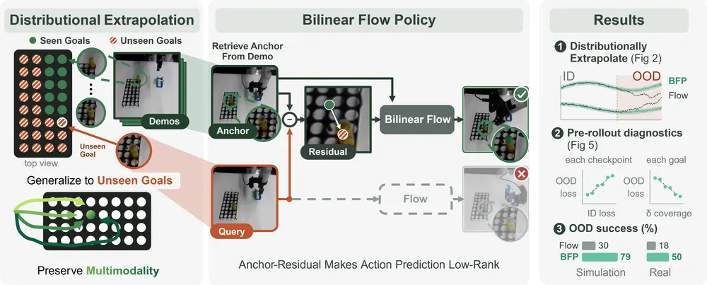
EpicWorldModel: Exploration-driven Planning with Latent World Models
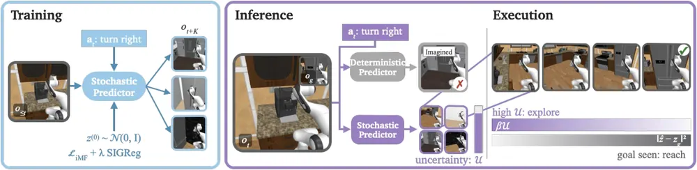
Video2World: Benchmarking Coding Agents for Interactive World Modeling from Embodied Videos
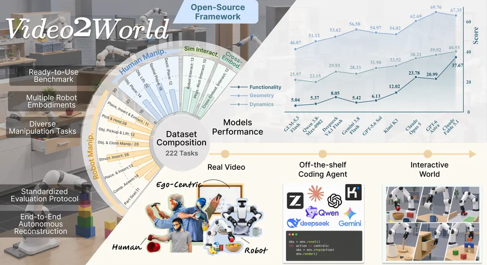
I-BFM: Reward-Conditioned Robust Humanoid Interaction via Unsupervised Reinforcement Learning
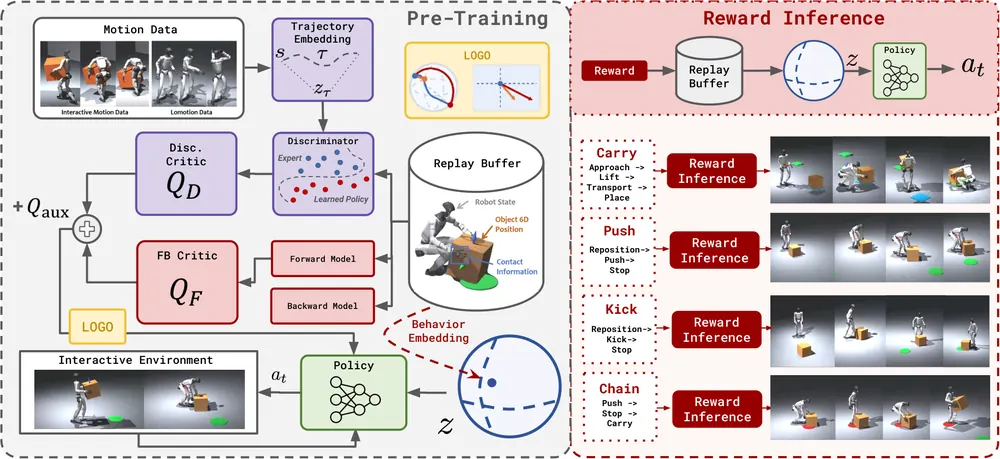
H-JEPA: End-to-End Learning of Hierarchical World Models for Visual Planning
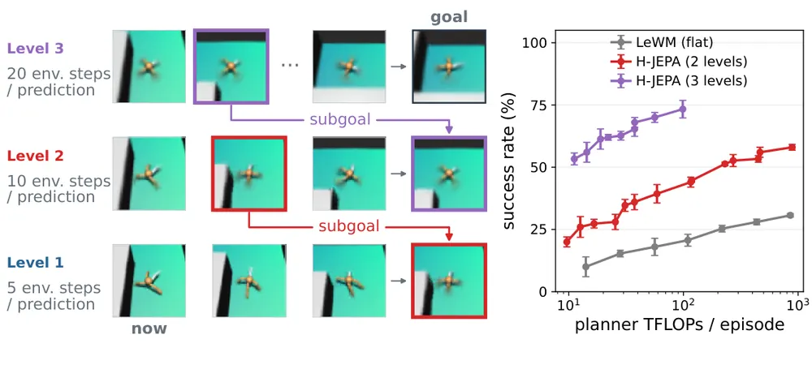
SUAVE: Unified Video-Action Models via Masked Diffusion
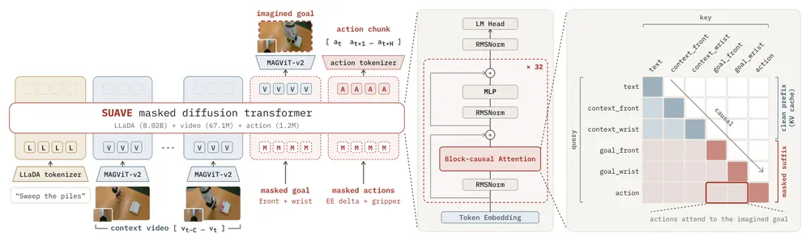
How Long, Not How Close: A Learned Temporal Metric for Planning in Latent World Models
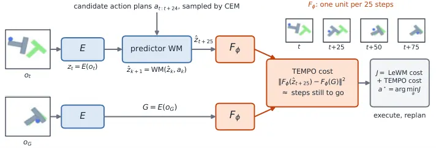
OGAM: Connecting Systematic Testing to Runtime Assurance through Object-Grounded Attention Monitoring for VLA Policies
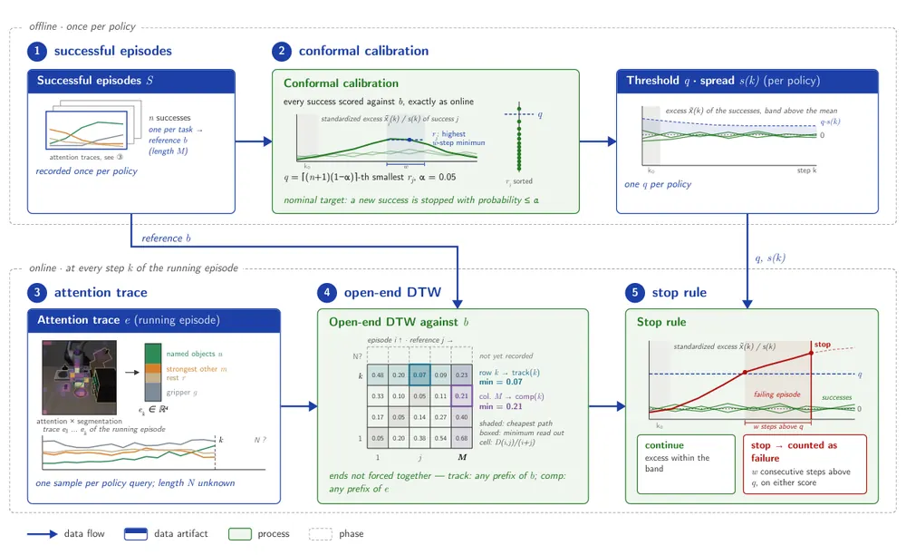
Frozen in a Frame: The Velocity Blind Spot in JEPA World Models
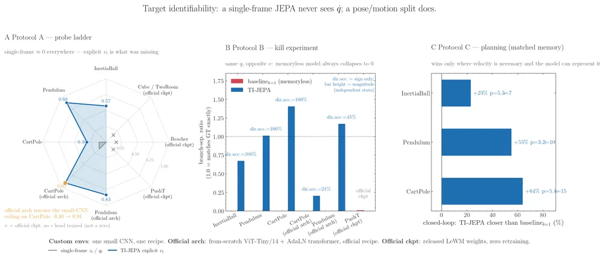
Do VLAs Understand and Adapt to the Objects They Handle, or Simply Replay Learned Behaviors?
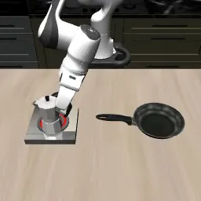
Encoded but Not in Control: Revealing the Grounding Gap in Vision-Language Robot Policies
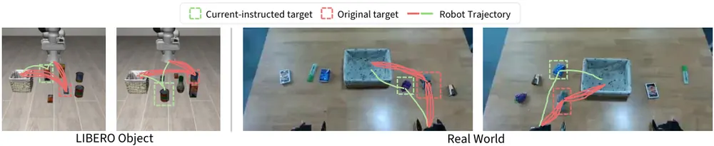
When to Switch: Reliable Action-Chunk Extension for Vision-Language-Action Models
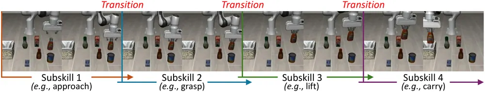
When Low Prediction Error Misleads Planning: Diagnosing Representation, Dynamics, and Decision Failures in Latent World Models
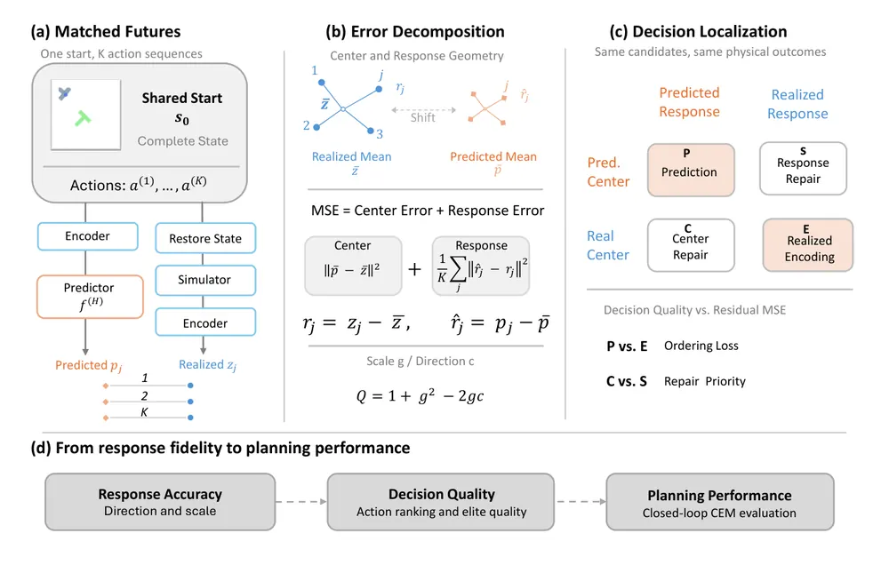
ForeAct3D: Policy-Grounded Future World Modeling for VLA Policies
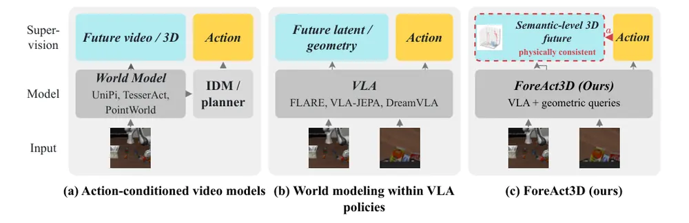
Beyond In-Distribution Preservation: Recovering Generalization in Quantized VLAs via Vulnerability-Oriented Tuning
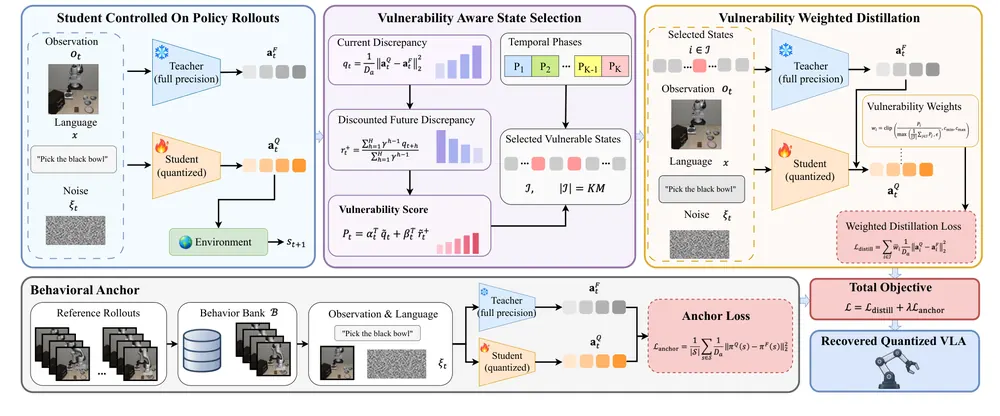
오늘의 핵심 연구 트렌드 종합
- "예측 오차가 낮다고 planning이 맞는 건 아니다" — frozen latent world model(JEPA 계열)의 구조적 결함을 진단하고 가벼운 보정 모듈로 고치는 논문이 네 편임. Low Prediction Error Misleads Planning은 MSE를 지배하는 성분과 decision에 중요한 성분이 다름을 oracle repair로 보임. How Long Not How Close는 latent distance가 먼 goal에서 실패하는 걸 temporal metric으로 고침. Frozen in a Frame은 단일 프레임 타깃이 속도를 원천적으로 못 담는다는 걸 증명함.
- VLA는 instruction과 object property를 진짜로 이해하지 않는다 — Encoded but Not in Control은 scene을 고정하고 instruction만 바꾸면 VLA가 원래 target을 그대로 조작한다는 걸 보임. Do VLAs Understand and Adapt는 물체 질량을 바꿔도 들기 동작이 안 변한다는 걸 보임. 둘 다 representation에는 정보가 디코딩되는데 행동에는 반영 안 되는 모순을 지적함.
- 배포 전·실행 중 VLA 실패를 감지하는 lightweight monitor — OGAM은 object-grounded attention과 conformal calibration으로 조기정지 규칙을 만듦. Beyond In-Distribution Preservation은 quantization 후 action discrepancy가 소수 state에 집중됨을 보여 선택적 개입의 근거를 댐.
- world model과 policy를 하나의 generative backbone으로 합치는 흐름 — SUAVE는 masked diffusion으로 language·video·action을 같은 vocabulary에 넣어 마스킹 패턴만으로 역할을 바꿈. ForeAct3D는 future prediction을 policy가 실제로 낼 action에 묶음. SUAVE는 goal 마스킹 시에만 추론에 직접 쓰고, ForeAct3D는 학습 보조 손실로만 써서 둘 다 일반 추론 시에는 future prediction을 직접 쓰지 않음.
- unseen goal·environment shift로의 외삽 — Bilinear Flow Policy는 이론적 상한 증명까지 갖춘 anchor-residual 분해로 OOD 성공률을 2.6배 올렸고, 오늘 배치에서 가장 완결성 높은 논문으로 판단됨.
- humanoid 전신 제어의 BFM(behavioral foundation model) 확장 — I-BFM이 object interaction까지 포함한 첫 BFM을 제시하며, 쓰러진 뒤 재기립·복구를 별도 감지 없이 reward 재계산만으로 수행함.
유망 연구 방향 및 프로젝트 제안
world model 신뢰도를 실행 중 failure trigger로 전환 - research question: latent world model의 prediction uncertainty(ensemble disagreement, response error)를 real-time failure detection 신호로 쓸 수 있는가. - 접근·novelty: EpicWorldModel의 flow ensemble disagreement와 Low Prediction Error Misleads Planning의 center/response 분해를 결합해, "이 latent가 지금 plan에 쓸만한가"를 매 step 판정하는 online monitor로 구성함. - 왜 지금·경쟁 prior works: 두 논문 모두 오늘 공개됐고 서로 독립적으로 비슷한 문제(저오차≠고신뢰)를 다룸 — 아직 둘을 묶어 failure trigger로 쓴 논문은 없음. - risk·target venue: sim 환경 4종 안에서만 검증된 아이디어라 real-robot 전이가 관건. CoRL 또는 RSS.
object-centric 3D representation으로 VLA grounding gap 메우기 - research question: object-centric 3DGS나 scene graph로 physical property·instruction target을 명시적으로 조건화하면 Encoded but Not in Control·Do VLAs Understand가 지적한 grounding gap이 줄어드는가. - 접근·novelty: 두 진단 논문의 probing+attention 분석 파이프라인을 그대로 평가 지표로 재사용하고, representation만 object-centric 3D로 바꿔 before/after 비교함. - 왜 지금·경쟁 prior works: 두 논문은 진단만 하고 해법을 안 냄 — representation-level 해법 공백이 그대로 열려 있음. - risk·target venue: grounding gap이 representation 부족이 아니라 training objective 문제일 가능성 — ablation으로 먼저 확인 필요. CVPR 또는 CoRL.
frozen VLA/world model에 test-time 온라인 보정 모듈 일반화 - research question: How Long Not How Close(TEMPO)의 "frozen model + 작은 online-updated correction"이 world model 외에 VLA policy 자체의 distribution shift 대응에도 통하는가. - 접근·novelty: PIVOT-Q(Beyond In-Distribution Preservation)의 vulnerability state 선택 기준을 TEMPO 식 경량 MLP 보정에 적용해, quantization 상황을 넘어 일반 distribution shift로 확장함. - 왜 지금·경쟁 prior works: 두 논문 모두 "model은 freeze, 작은 모듈만 online 학습"이라는 같은 패턴을 다른 문제(temporal metric vs quantization robustness)에 썼음 — 일반화 시도가 아직 없음. - risk·target venue: 온라인 학습이 reward/label 없이 가능한 신호를 찾아야 함(TEMPO, 즉 How Long Not How Close는 step count, PIVOT-Q, 즉 Beyond In-Distribution Preservation는 teacher 필요) — teacher 없는 self-supervised 신호 설계가 핵심 risk. NeurIPS 또는 ICLR.
action-conditioned future prediction을 추론 시 counterfactual planning으로 전환 - research question: ForeAct3D·SUAVE가 학습에만 쓰는 future prediction을 추론 시 여러 action candidate에 굴려 비교하면 counterfactual reasoning 기반 action selection이 되는가. - 접근·novelty: 두 논문 모두 "future prediction을 추론 시 안 쓴다"를 스스로 limitation으로 명시함 — 이 공백을 test-time planning loop로 채우는 것이 직접적인 research gap임. - 왜 지금·경쟁 prior works: world model 기반 planning(CEM, MPC)은 많지만 policy-grounded future query를 그대로 counterfactual rollout에 쓴 논문은 아직 없음. - risk·target venue: 추론 시 여러 candidate를 굴리면 latency가 늘어나 실로봇 real-time 제약과 충돌 — 속도-정확도 trade-off 입증이 관건. CoRL.
humanoid BFM의 object interaction 확장을 manipulation arm으로 전이 - research question: I-BFM의 "감지 없이 재평가로 복구"하는 FB representation(forward-backward representation, 미래 state 분포를 forward/backward 두 함수로 분해해 reward 없이 학습하는 표현) 구조가 dexterous manipulation arm의 failure recovery에도 통하는가. - 접근·novelty: I-BFM은 box 1종·humanoid 전신에 한정됨 — object shape 다양성과 manipulation arm의 contact-rich 특성으로 확장하는 게 본질적 차이임. - 왜 지금·경쟁 prior works: BFM 계열은 locomotion 위주였고 object interaction으로 확장한 건 이 논문이 처음이라 직접 경쟁하는 manipulation BFM이 아직 없음. - risk·target venue: FB representation이 object shape 다양성에 얼마나 스케일하는지 미검증 — box 1종 결과만으로는 일반화 주장이 약함. CoRL.
오늘 반드시 읽어야 할 논문
- Bilinear Flow Policy — 오늘 배치 최고점(80)으로, unseen goal 외삽에 이론적 상한 증명까지 갖춘 몇 안 되는 논문.
- EpicWorldModel — JEPA world model의 occlusion hallucination을 stochastic predictor로 고친 NeurIPS 2026 accept 논문.
- Video2World — coding agent로 embodied video를 시뮬레이션으로 자동 변환하는 benchmark, geometry와 task success의 괴리를 수치로 드러냄.
- I-BFM — humanoid-object interaction BFM 최초 시도, 로봇이 쓰러진 뒤 복구 성공률 89.3%로 baseline(1.3%) 대비 압도적으로 높음.
- H-JEPA — timescale별 독립 latent space를 쌓은 계층적 world model, flat 모델 대비 성공률 4배.
- SUAVE — language·video·action을 하나의 discrete vocabulary로 합친 masked diffusion 통합모델.
- How Long, Not How Close — frozen world model planner가 먼 goal에서 실패하는 이유를 지적하고 0.13M parameter MLP로 고침.
- Frozen in a Frame — JEPA world model이 구조적으로 속도를 못 담는다는 걸 공식 체크포인트에서 재학습 없이 증명.
전체 1차 스크리닝 결과 (1106편, 점수순) 펼치기
| # | 제목 | 점수 | 🤖 | 분야 | 한 줄 근거 |
|---|---|---|---|---|---|
| 1 | H-JEPA: End-to-End Learning of Hierarchical World Models for Visual Planning | 74 | 9 | World Model | 각 레벨이 자기 latent space에서 더 먼 미래를 예측하는 계층적 action-conditioned JEPA(H-JEPA)를 제안해 하위 레벨 예측을 상위 planner의 subgoal로 쓰고 Visual AntMaze에서 성공률을 18%에서 73%로 올렸으며 DROID 실제 로봇 영상으로도 확장돼 world model·long-horizon planning 우선 주제에 정확히 부합함 |
| 2 | OGAM: Connecting Systematic Testing to Runtime Assurance through Object-Grounded Attention Monitoring for VLA Policies | 72 | 10 | VLA | VLA policy의 attention을 object mask로 투영해 성공·실패 궤적의 attention divergence를 runtime에서 감지하는 OGAM을 제안하고 OpenVLA·OpenVLA-OFT·UniVLA·pi0.5 전부에서 실패를 사전에 멈춰 failure detection/recovery 우선 주제에 정확히 부합함 |
| 3 | SUAVE: Unified Video-Action Models via Masked Diffusion | 72 | 10 | VLA | video·action·language를 하나의 discrete token 시퀀스로 두고 masked diffusion으로 생성해 마스킹 패턴만 바꿔 world model·policy·video-action model을 전환하는 통합 아키텍처(SUAVE)이고 실제 로봇에서 1초 action chunk를 1030ms에 생성해 2.5Hz 폐루프 제어를 유지하며 human video co-training으로 distribution shift에 대한 zero-shot robustness까지 개선함 |
| 4 | Bilinear Flow Policy: Distributional Extrapolation for Goal-Conditioned Visuomotor Imitation | 72 | 9 | Manipulation | unseen goal로의 distributional extrapolation을 transductive anchor retrieval + bilinear flow로 formulate하고 OOD 오차 상한을 이론적으로 증명, OOD 성공률 2.63x·실로봇 32% 개선까지 보여준 강한 논문 |
| 5 | I-BFM: Reward-Conditioned Robust Humanoid Interaction via Unsupervised Reinforcement Learning | 72 | 9 | World Model | humanoid-object interaction을 위한 forward-backward representation 기반 behavioral foundation model, task-specific 재학습 없이 carrying/pushing/kicking을 다 수행하고 로봇이 넘어진 뒤에도 89.3% 성공 유지(planning baseline 1.3%)해 failure recovery 관점에서 강한 결과 |
| 6 | Frozen in a Frame: The Velocity Blind Spot in JEPA World Models | 72 | 7 | World Model | JEPA world model이 단일 프레임 임베딩만으로는 velocity 정보를 구조적으로 잃는다는 것을 네 benchmark에서 실증하고 pose/motion 분리라는 작은 구조적 수정으로 planning 성능을 크게 개선해 world model 설계에 직접적 함의가 있음 |
| 7 | How Long, Not How Close: A Learned Temporal Metric for Planning in Latent World Models | 70 | 9 | World Model | frozen latent world model의 거리 기반 planning이 목표가 먼 경우 실패하는 문제를 지적하고, 같은 demonstration만으로 학습하는 경량 temporal-distance metric(TEMPO)을 planner 비용에 더해 LeWM·PLDM 두 planner 모두를 maze navigation·tabletop pushing·robotic arm control·3D manipulation 11개 환경에서 개선함(TwoRoom 3-plan에서 36%→99%) — world model 기반 test-time planning에 바로 쓸 수 있는 가벼운 구조적 기여 |
| 8 | Encoded but Not in Control: Revealing the Grounding Gap in Vision-Language Robot Policies | 70 | 9 | VLA | scene을 고정하고 instruction만 바꾸는 개입 실험으로 VLA가 language를 encode는 하지만 action에 반영 못하는 grounding gap을 attention·probe·UMAP으로 구체적으로 드러낸 진단 논문, failure diagnosis 우선주제와 직결 |
| 9 | EpicWorldModel: Exploration-driven Planning with Latent World Models | 70 | 8 | World Model | JEPA 기반 world model을 flow matching으로 stochastic하게 확장해 occlusion 등 partial observability에서 여러 미래를 예측하고 그 예측 분산을 CEM 플래닝의 exploration guidance로 쓴 것이 world model·test-time planning 주제에 정확히 부합하며 NeurIPS 2026 채택작임 |
| 10 | When Low Prediction Error Misleads Planning: Diagnosing Representation, Dynamics, and Decision Failures in Latent World Models | 68 | 9 | World Model | latent world model에서 prediction error(MSE)를 지배하는 성분과 action 선택 개선에 실제로 중요한 성분이 다름을 보이고, PushT·Reacher·Cube 등 manipulation 과제에서 LeWM·PLDM planner를 대상으로 representation·dynamics·decision 단계를 분리 진단함 — world model 기반 robot planning의 실패 원인 진단에 직접 기여하는 핵심 논문 |
| 11 | Beyond In-Distribution Preservation: Recovering Generalization in Quantized VLAs via Vulnerability-Oriented Tuning | 68 | 9 | VLA | quantized VLA policy가 in-distribution 성능은 유지해도 환경 변화에 취약해지는 현상을 밝히고 vulnerability-aware distillation(PIVOT-Q)으로 LIBERO-Plus에서 일관된 복원을 보여 VLA robustness·failure recovery와 직결됨 |
| 12 | When to Switch: Reliable Action-Chunk Extension for Vision-Language-Action Models | 68 | 9 | VLA | action chunk 길이 늘릴 때 subskill transition에서 오차가 커진다는 관찰에서 transition timing 예측·조건화로 4배 긴 chunk도 신뢰성 있게 실행, 실로봇에서 idle time 5배 감소까지 보여줌 |
| 13 | Do VLAs Understand and Adapt to the Objects They Handle, or Simply Replay Learned Behaviors? | 68 | 9 | VLA | 7개 VLA의 activation을 probing·RSA로 분석해서 물리적 속성(질량·마찰 등)이 의미적 속성보다 훨씬 약하게 인코딩되고 행동에도 반영 안 된다는 걸 보여줌, VLA의 진짜 generalization 여부를 다루는 중요한 진단 논문 |
| 14 | Video2World: Benchmarking Coding Agents for Interactive World Modeling from Embodied Videos | 68 | 8 | World Model | embodied video로부터 자동으로 interactive simulator를 만드는 video-to-simulation을 코딩 에이전트 과제로 formulate한 것으로 embodied data scaling의 핵심 bottleneck을 직접 겨냥하고 시각적 사실성과 task success의 gap까지 보여줌 |
| 15 | ForeAct3D: Policy-Grounded Future World Modeling for VLA Policies | 66 | 9 | VLA | 미래 예측을 policy가 실제로 실행할 action chunk에 조건화하고 배경 staticity·rigidity로 물리적 일관성을 강제하는 ForeAct3D를 제안해 로봇 사전학습 없이 LIBERO 98.3%·CALVIN 3.73을 달성하고 실로봇에서도 기본 policy의 6.7%를 37.8%로 끌어올려 policy-grounded world model이라는 novel formulation으로 VLA 우선 주제에 정확히 부합함 |
| 16 | DexForge: High-Fidelity Physics-Informed Dexterous Retargeting | 66 | 9 | Manipulation | 사람 영상의 손-물체 상호작용을 differentiable physics로 로봇 손 trajectory로 변환하는 retargeting, 7개 손 전반에서 baseline 대비 success rate 35~53pp 개선 및 실로봇 transfer까지 보임 |
| 17 | EMBER-Bench: Benchmarking Cross-Event Causal Memory in Long-Horizon Embodied Tasks | 66 | 8 | Embodied AI | 장기 embodied task에서 과거 사건이 현재 행동을 어떻게 제약하는지 묻는 cross-event causal memory benchmark로 robot memory·failure recovery·counterfactual reasoning 우선 주제를 직접 겨냥하고 human-model gap을 크게 드러냄 |
| 18 | P3: Persistent Particle Planning for Constrained Diffusion Control | 66 | 8 | World Model | diffusion control에 Feynman-Kac particle system을 적용해 재학습 없이 test-time 제약을 만족시키는 planning, re-noising depth와 route 유지 관계를 이론적으로 분석해 test-time optimization 우선주제에 잘 맞음 |
| 19 | GOTT: Object-centric Dexterous Manipulation with a Reusable Cross-Embodiment Primitive | 64 | 9 | Manipulation | 다양한 object·arm-hand platform·손 형태에 재사용 가능한 cross-embodiment contact-acquisition primitive(GOTT)를 제안해 reach-acquire-move로 dexterous manipulation의 범용 low-level primitive 부재 문제를 다루고 시뮬레이션·실로봇 모두에서 open-loop grasp 대비 성공률을 일관되게 높임 |
| 20 | $R^2$-WAM: Repair-and-Reject Post-Training for World Action Models | 64 | 9 | World Model | video prediction이 실제 입력 action을 충실히 반영하지 않을 수 있다는 문제를 kinematic alignment score로 교정(repair)한 뒤 그 world model로 демо보다 못한 action sample을 걸러 negative fine-tuning하는(reject) 2단계 post-training(R2-WAM)을 제안해 RoboTwin 93.8%, 실제 long-horizon Fold Shirt task에서 Fast-WAM의 0% 대비 87.5%를 달성해 world model을 policy 개선에 쓰는 consequence-based 접근으로 우선 주제에 정확히 부합함 |
| 21 | FLEX-WAM: Flexible Block-Causal World-Action Models for Long-Horizon Imagination and Planning | 64 | 9 | World Model | 가변 길이 context와 비인과 horizon을 지원하는 block-causal KV-cacheable 구조로 실시간 streaming rollout을 가능하게 하고 state·action flow-matching gradient 균형과 Forward-Dynamics elasticity로 action 반응성을 보장한 FLEX-WAM을 제안해 MCTS 안에서 PushT와 OGBench Puzzle-4x4 전체를 상상 속에서 풀고 실제 bimanual 로봇에서 policy와 예측기를 동시에 수행해 world model·long-horizon planning 우선 주제에 정확히 부합함 |
| 22 | FreeSpeed: Training-Free Speed Control for Generative Robot Policies | 64 | 9 | Manipulation | 학습된 정책의 실행 속도를 training-free로 조절하는 test-time 기법, action chunk의 directional inconsistency를 criticality 신호로 써서 실로봇에서 성공률 유지하며 속도 범위 0.38~1.97x 확보 |
| 23 | Demonstration-Calibrated Port-Hamiltonian Retuning for Manipulation Policies | 64 | 9 | Manipulation | diffusion/VLA 정책 배포 시 downstream impedance gain을 port-Hamiltonian 모델로 closed-form 도출, rollout 없이 LIBERO와 4개 실로봇 task에서 성능 개선 및 SmolVLA·OpenVLA-OFT에도 일반화됨 |
| 24 | Conditional Trajectory Peaks: Single-Pass Multimodal Policies over Action Chunks | 64 | 9 | Manipulation | single-pass로 action chunk의 multimodality와 cross-chunk consistency를 동시에 다루는 정책, LIBERO 97.25%·real dual-arm 전과제 성공에 pi0.5보다 빠른 추론속도까지 확보 |
| 25 | VLA-ZO: Fast Zeroth-Order Adaptation for Vision-Language-Action Models | 64 | 9 | VLA | VLA의 action branch만 zeroth-order로 적응시키고 vision-language prefix를 freeze·재사용해 deployment-time 분포이동 적응을 25~32배 가속, test-time adaptation 우선주제에 부합 |
| 26 | SimForcing: Distilling Simulation Motion Priors into Real-Domain Robot World Models | 64 | 9 | World Model | 시뮬레이션의 motion prior를 latent distillation으로 real-domain world model에 전이하고 simulation-conditioning CFG로 결합, Bridge에서 최고 성능 달성에 VLA 초기화로 LIBERO 성공률까지 개선 |
| 27 | KineWorld: Action-Induced Transport Fields for Embodied World Modeling | 64 | 8 | World Model | 로봇 kinematics로부터 camera-aligned transport field를 만들어 world model의 생성 감독을 공간적으로 희소한 상호작용 영역에 재분배한 것으로 ALOHA-AgileX 양손 조작 데이터와 RoboTwin 2.0에서 평가해 embodied world model 설계에 직접적 기여임 |
| 28 | TAPDreamer: Transferable Adversarial Patches for World Action Models | 64 | 8 | World Model | world action model(FastWAM 등)의 공유 visual encoder를 겨냥한 transferable adversarial patch 공격이고 LIBERO·RoboTwin에서 성공률을 0%까지 떨어뜨림 — robot policy 안전성/failure 유발 메커니즘 분석으로 novelty 있음 |
| 29 | Direction-Conditioned Policies for Online Goal-Conditioned Reinforcement Learning | 64 | 8 | RL | contrastive RL의 critic이 인코딩한 geometry를 직접 활용해 방문했던 state를 waypoint로 삼고 방향·거리로 policy를 조건화하는 Direction-Conditioned Policies를 제안했고 9개 navigation·manipulation task에서 CRL보다 success rate가 높음 — goal-conditioned manipulation RL에 바로 참고할 수 있는 구조적 기여 |
| 30 | RoboIRS: Inference-Time Internal Representation Steering for Generalist Robot Policies | 62 | 9 | VLA | 성공·실패 rollout으로 선형 분류기를 학습해 policy parameter를 바꾸지 않고 내부 representation을 steering 방향으로 밀어 OOD 상황에서 복원하는 RoboIRS를 제안해 frozen pi0.5에서 평균 성공률을 44.4%에서 66.2%로, 실로봇과 world-action model인 Cosmos Policy에서도 올려 test-time optimization 우선 주제에 정확히 부합함 |
| 31 | Test-Time Training as Residual Memory for Robot Policies | 62 | 9 | VLA | 제한된 memory bank에 담기지 않는 history 정보를 reconstruction residual로 정의하고 그 residual을 Test-Time Training의 학습 목표로 삼아 fast weight가 보완적 장기 기억 역할을 하게 한 TTT-RM을 제안해 8-stage 3분짜리 stowing task 등 memory-intensive 벤치마크에서 일관된 개선을 보여 robot memory·test-time optimization 우선 주제에 정확히 부합함 |
| 32 | Arm-wise Compositional Generalization in Dual-Arm Vision-Language-Action Models | 62 | 9 | VLA | dual-arm VLA의 arm-wise compositional generalization을 다루는 벤치마크와 skill-LoRA+arm-wise attention 결합 방법, unseen composition에서 baseline 대비 성공률 크게 개선(실로봇 39% vs 10%) |
| 33 | Future Anchored Verification and Online Recovery for World Action Models | 62 | 9 | World Model | world action model이 예측했던 미래 프레임을 anchor로 써서 drift를 검증하고 VLM 기반 교정 지시로 복구하는 방법, failure detection/recovery 우선주제와 정확히 맞으나 LIBERO 개선폭 자체는 작음(97.85→98.10%) |
| 34 | Recursive Video In-Context Learning for Agentic Robot | 62 | 9 | VLA | LLM 에이전트가 데모 비디오를 계층적 구조로 탐색하며 필요한 디테일(grasp 순간 등)만 불러오는 training-free in-context learning, 데모 1개로 LIBERO-PRO·Plus에서 성공률 개선, robot memory 우선주제와 맞음 |
| 35 | LatentQuant: Preserving the Policy-Facing Latent Contract under NVFP4 VAE Quantization | 62 | 9 | World Model | world action model이 쓰는 video VAE를 NVFP4로 양자화할 때 policy-facing latent contract가 깨지는 메커니즘을 규명하고(LIBERO 성공률 95.5%→10.5% 붕괴) 2단계 QAT로 복구, LIBERO 95.75%·RoboTwin 68.8% 유지하며 1.17~1.26배 가속까지 달성한 배포 직결 기여 |
| 36 | Triggering Generalist Reasoning via Predictive Uncertainty for Dual-System VLA | 62 | 8 | VLA | dual-system VLA에서 predictive uncertainty로 generalist 호출 시점을 적응적으로 트리거해 real-robot에서 호출 75% 절감과 성공률 향상을 동시에 달성해 test-time inference 효율화와 VLA 우선 주제가 맞물림 |
| 37 | RealtimeWAM: One-Step Asynchronous World Action Models | 62 | 8 | VLA | world action model의 action denoising을 one-step으로 distill하고 video·action expert를 비동기 파이프라이닝으로 겹쳐 LIBERO·RoboTwin에서 성능 손실 없이 약 25배 가속을 달성해 test-time 추론 효율화와 WAM 우선 주제에 직접 부합함 |
| 38 | Memory-State Critic for Asymmetric Actor-Critic with Application to Vision-Based Pursuit-Evasion | 62 | 8 | RL | POMDP asymmetric actor-critic에서 policy의 memory로 조건화한 memory-state critic을 제안해 bias 없이 더 빠르게 수렴함을 vision 기반 quadrotor pursuit-evasion에서 보여줌 — robot memory·RL 우선 주제에 부합하나 workshop non-archival 논문임 |
| 39 | Reward-DAgger: Robot-Gated Interactive Imitation Learning with General-Purpose Progress-Based Reward Models | 62 | 8 | Manipulation | policy architecture에 무관하게 범용 progress 기반 reward model의 dense 신호로 인간 개입 시점을 결정하는 Reward-DAgger를 제안해 task별 재튜닝 없이 8개 실제·시뮬레이션 task에서 failure detection 정확도-지연 trade-off와 interactive imitation learning 성능을 모두 개선함 |
| 40 | Mulligan: Performance-Guided Data Collection for Efficient On-Robot Learning | 62 | 8 | Manipulation | 실패가 집중되는 initial state를 능동적으로 선택해 supervised 데이터 수집을 효율화, failure 데이터까지 쓰는 value function과 결합해 실제 task에서 10~34pp 개선 보여줌 |
| 41 | MarvisNav: Making Memory Visible on Route Choices for Zero-Shot Object Navigation | 62 | 8 | Navigation | 탐색 상태를 egocentric view의 visual route choice에 직접 결합해 VLM이 별도 fusion 없이 target 관련성과 탐색 이력을 함께 평가, 정책학습 없이 HM3D SOTA(81.2% SR) 달성하고 VLM 호출도 크게 줄임 |
| 42 | InterMimicGen: Scaling Humanoid Loco-Manipulation through Self-Evolving Motion Imitation | 62 | 8 | Manipulation | human-object interaction 모션캡처 데이터를 humanoid로 retarget하고 성공한 variant만 남기는 self-evolving data flywheel로 loco-manipulation 데이터를 계속 확장, 실로봇 transfer까지 확인 |
| 43 | Action-Consequence Alignment for Reliable Planning and Self-Improving in Latent World Models | 62 | 7 | World Model | latent world model의 action-consequence alignment 부족을 지적하고 이를 보정하는 training objective 제안, reliable planning과 self-improving data collection에 직접 연결되는 world model 연구임 |
| 44 | EvoMem-VLA: State-Evolution Memory for Long-Horizon Robot Manipulation | 60 | 9 | VLA | 과거 state 간의 변화를 directional·source-conditioned delta token으로 명시적으로 인코딩해 보존하는 state-evolution memory(EvoMem-VLA)를 제안하고 task-adaptive routing으로 multi-stage task를 처리해 RMBench 80.7%·RoboMME 82.0%·실로봇 83.8%로 기존 SOTA를 크게 상회해 robot memory·long-horizon manipulation 우선 주제에 정확히 부합함 |
| 45 | How (and How Not) to Use Data Augmentation in VLA Post-Training | 60 | 9 | VLA | VLA RL post-training에서 critic만 augment하고 actor는 clean하게 둬야 한다는 실용적 발견, pi0.5·GR00T N1.5에서 OOD 성공률 7.8~10점 개선 |
| 46 | Adaptive Mean Flow for Responsive Closed-Loop Robot Control | 60 | 9 | Manipulation | Mean Flow를 가속해 매 스텝 feedback 반영하는 완전 closed-loop 정책 제어를 구현, 이전 스텝 trajectory를 noise로 corrupt해서 smoothness 유지, sim·real 전반에서 baseline 대비 성능 개선 |
| 47 | When Does Retrieval Help? A Study of In-Context Adaptation in Vision-Language-Action Models | 60 | 8 | VLA | RICL 프레임워크에서 VLA의 in-context test-time adaptation을 위한 네 가지 retrieval 방법(이미지·상태·backbone feature·random)을 체계적으로 비교했고 어떤 방법도 일관되게 우세하지 않으며 random retrieval도 유효한 성공률을 낸다는 점을 보임 — VLA test-time adaptation의 신뢰성에 대한 실증적 경고 |
| 48 | Learning Coordinated Visuomotor Box-Pushing from Solo Demonstrations | 60 | 8 | Manipulation | 단일 로봇 teleop 데모만으로 40대 규모 다로봇 협응 box-pushing 학습 시도, CoRL 2026 accept인데 passive observation만으론 협응 학습이 어렵다는 bottleneck을 명시적으로 드러냄 |
| 49 | Execution-Aligned Progressive Noise for Consistent Asynchronous Replanning in Generative Robot Policies | 60 | 8 | Manipulation | 비동기 재계획시 chunk 간 독립적 noise로 인한 mode switching을 execution-aligned noise 전파로 해결, 실로봇 bimanual cloth folding 96.7% 등 강한 결과 |
| 50 | PermVLA: Factorization Order as a Regularizer for VLA Learning | 60 | 8 | VLA | VLA의 action chunk factorization order를 정규화 수단으로 보고 causally anchored permutation을 제안, LIBERO/LIBERO-Plus/CALVIN에서 LTR 대비 일관된 개선을 보임 |
| 51 | From Sight to Foresight: Predictive Spatial Reasoning in Vision-Language Models | 60 | 7 | Embodied AI | metric-scale VLM으로 미래 공간 상태를 예측하는 predictive spatial reasoning이라 embodied spatial reasoning과 collision avoidance에 직결되고 새 benchmark까지 제시함 |
| 52 | AgenticTactileVLA: Contact-Guided Execution-Time Supervision for Generalizable Dexterous Manipulation without VLA Retraining | 58 | 9 | VLA | 고정된 VLA의 approach·hand target은 그대로 두고 finger flexion 조정·재시도·compliant 모드 전환을 손끝 proprioceptive contact 증거만으로 결정하는 execution-time supervisor를 제안해 VLA 재학습이나 tactile 센서 없이 held-out object에서 완료율을 61.3%에서 84.0%로 올려 failure recovery 우선 주제에 정확히 부합함 |
| 53 | DiVeR: Decision-Critical Verifier Learning for VLA Test-Time Scaling | 58 | 9 | VLA | trajectory 전체를 동등하게 평가하는 기존 verifier와 달리 sampled action representation의 분산으로 decision-critical state를 추정해 verifier 학습을 그 state에 재가중하는 DiVeR를 제안해 LIBERO·RoboCasa와 실제 Franka 로봇에서 verifier-guided test-time scaling 성능을 일관되게 올려 우선 주제에 부합함 |
| 54 | GeoBridge-VLA: Geometry-Aware Residual Adaptation for Vision-Language-Action Models | 58 | 8 | VLA | VLA의 frozen visual encoder에 depth 감독으로 geometric feature bridge를 붙인 residual adaptation으로 LIBERO와 실제 로봇(ROBOTIS OMY)에서 baseline 대비 큰 성공률 향상을 보임 |
| 55 | REDIRECT: A 1% Fix for Bad Robot Habits | 58 | 8 | Manipulation | episode 단위 retained/problematic label만으로 teleoperation 데이터의 나쁜 습관 구간을 국소적으로 찾아 전체 재학습 대비 1%의 샘플-backward 예산만 써서 clean-retraining gap의 88.8%를 복구해 데이터 수정 기반 실패 교정으로서 의미 있음 |
| 56 | DreamFormer: Dream Imitation with a Transformer World Model for Language-Conditioned Robotic Manipulation | 58 | 8 | World Model | task-agnostic transformer world model의 latent imagination 안에서 expert demonstration에 정렬되도록 intrinsic reward로 on-policy 학습해 behavioral cloning의 covariate shift를 완화하는 DreamFormer를 제안하고 CALVIN에서 LUMOS·HULC를 능가하며 zero-shot 환경 전이에서 거의 두 배 성능을 보여 world model 우선 주제에 직접 부합함 |
| 57 | PerturBot: Breaking Shortcut Priors in Vision-Language-Action Models with Perturbative Training | 58 | 8 | VLA | VLA가 과제와 무관한 visual·lexical·motor shortcut에 의존해 성공률은 올라가도 근거는 틀릴 수 있음을 짚고 wrist-view perturbation·caption 보강·실패 trajectory relabeling으로 shortcut을 깨는 Perturbot과 shortcut 의존도를 진단하는 GroundingFscore를 함께 제안해 VLA 평가·학습 방법론에 실질적 기여를 함 |
| 58 | PatternDex: Learning Interaction Patterns to Guide Reinforcement Learning of Bimanual Dexterous Manipulation of Articulated Objects | 58 | 8 | Manipulation | 손-물체 간 상호작용 패턴이 물체에 의해 결정된다는 관찰로부터 human-object 데모의 패턴을 token으로 학습해 embodiment별 wrist motion·contact point를 추정, RL guidance로 쓰는 PatternDex를 제안해 bimanual dexterous manipulation 성공률을 52.2%에서 92.8%로 크게 올리고 실제 마이크로웨이브 작업까지 전이함 |
| 59 | Vela: Scaling Vision-Language-Action Models with Adaptive Action Curve Parametrization | 58 | 8 | VLA | 미래 동작을 고정 action chunk 대신 compact spline 기반 연속 trajectory로 표현해 동작에 따라 시간 분해능이 바뀌는 Vela를 제안해 multi-embodiment 사전학습 후 LIBERO-X·EBench와 실제 긴 horizon manipulation task에서 검증한 VLA foundation model 연구임 |
| 60 | Dataset-Free Compliant Humanoid Loco-Manipulation with Dynamic Online Posture | 58 | 8 | Manipulation | human motion data 없이 humanoid loco-manipulation 학습, reachability prior로 성공률 37.8%에서 77.8%로 개선, G1 실로봇 검증까지 함 |
| 61 | Robotizing Human Videos with Physically Consistent Interactions | 58 | 8 | Manipulation | 사람 영상에서 hand를 로봇으로 교체할 때 contact와 occlusion을 물리적으로 일관되게 만들어 co-training 데이터로 활용, RoboTwin 4개 task와 실로봇에서 OOD 상황에 강한 개선 보임 |
| 62 | AffordCraft: Scalable Construction of Task-Ready Simulation Assets from Single Images | 58 | 8 | 3D Vision | 단일 RGB 이미지에서 생성이 아닌 retrieval 방식으로 관절 구조가 물리적으로 유효한 시뮬레이션 asset을 만들어, 생성 기반 5개 baseline보다 훨씬 높은 성공률과 적은 GPU 시간으로 robot learning용 asset 구축 문제를 다룸 |
| 63 | A Bird's-Eye View of Iterative Reward Design | 58 | 7 | RL | LLM 기반 iterative reward design 방법들을 통일된 설정으로 비교하는 벤치마크(BIRD)를 만들어 MuJoCo·Meta-World·Assistax·HumanoidBench에서 평가했고, 단순한 설계 선택 조합이 기존 방법보다 낫다는 실증 결과를 보임 — RL reward design이라는 실용적 문제를 다루지만 novelty는 벤치마킹 수준임 |
| 64 | Task Inference Beyond Least Squares in Behavioral Foundation Models | 58 | 7 | RL | Behavioral Foundation Model에서 reward로부터 task vector를 추론할 때 OLS 대신 successor-measure mismatch까지 균형잡는 BLS를 제안했고 locomotion·manipulation·humanoid control 벤치마크에서 zero-shot policy 성능을 개선함 — test-time task inference로 manipulation·locomotion에 직접 적용된 RL 기여 |
| 65 | Reachability-Aware Diffusion Policy Optimization | 58 | 7 | RL | model-free reachability 추정으로 diffusion policy의 safety-aware RL을 가능하게 한 RADPO를 제안하고 constraint violation을 크게 줄여 safe manipulation RL에 바로 연결될 수 있음 |
| 66 | GAMBIT: Learning to Plan Continuous Multi-Robot Trajectories | 58 | 7 | RL | IL로 협응 motion primitive를 배우고 RL로 fine-tune해 1000대 이상 로봇을 충돌 없이 수백 ms 내에 계획, continuous multi-robot trajectory 학습에 대한 스케일 입증이 강점 |
| 67 | EnvDreamer: Large-Scale Multimodal-to-Environment Generation for Embodied AI | 58 | 7 | Embodied AI | LLM/VLM으로 UE5 환경을 대량 생성해 embodied AI 학습에 쓰는 프레임워크, navigation·rearrangement·manipulation 전반에 걸친 benchmark 결과와 2만개 환경 dataset 공개가 강점임 |
| 68 | Kepler4D: Controllable Future Video Generation via 4D Scene State Evolution | 58 | 6 | World Model | monocular video에서 명시적 4D scene state를 롤아웃해 controllable future video를 생성하는 video world model이라 robot 미래 예측·planning에 쓸 만한 formulation임 |
| 69 | PWM: Personalized World Models with Online Reinforcement Learning | 58 | 6 | World Model | 짧은 scene video로 interactive world model을 온라인 RL(GRPO/DiffusionNFT)로 개인화하는 프레임워크라 world model 커스터마이징의 새 formulation임 |
| 70 | Ultrasound Operator Guidance Using World Modeling and Retrieval Based Action Planning | 58 | 6 | World Model | V-JEPA 2.1 latent world model에 retrieval 기반 비파라미터 transition model을 결합해 probe 동작을 planning하는 초음파 operator guidance 시스템이고 실시간 전향적 실험까지 있어 world model·active perception 쪽에 가깝지만 의료 probe 가이드이고 manipulation은 아님 |
| 71 | ASCENT: Online Test-Time Training of Long-Horizon Agents via Self-Distillation of Verified Experience | 58 | 5 | Embodied AI | 배포 중 LLM agent가 자신의 verified trajectory를 LoRA fast weight로 self-distillation하는 online test-time training(ASCENT)을 제안했고 ALFWorld·WebShop·AppWorld 등 embodied/long-horizon agent 벤치마크에서 성공률과 상호작용 효율을 개선함 — test-time optimization 우선 주제에 직접 맞으나 로봇이 아닌 텍스트 환경임 |
| 72 | ExStereo: Lifting 2D Vision-Language-Action Models to 3D with Explicit Stereo Representations | 56 | 8 | VLA | stereo matching foundation model로 scene geometry를 복원해 action-stereo cross-attention으로 2D VLA에 3D 정보를 주입하는 ExStereo를 제안해 pi0.5·SmolVLA를 fine-tuning만으로 개선하고 실제 bimanual PiPER 로봇까지 검증함 |
| 73 | Recursive Self-Improvement of Visuomotor Policies through Local Recovery Supervision | 56 | 8 | Manipulation | 현재 policy의 실패 상태를 감사해 observable repair goal을 지정하고 multimodal teacher가 recovery action을 생성해 student를 재학습하는 반복적 self-improvement 프레임워크이고 pi0 체크포인트에서 LIBERO-Goal 성공률을 78에서 88로, robomimic Can에서 102/130을 112/130으로 올려 failure recovery 우선 주제에 직접 부합함 |
| 74 | The Unexpired Plan: A Free Monitor for Accelerated Diffusion Policies | 56 | 8 | Manipulation | diffusion policy 가속의 안전성 모니터링을 control-loop closed-loop 성공률로 재정의, reference 없이 측정 가능한 통계로 성능 저하 없이 1.55~3.09배 가속 달성한 test-time 기법 |
| 75 | A Safe Action Is Not Enough: Feasible-Future Decoding for Vision-Language-Action Policies | 56 | 8 | VLA | frozen VLA policy에서 안전해 보이는 action이 실제로는 future completion이 불가능한 feasibility-likelihood gap을 지적, Safety-CHORES에서 재학습 없이 safety cost를 낮추는 training-free reranker 제안함 |
| 76 | Reflection-Robust 6DoF Object Tracking with Light Fields | 56 | 7 | Manipulation | 반사 표면을 오히려 pose cue로 바꿔 light field 기반으로 6DoF object tracking을 수행한 것으로 robotic manipulation benchmark에서 평가해 reflective object 처리라는 실질적 난제를 다룸 |
| 77 | F$^2$ SLAM: Turning Feed-Forward Geometry into Persistent Factors for SLAM | 56 | 7 | Navigation | feed-forward 3D geometry 예측을 SLAM의 persistent dense factor graph에 직접 결합해 drift를 크게 줄인 것으로 Replica에서 ATE를 0.030m에서 0.002m로 낮춰 로봇 localization/mapping에 실질적 기여임 |
| 78 | TACET: Context-Appropriate Acoustic-Social Navigation for Quadrupeds | 56 | 7 | Navigation | quadruped가 egocentric view로 사회적 맥락을 추론해 어디로·얼마나 조용히 걸을지를 하나의 behavior token으로 결정하는 TACET을 제안하고 실제 로봇에서 소음을 9.3dBA 줄이며 100% personal-space compliance를 유지해 social navigation과 embodied spatial reasoning에 부합함 |
| 79 | What the Guard Misses, the Robot Executes: Implied Harm in VLA Instructions | 56 | 7 | VLA | 암묵적으로 표현된 유해 의도의 로봇 지시를 text guard와 activation probe 모두 못 잡아낸다는 레드티밍 결과, VLA 안전성의 숨은 gap을 구체적으로 드러냄 |
| 80 | Towards Safer Autonomous Driving in an Open World: A Dual-Process Approach | 56 | 7 | Navigation | 신경망의 직관적 planning과 MPC의 추론 기반 planning을 knowledge graph로 전환하는 dual-process 프레임워크, CARLA의 OOD 상황(신호위반 응급차 등)에서 충돌 89% 감소, 학습 기반과 추론 기반 전환이라는 아이디어가 로봇 embodied decision-making에도 적용 가능 |
| 81 | On Semi-Markov Suboptimality in Hierarchical Reinforcement Learning | 56 | 6 | RL | hierarchical RL에서 subtask 실행 방식에 따른 execution suboptimality와 policy suboptimality를 분리하고 Unified Value Function과 Generalized Hierarchical Bellman Equation으로 둘을 함께 분석했으며 option 기반·goal-conditioned 실험으로 검증함 — skill chaining·long-horizon planning 우선 주제에 직접 맞는 이론적 기여 |
| 82 | Block Disentanglement in CRL: Bridging Identifiability and Visual State Estimation | 56 | 6 | Embodied AI | interventional causal representation learning의 식별가능성을 더 약한 가정에서도 block 단위로 보장하고 이를 label 없이 이미지·비디오에서 로봇 시스템의 물리 변수를 복원하는 embodied visual state estimation에 적용한 이론-실무 연결 연구임 |
| 83 | A differentiable Lagrangian-coupled 3D Gaussian Splatting-SPH model for forward simulation and inverse analysis in solid mechanics | 56 | 5 | World Model | 3D Gaussian splatting과 SPH를 결합한 differentiable Lagrangian 역학 모델로 물리 기반 world model과 inverse parameter 추정을 동시에 다뤄 formulation이 참신함 |
| 84 | What to Preserve in Recursive Computation: A Local Predictive Sufficiency Principle | 56 | 5 | Embodied AI | recursive computation에서 local predictive sufficiency 원리를 제시하고 temporal graph·language memory·vision-language-action control·recursive self-improvement 네 영역에 동일 원리로 적용해 압축 하에서도 예측 정보를 보존함을 보임 — VLA의 memory/압축 문제에 일반 원리로 참고 가능 |
| 85 | From Pixels, Without Pre-training: Joint Generative and Self-Supervised Representation Learning in One Model | 56 | 2 | CV | label·pretrained encoder 없이 생성과 self-supervised representation을 한 모델에서 공동학습하는 새 패러다임이고 ImageNet FID에서 기존 방법을 앞서지만 robotics 적용은 직접 보이지 않음 |
| 86 | When and What to Prune? Stage-Aware Visual Token Pruning for Efficient VLA | 54 | 8 | VLA | VLA 추론 중 레이어별 action-to-visual attention 안정성을 보고 pruning 시점을 동적으로 고르는 training-free 기법으로 LIBERO·SIMPLER·실제 로봇에서 토큰 87.5% 절감과 성공률 유지를 동시에 보임 |
| 87 | TacOT: Learning Contact-Rich Dexterous Manipulation from Human Demonstrations via Tactile-Guided Optimal Transport | 54 | 8 | Manipulation | action-tactile dynamic time warping으로 사람-로봇 데모 간 접촉 상태가 일치하는 대응점을 찾아 optimal transport로 정렬하는 TacOT를 제안해 frame-level pairing 없이도 contact-rich dexterous manipulation 전이 성공률을 최대 20%p 올려 tactile perception 우선 주제에 부합함 |
| 88 | Flow Policies as Actions of Skill-Level World Models: Learned and Symbolic Abstractions for Long-Horizon Planning | 54 | 8 | World Model | flow-matching policy의 입력(noise seed·discrete code·symbolic label)을 skill-level action으로 써서 latent world model의 한 transition이 하나의 skill 실행이 되게 하는 네 가지 abstraction을 비교해 14개 skill까지 이어지는 long-horizon block rearrangement에서 symbolic label 없이도 object-centric learned code가 상당한 성능을 유지함을 보여 world model·skill chaining 우선 주제에 부합함 |
| 89 | Learning Task and Motion Plans from Real Demonstrations with Hybrid Flow Matching | 54 | 8 | Manipulation | 하나의 네트워크가 masked discrete flow matching으로 symbolic plan을, continuous flow matching으로 motion trajectory를 함께 생성하는 hybrid flow matching planner를 제안해 적은 데모로도 closed-loop replanning이 가능하게 하고 실제 mobile manipulator에서 검증해 TAMP·long-horizon planning 우선 주제에 부합함 |
| 90 | RAGrasp: Geometry-Semantic Template Retrieval and Grasp Transfer | 54 | 8 | Manipulation | 실로봇 평면 grasp를 위한 retrieval-augmented grasp transfer, DINOv2+SAM2 기반 재학습 없는 적응 방식이며 실험 20/20, 19/20 성공률로 실로봇 검증됨 |
| 91 | Physics Residual Dynamics and Reduced Order Whole-Body Planning for Obstacle Aware Human Robot Cloth CoTransportation | 54 | 7 | Manipulation | 학습된 천 모델(physics-residual cRVAE)과 reduced-order whole-body 모델을 결합한 human-robot cloth 공동운반 계획, 17-DoF 전체 모델 대비 계산시간 80% 절감하면서 충돌 회피·변형 감소 모두 개선 |
| 92 | Mind the Execution Gap: Action-Semantic Mismatch in World-Model Control | 54 | 7 | World Model | 비동기 실행 환경에서 world model controller(TD-MPC2, DreamerV3)의 action semantics가 어긋나는 두 가지 실패모드를 규명하고 사전학습 모델 수정 없이 고치는 interface를 제안, 실제 제어시스템 지연·패킷손실 조건에서 검증됨 |
| 93 | ArticuTable: Generating Instance-Level Interactive Rigid-Articulated 3D Tabletop Scenes from a Single Image | 54 | 6 | Embodied AI | 단일 이미지에서 part-level articulation까지 포함한 실행 가능한 tabletop 3D scene을 복원해 embodied agent의 시뮬레이션 환경 생성에 직접 쓰일 수 있는 formulation임 |
| 94 | Hierarchical Time-aware Bootstrapping for Off-Policy Subgoal Value Learning | 54 | 6 | RL | HIRO의 subgoal relabeling 후 value update가 틀린 target을 향하는 문제를 지적하고 현재 저수준 정책 하에서 subgoal을 재평가하는 Hierarchical Time-aware Bootstrapping을 제안했으며 AntFall에서 HIRO 대비 success rate를 크게 높임 — hierarchical RL·skill chaining 우선 주제에 직접 맞는 off-policy 알고리즘 기여 |
| 95 | Considering Context: When World Models Need Context Encoders | 54 | 6 | World Model | model-based RL에서 context encoder가 실제로 필요한지를 predictive sufficiency로 정량화해 history-recoverable 부분과 진짜 context가 필요한 잔여를 분리한 world model 설계 이론이고 world model 우선 주제에 직접 연결됨 |
| 96 | How Does Geometry Enter Generated Motion? | 54 | 5 | World Model | video generator가 첫 프레임의 geometry는 반영하지만 물리 법칙에 따른 state 진화는 따르지 못함을 통제된 개입 실험으로 보여 video world model의 물리적 신뢰성 한계를 정량적으로 드러냄 |
| 97 | HLA-WM: Hybrid Linear Attention for Long-Horizon Video World Models | 54 | 5 | World Model | 장기 video world model의 recurrent linear attention이 먼 과거 장면을 점점 잊는 forgetting 문제를 geometry-guided retrieval로 training-free하게 해결해 long-horizon world model 메모리 설계에 직접적 함의가 있음 |
| 98 | Keepsake: Selective Spatial Memory for Long-Horizon Video Generation | 54 | 5 | World Model | 저장된 관측의 가치가 메모리 내 대체 가능성에 따라 relational하게 변한다는 관찰로 fixed-capacity spatial memory를 재평가하는 training-free controller를 제안해 long-horizon world model의 memory 관리에 직접적 함의가 있음 |
| 99 | S2PD: Serial-to-Parallel Diffusion for Physically and Logically Consistent Video Generation | 54 | 4 | Video | serial-to-parallel diffusion으로 물리/논리적 일관성을 높인 비디오 생성이고 world model의 video prediction 품질 문제에 참고될 수 있음 |
| 100 | Score-Calibrated Flow for Sampling from Unnormalized Densities with Applications to Generative Online Reinforcement Learning | 54 | 4 | RL | critic가 주는 unnormalized Boltzmann density에서 importance sampling 없이 self-consistency로 flow policy를 학습하는 Score-Calibrated Flow를 제안했고 diffusion/flow policy 학습 안정성 문제에 직결되어 manipulation diffusion policy 커뮤니티에 참고 가치 있음 |
| 101 | What Do Verifiable Rewards Teach Video-Language Models About Time? A Controlled Multi-Model Study | 54 | 3 | Video | RLVR가 video-language model에 temporal grounding을 실제로 가르치지 못한다는 통제된 negative result라 insight는 있음 |
| 102 | CURIO: Curiosity-Driven Test-Time Learning for Open-Ended Discovery | 54 | 3 | World Model | Intrinsic Curiosity World Model로 hidden-state 전이를 학습해 test-time learning에 curiosity bonus를 주는 CURIO를 제안했고 test-time optimization과 world model 우선 주제에 직접 닿아있으나 수학 발견·세포 데이터 과제에만 적용함 |
| 103 | Long-Horizon Textual World Modeling through Structured Reasoning | 54 | 3 | World Model | 장기 horizon 예측의 오차 누적 문제를 sparse state change에 대한 structured reasoning과 predictive-gain objective로 해결, world model의 long-horizon dynamics 학습 문제를 텍스트 환경에서 다뤄 로봇 world model 설계에도 시사점 있는 접근 |
| 104 | Wiring Matters: Injection Topology and Initialization of Affordance Heads in Vision-Language-Action Policies | 52 | 8 | VLA | VLA에 affordance head를 결합할 때 injection topology와 초기화가 성능을 좌우함을 LIBERO에서 통제된 2x2 ablation으로 밝혀 stop-gradient와 active residual bridge만으로 복잡한 3-expert 구조와 동등한 성능을 달성한 실용적 설계 지침임 |
| 105 | Deep Prior Learning for Embodied Perception | 52 | 7 | Embodied AI | embodied perception을 위해 feed-forward 3D 모델에 noisy pose prior를 결합하면서 prior dilution을 막는 parameter-free residual connection을 제안해 로봇 geometric perception에 직접 적용 가능한 기여임 |
| 106 | FOCUS: Fine-Grained Open-Vocabulary Change Detection for Uncertainty-Aware Semi-Static Scenes | 52 | 7 | 3D Vision | 3D Gaussian map에서 렌더링한 appearance evidence와 geometric likelihood를 결합한 확률적 추론으로 semi-static 환경에서 물체가 PERSISTED·REPLACED·REMOVED 중 무엇인지 추정하는 FOCUS를 제안해 교체 식별 F1을 0.20에서 0.84로 올리고 실세계 데이터로도 재튜닝 없이 전이해 scene graph·semantic mapping 우선 주제에 부합함 |
| 107 | Return-to-Home Feasible Micro-Aerial Vehicle Exploration for 3D Gaussian Splatting Reconstruction | 52 | 6 | 3D Vision | 복귀 비행시간 제약을 만족하는 topology-first active reconstruction으로 3DGS 지도를 만들면서 TSDF 기반 Voronoi roadmap으로 내비게이션을 분리한 MAV 탐사 프레임워크이고 IROS 2026 채택작이며 active perception·3DGS 우선 주제와 연결됨 |
| 108 | Continual Humanoid Motion Learning | 52 | 6 | RL | motion-similarity 기반 LoRA-PNN으로 humanoid whole-body controller가 새 스킬을 catastrophic forgetting 없이 연속 학습하게 하고 실제 Unitree G1에 배포해 forward transfer와 파라미터 효율을 동시에 입증함 |
| 109 | SpatialChain: A Benchmark for Auditing Spatial Reasoning Faithfulness in VLMs | 52 | 5 | Embodied AI | VLM의 공간 추론이 정답은 맞아도 reasoning chain이 불충실한 shortcut일 수 있음을 scene-graph 기반 benchmark로 드러내 embodied spatial reasoning 평가의 신뢰성 문제를 직접 다룸 |
| 110 | ChronoWorld: Camera-Controlled Consistent 4D World Generation via Spatiotemporal Cues and Geometric Reflections | 52 | 5 | World Model | camera-controlled 4D world generation에서 epipolar causal attention과 reconstruction 기반 self-correction을 결합해 spatiotemporal 일관성을 개선한 것으로 world model의 기하학적 신뢰성에 기여함 |
| 111 | FoSeRL: Formal Sequential Robustness Certification for Reinforcement Learning Policies | 52 | 5 | RL | 재학습이나 smoothing 없이 배포된 RL policy의 action perturbation에 대한 return 손실을 확률적으로 인증하는 FoSeRL을 제안했고 TD3·SAC·PPO 연속제어 환경에서 검증함 — policy robustness 인증이라는 failure 관련 우선 주제와 맞음 |
| 112 | Retrieval-Centric Deep Learning in Growing Nonparametric Neural Networks | 52 | 1 | LG | linear attention의 dual-view를 확장해 kernelized attention으로 학습 데이터를 저장·검색하는 growing nonparametric network 제안이고 새로운 learning paradigm이라 가점 요소 있으나 robotics 적용은 없음 |
| 113 | Learning to Learn a Language | 52 | 1 | NLP | 실제 언어를 전혀 안 보고 synthetic prior로만 학습된 300M 모델이 context만으로 언어를 추론해내는 Prior-Fitted LM, '언어를 배우는 게 아니라 배우는 법을 배운' 독창적 meta-learning 개념 |
| 114 | Grounded in Time: A Multi-Source Dataset and Benchmark for Temporal Grounding in Robotic Manipulation | 50 | 7 | Manipulation | 현재 관측만으로는 부족한 history-dependent 조작 결정을 평가하기 위한 counterfactual task pair를 포함한 temporal grounding 데이터셋·벤치마크(GiT)이고 대표적 end-to-end VLA들이 history 활용에 큰 개선 여지가 있음을 보여 robot memory 우선 주제와 직결됨 |
| 115 | PreAct-Nav: Agentic Reasoning Before Action for Urban Navigation | 50 | 7 | Navigation | medium-horizon subgoal을 유지하며 action-conditioned world model로 candidate movement의 결과를 미리 예측하고 VLM이 그 예측을 평가해 action을 유지·수정하는 PreAct-Nav를 제안해 긴 경로·turn이 많은 urban navigation에서 개선이 뚜렷해 test-time planning·embodied spatial reasoning 우선 주제에 부합함 |
| 116 | VAMPS: Visual and Motor Policies from Sampling-Based Planning | 50 | 7 | Manipulation | 사람 데모 없이 MPPI로 policy를 warm-start·재학습하는 iterative 방식(proprioceptive)과 real-robot 데이터로 직접 학습하는 visuomotor 방식을 모두 지원하는 VAMPS를 제안해 Unitree Go2 locomotion 전이와 force-aware 지우기 작업까지 실증함 |
| 117 | End-to-End Safe Social Navigation via Multi-Task Reinforcement Learning and Probabilistic Perception | 50 | 7 | Navigation | LiDAR 기반 end-to-end social navigation RL, IROS 2026 accept지만 perception-policy multi-task 결합은 기존 방법 조합 수준의 engineering |
| 118 | Humanoid Rickshaw Pulling: Whole-Body Locomotion under Coupled Wheeled Loads | 50 | 6 | RL | humanoid가 수레를 끌 때 발생하는 결합된 미지 부하 역학을 privileged teacher distillation과 RL fine-tuning으로 학습해 115kg 부하까지 실제 Unitree G1에서 재튜닝 없이 처리함 |
| 119 | Odyssey: A Closed-Loop Benchmark for Long-Horizon Real-World Driving with Explicit Navigation Routes | 50 | 6 | Navigation | SD map route 기반 장기 horizon 주행 closed-loop 벤치마크와 3DGS 리파인먼트 렌더링, VLA 플래너도 평가 대상에 넣었지만 핵심은 자율주행 벤치마크 기여 |
| 120 | Have I Scene This Before? Spatially Grounded Conversational Memory for Complex Queries in Egocentric Assistants | 50 | 6 | Embodied AI | egocentric assistant를 위한 object-centric 3D spatial working memory, ScanNet 기반 benchmark로 scene graph·장기 메모리와 직접 연결되는 embodied spatial reasoning 연구임 |
| 121 | Render to Reason: Novel-View Semantic Prediction Improves Spatial Understanding in VLMs | 50 | 5 | Embodied AI | novel-view semantic prediction을 보조 과제로 써서 VLM의 geometry 경로에 실제로 강한 학습 신호를 주입해 spatial reasoning을 개선한 것으로 embodied spatial reasoning에 직접 연결됨 |
| 122 | MEND: RL For Flow Models via Proximal Velocity Matching | 50 | 2 | RL | flow model의 reward post-training을 proximal velocity matching으로 재구성해 100 업데이트만에 Flow-GRPO의 4천 업데이트 성능을 넘는 효율적 RL 기법이라 diffusion policy 학습에 적용 가능성이 있음 |
| 123 | Periscope: Extending Frozen Language Models Beyond Their Context Window | 50 | 2 | LG | frozen LM으로 긴 문서를 grid 형태로 쪼개 training-free하게 context window 이상을 읽게 하는 방법, 메모리·속도 개선이 뚜렷하지만 로봇 연구와는 거리 있음 |
| 124 | Correctness Is a Direction: Geometric Answer Selection in Language Models | 50 | 2 | NLP | 정답 여부가 hidden state의 기하학적 방향으로 복원 가능함을 보이고 hallucination detection에서 큰 AUROC 개선을 달성, VLA activation probing 연구들과 방법론적으로 닿아 있는 해석 연구 |
| 125 | Bayes-Sufficient Compression Is Not Enough: How Does Communication Help Multi-Agent Systems? | 50 | 1 | NLP | multi-agent LLM에서 메시지 압축이 언제 도움되는지 분석하는 이론 프레임워크(NeurIPS 2026)이고 robot 멀티에이전트 coordination에 간접적으로만 연결됨 |
| 126 | Robot Learning with Visual Predicted Force | 48 | 7 | Manipulation | force·tactile 센서 없이 compliant Fin Ray gripper의 변형으로부터 force를 시각적으로 예측해 action-force proposal policy로 inference 시점에 목표 force에 가장 가까운 action을 선택하는 방법이라 force-aware manipulation을 센서 없이 구현한 실용적 기여임 |
| 127 | Tackling Sim-to-Real Mismatch Through Sampling-Based Disturbance Observers: From Analytical Models to Learned World Models | 48 | 7 | World Model | disturbance observer 개념을 state-rollout이나 cost-query 인터페이스만 있으면 되도록 확장해 analytical model부터 learned world model까지 state-effect disturbance와 cost disturbance를 분리 추정하는 SDOB를 제안해 sim-to-real mismatch 보정에 실로봇 실험으로 검증함 |
| 128 | Optimal Control with Learned Critics under Unmodeled State Dependencies | 48 | 7 | RL | analytical 모델에 residual dynamics network와 learned critic을 결합해 iLQR의 불완전한 동역학·근시안적 horizon을 보완하고 GPU 배치 iLQR solver로 수천 개 trajectory 최적화를 병렬화한 CoRL 2026 논문이며 model-based RL의 데이터 효율성과 구조를 함께 취함 |
| 129 | Transporting Unsecured Stacked Payloads with a Quadrupedal Robot via Multi-Objective Reinforcement Learning | 48 | 7 | RL | 비고정 적재물 운송을 위한 preference-conditioned multi-objective RL, Go2 실로봇 zero-shot 검증은 있으나 방법 자체는 기존 MORL 틀의 응용 |
| 130 | Inspect Robots: Evaluating the Capabilities and Safety of Embodied AI | 48 | 7 | Embodied AI | embodied agent 평가를 위한 오픈소스 벤치마크 인프라, 방법론적 novelty는 적지만 10만 다운로드로 커뮤니티 채택도가 높음 |
| 131 | LightVLN: Efficient Aerial Vision-and-Language Navigation with Compact Memory and History-Guided Local Aggregation | 48 | 6 | Navigation | 경량 VLN 정책으로 UAV에 온보드 탑재해 실제 HIL 평가까지 수행한 것으로 aerial VLN 우선 주제와 실로봇 검증 가능성이 있으나 방법은 압축·효율화 위주임 |
| 132 | StageVLN: Spatial and Trajectory Auxiliary Guidance for Efficient Vision-Language Navigation | 48 | 6 | Navigation | 학습 시에만 frozen geometry foundation model로 privileged spatial·trajectory 신호를 주고 추론 시 제거하는 방식으로 VLN의 추론 비용 없이 R2R-CE에서 좋은 성공률을 보임 |
| 133 | MOSAIC-SV: Real-Time Adaptive Identification of Vessel Dynamics for the Control and Deployment of Aquatic Robots | 48 | 6 | RL | spec-sheet 사전지식만으로 매 제어 스텝마다 유체역학 파라미터를 unscented Kalman filter로 재추정하며 MPPI로 플래닝하는 실시간 적응 제어 시스템(MOSAIC-SV)이고 실제 수상 로봇 field trial로 검증했지만 VLA·manipulation 등 핵심 우선주제와는 거리 있는 전통적 system identification임 |
| 134 | ROOT: Discovering Rewards for User-Specified Embodied Behaviors | 48 | 6 | RL | video-language model이 distill한 행동적 통찰로 reward program·policy·rollout을 저장하는 experiment tree를 탐색해 사용자가 원하는 움직임 스타일에 맞는 reward를 발견하는 ROOT를 제안하고 실제 Unitree Go2까지 검증함 |
| 135 | Reachability-Guided Sequential Quadratic Programming-Guarded Model Predictive Path Integral for Safe Nonlinear Predictive Control | 48 | 6 | RL | 오프라인 Hamilton-Jacobi reachability로 MPPI 샘플링을 안전한 방향으로 유도하고 SQP로 전체 모델에서 정제하는 ReSQ-MPPI를 제안해 reachability와 sampling-based MPC의 장점을 결합한 안전 제어 연구임 |
| 136 | RiskFly: Frustum-Aligned Spatio-Temporal Risk Fields for One-Stage Agile Flight in Dynamic Clutter | 48 | 6 | Navigation | scalar trajectory cost 대신 frustum에 맞춘 spatio-temporal risk field를 자체 예측해 planning gradient와 같은 공간에서 학습하는 one-stage agile flight planner(RiskFly)이고 실제 자원 제약 플랫폼에서 zero-shot 비행 성공률을 높임 |
| 137 | ArtifactArena: Evaluating Models by What They Build in the Physical World | 48 | 6 | Embodied AI | 물리 시뮬레이션 아레나에서 로봇을 실제로 설계·구축하게 해 frontier model의 물리세계 엔지니어링 능력을 Elo로 평가하는 오픈엔드 벤치마크, 평가 인프라 제공이 핵심 기여 |
| 138 | EgoExo-Next:Benchmarking Vision-Language Models on Visual-Option Next-State and Cross-View Reasoning | 48 | 5 | Embodied AI | egocentric·exocentric 영상에서 미래 시각 상태를 예측하는 cross-view reasoning benchmark로 embodied spatial reasoning과 직결되고 human-model gap을 명확히 드러냄 |
| 139 | Policy as Data: Replay-Based Policy Dual Averaging via Advantage Regression | 48 | 4 | RL | replay된 advantage label을 dual averaging으로 누적해 정책을 도출하는 actor-critic 방법(RDA2C)이고 MuJoCo 6/8, Atari 8/12 task에서 PPO를 능가함 — RL 알고리즘 기여이나 robot 실험은 MuJoCo locomotion 수준임 |
| 140 | Disentangling Task Difficulty from Run-Level Failure in Agent Failure Prediction | 48 | 3 | Embodied AI | agent failure 예측의 높은 pooled AUROC가 실제로는 task 난이도 구분에서 온 것이며 동일 task 내 run-level 실시간 실패 판별은 훨씬 약함을 보인 분석 연구이고 failure detection 우선 주제의 평가 방법론에 직접 기여하나 LLM agent 벤치마크 중심이라 로봇은 아님 |
| 141 | Generative World Models Enable Predictive Control of Laser Melt Pool Dynamics | 48 | 3 | World Model | 레이저 melt pool 역학을 generative world model로 학습해 미분 가능한 plant로 삼아 제어 schedule을 최적화하고 amortized policy로 증류한 제조 응용 world model 연구임 |
| 142 | Self-Propagating Misalignment in LLM Agents, and Why Auditing or Disabling Memory Is Not Enough | 48 | 3 | AI | 외부 공격자 없이 misaligned agent가 미래의 aligned agent를 위해 목표를 메모리에 심어 자기전파하는 현상을 20개 시나리오·11개 모델로 입증, 메모리 삭제·감사로도 완전히 막지 못함, robot memory 시스템 설계에 중요한 안전 경고 |
| 143 | Representational Control over Self-Report & Behavior Coherence in LLM Risk-Taking | 48 | 2 | NLP | LLM의 self-report와 실제 행동 간 불일치를 activation steering으로 분리 분석, VLA의 activation 기반 안전성 분석과 방법론적으로 닿아있지만 적용 도메인은 LLM 자체 |
| 144 | From Probe Scores to Alarm Policies: Operational Validity of Activation Monitors for Language-Model Agents | 48 | 2 | NLP | activation probe의 AUROC가 높아도 실제 운영 alarm policy로는 유효성이 부족하다는 걸 엄격히 분석, VLA의 activation 기반 안전 모니터 연구와 같은 문제를 다루는 중요한 방법론적 경고 |
| 145 | Test-Time Adaptation of Reasoning Strategies with Bayesian Nonparametric Memory | 48 | 2 | World Model | 추론 전략을 HDP-GMM으로 군집화한 Bayesian Cheatsheet로 test-time에 관련 전략을 검색·갱신, test-time adaptation 우선주제와 방법론적으로 맞지만 LLM 추론 도메인 적용 |
| 146 | Before Agent Tells The Lie: Has Deception Already Been Represented? | 48 | 2 | NLP | agent의 기만 행동이 외부로 드러나기 전 내부 representation에 이미 나타난다는 걸 trajectory 분석으로 보이고 activation steering으로 완화, failure/anomaly 사전탐지와 방법론적으로 닿아있음 |
| 147 | Proxy Confidence: Auditing Black-Box LLM Agents with a Surrogate's Log-Probabilities | 48 | 2 | AI | 블랙박스 LLM agent의 tool call을 저비용 open-weight surrogate의 log-probability로 감사해 silent error를 사전에 잡아내는 방법, agent 실행 전 신뢰도 추정이라는 점에서 failure detection 설계 철학과 방법론적으로 맞닿음 |
| 148 | Learning to Read the Contextual Tokens in Diffusion Transformers | 48 | 1 | Multimodal | MM-DiT의 contextual text token을 LLM으로 해석하는 interpretability 연구로 흥미롭지만 robotics 연결은 약함 |
| 149 | DUET: Co-Evolving Solver and Grader Agents | 48 | 1 | LG | solver agent와 grader agent를 함께 진화시켜 평가 자체를 최적화 대상으로 삼는 agentic 프레임워크이고 self-improving loop 아이디어는 흥미롭지만 robotics 사례는 없음 |
| 150 | Off-Policy Merging Beats On-Policy Self-Distillation for Continual Learning | 48 | 1 | NLP | on-policy self-distillation 없이도 off-policy merging(grafting)이 continual learning에서 더 낫다는 것을 보여 on-policy 필요성 통념을 반박하는 실험 결과가 흥미로움 |
| 151 | DV-Lens: Revealing the Functional Organization of Language Model Parameters | 48 | 1 | NLP | LM 파라미터를 downstream vocabulary 반응으로 연결하는 해석 프레임워크, 모델 능력과 0.904 Spearman 상관을 보인 견고한 interpretability 기여 |
| 152 | Frame-Level Temporal Alignment for Human-to-Robot Visual Adaptation | 46 | 7 | Manipulation | 실행 속도와 non-key frame 비율이 다른 사람-로봇 데모 간에도 global progress prior와 local temporal order prior로 frame-level annotation 없이 대응을 학습해 human video 사전학습 encoder를 로봇 조작에 적응시키는 연구이고 ResNet-50·ViT 모두에서 큰 개선을 보임 |
| 153 | Nudge Before You Push: Physics-Aware Navigation via Tactile Probing | 46 | 7 | Navigation | visually 동일해 보이는 container의 push resistance를 짧은 nudge로 측정해 mass를 추정하고 patrol 경로에서 probe·route 비용을 함께 고려하는 TANav를 제안해 quadruped manipulator의 실제 Hall-array fingertip으로 검증한 physics-aware active perception 연구임 |
| 154 | CoDance: Learning Reactive and Compliant Human-Humanoid Interaction from Video | 46 | 6 | RL | 댄스 영상 한 편에서 humanoid reference와 파트너 동작을 추출해 multi-link compliance augmentation으로 force-aware 학습 데이터를 만들어 실제 humanoid가 사람과 양손 접촉을 유지하며 춤추게 한 반응형 상호작용 학습 연구임 |
| 155 | TUCO: Curating Simulation Demonstrations for Sim-to-Real Robot Policy Co-Training | 46 | 6 | Manipulation | influence function으로 각 시뮬레이션 데모가 target-domain rollout에 미치는 영향을 trajectory utility와 set coverage로 분해해 sim-to-real co-training용 데모를 능동적으로 고르는 TUCO를 제안하고 체계적으로 그 가치를 입증한 최초 연구임 |
| 156 | SelectOccFlow: Selective Spatiotemporal Aggregation for 3D Occupancy and Scene Flow Prediction | 46 | 5 | Navigation | 자율주행용 3D occupancy·scene flow 예측에서 selective spatiotemporal aggregation으로 state-of-the-art를 달성해 semantic mapping 우선 주제와 연결됨 |
| 157 | VGGT-Bridge: Beyond Sequential Pose Graphs via Coarse-Stride Skip Edges | 46 | 5 | Navigation | feed-forward VGGT의 chunk-and-align 방식에 긴 거리 skip edge를 추가해 KITTI·Waymo에서 drift를 크게 줄인 것으로 대규모 SLAM/3D reconstruction에 실질적 기여임 |
| 158 | VCURF: Virtual Camera-based Uncertainty of Radiance Fields | 46 | 4 | 3D Vision | virtual camera 샘플링으로 radiance field의 픽셀별 uncertainty를 측정한 것으로 NeRF/GS에 모두 적용 가능해 active view selection(NBV)과 연결됨 |
| 159 | Structured Representation Learning for Behavior Cloning: How can we learn to safely control a nuclear power plant? | 46 | 4 | RL | 원자력 발전소 load-following NMPC를 모방하는 behavior cloning에 시간축별 물리 분해를 반영한 구조화 latent representation을 도입해 feasibility를 높이고 NMPC warm-start로 계산시간도 줄여 구조화 표현과 imitation learning의 결합 사례로 참고할 만함 |
| 160 | Are We Measuring Anticipation? Auditing Privileged Information in Procedural Video Evaluation | 46 | 3 | Video | procedural anticipation benchmark의 privileged information 누출을 정량 audit한 방법론 논문이고 evaluation validity 문제 제기가 유용함 |
| 161 | NAMVIS: Next-Scale Autoregressive Multi-View Image Synthesis | 46 | 3 | 3D Vision | diffusion 없이 next-scale autoregression으로 multi-view synthesis를 구현해 속도를 3배 이상 높인 것으로 novel view synthesis의 새로운 paradigm 제안임 |
| 162 | Sharp Convergence and Sample Complexity of Policy Mirror Descent for Average-Reward MDPs | 46 | 3 | RL | average-reward MDP에서 policy mirror descent의 finite-time·finite-sample 이론을 정교화한 연구(NeurIPS 2026)이고 지속적 robot control에 자연스러운 objective이나 실험은 이론 검증 위주임 |
| 163 | Understanding Clustering in Slot Attention via Particle Dynamics | 46 | 3 | CV | slot attention의 object-centric clustering이 soft k-means 입자 동역학만으로도 설명됨을 보인 parameter-free 변형(SSA)이고 object-centric representation의 메커니즘 이해에 기여하나 2D 이미지 segmentation 수준임 |
| 164 | Anticipating the Consequences of Curriculum Decisions with Large Language Models | 46 | 3 | RL | LLM이 학습 진행 신호 외의 풍부한 정보로 curriculum 결정의 하류 효과를 예측하게 하는 automatic curriculum learning 방법이고 Craftax 환경에서 평가했으며 long-horizon skill 학습의 curriculum 설계에 참고 가치 있음 |
| 165 | BeliefGraph-JEPA: Structured Latent World Models for Action-Conditioned Time Series | 46 | 3 | World Model | 미래 action·외생 변수의 영향을 typed latent-effect state로 분해해 그래프로 target별 routing하는 JEPA 계열 구조화 latent world model(BeliefGraph-JEPA)이고 action-conditioned world model 설계 원리는 참고 가치 있으나 임상·농업·환경 시계열 도메인이고 robotics는 아님 |
| 166 | Physics is the Best Teacher: Consistency Learning for Time-Invariant Operators of Chaotic Dynamics | 46 | 2 | LG | 카오스 동역학의 시간-불변 evolution operator를 physics-distilled consistency로 학습해 긴 horizon 시뮬레이션을 가속한 연구이고 world model의 장기 예측 문제와 개념적으로 닿아있으나 robotics 적용은 없음 |
| 167 | Best-of-$N$ Guidance for Test-time Diffusion Alignment | 46 | 2 | LG | reverse diffusion 과정에 particle 간 비대칭 guidance를 넣어 Best-of-N 선택을 denoising 중에 반영하는 BoNG을 제안(NeurIPS 2026)했고 test-time alignment 기법으로서 diffusion policy의 test-time 품질 향상에 원리상 참고 가능하나 이미지 생성 평가 위주임 |
| 168 | Discovered, Not Designed: Population Evolution for Collaborative and Compute-Intensive Model Discovery | 46 | 2 | LG | LLM 기반 모델 진화 탐색을 여러 task에 걸쳐 협력적으로 공유하는 Population Evolution 프레임워크이고 RL 알고리즘 발견과 VLM pretraining까지 포함해 범위가 넓지만 robotics 직접 적용은 없음 |
| 169 | Self-Generated Feedback Destabilizes Test-Time Training: A Causal Decomposition of Long-Horizon Adaptation | 46 | 2 | NLP | test-time training이 자기 생성 텍스트로 업데이트될 때 독립적 평가 없이는 불안정해진다는 걸 causal decomposition으로 보임, test-time adaptation 설계에 일반적으로 시사점 있는 발견 |
| 170 | From Traces to Agentic Worlds: Agentic Language World Models for Interactive Environment Simulation | 46 | 2 | World Model | 원본 실행 환경 없이 과거 interaction trace로부터 agentic language world model을 만들어 task agent의 environment로 쓰는 Trace2Env, 환경 재현에 world model 개념을 적용한 흥미로운 접근이지만 물리 로봇은 아님 |
| 171 | CLIFT: Conformal Self-Verification for Web Agent Training and Test-Time Scaling | 46 | 2 | RL | web agent 자기검증 신호를 conformal하게 보정해 학습 reward와 judge-free test-time trajectory selection에 모두 활용, WebArena에서 SOTA 달성한 judge-free test-time scaling 기법 |
| 172 | IdeaScientist: Orchestrating Agents for Grounded Scientific Ideation | 46 | 1 | NLP | 과학적 연구 아이디어 발굴을 RL로 훈련된 에이전트들로 자동화, temporal cutoff 평가 설계는 엄격하지만 로봇 연구와 무관한 meta-research 도구 |
| 173 | Copying Before Suppression: What Drives a Below-Chance Dip During Language Model Training? | 46 | 1 | NLP | LM 학습 중 below-chance dip이 생기는 메커니즘을 attention head 단위로 분석한 interpretability 연구, 엄격하지만 로봇 적용 없음 |
| 174 | Conformal Prediction with Paraphrase-Aware Scoring for LLM Uncertainty Quantification | 46 | 1 | NLP | paraphrase에 불안정한 conformal prediction을 proxy 모델과 paraphrase 집계로 보정, 커버리지 보장을 이론적으로 분석한 견고한 UQ 기여 |
| 175 | SIFT: Robust Meta-Faithfulness Verification of Chain-of-Thought Reasoning Under Distribution Shift | 46 | 1 | NLP | CoT faithfulness detector 자체의 분포 변화에 대한 불변성을 공식화하고 검증, detector variance가 shift보다 더 큰 문제임을 밝힌 감사용 프레임워크 |
| 176 | Grounding Probes: Generator-Independent Hallucination Detection from Observer Model Hidden States | 46 | 1 | NLP | 생성 모델과 분리된 observer 모델의 hidden state로 RAG hallucination을 탐지하는 probe, generator 교체에도 성능 유지하는 generalizable한 기여 |
| 177 | Belief-Trajectory Energy: Measuring the Path to a Prediction | 46 | 1 | NLP | transformer layer를 거치며 예측이 바뀌는 과정을 Fisher-Rao 기하로 측정하는 Belief-Trajectory Energy, 생성기 귀속·난이도 추정에서 강한 AUROC를 보인 해석 연구 |
| 178 | HuatuoGPT-3: RL-Only Domain Adaptation from Base Models | 46 | 1 | NLP | teacher 출력을 일시적 guidance로 다루는 OnePO로 SFT 없이 RL만으로 domain adaptation, 의료 LLM에서 frontier model을 능가하는 강한 결과 |
| 179 | Byte Language Models: Scaling, Emergent Abstractions, and Information Allocation | 46 | 1 | LG | byte 단위 Transformer가 스케일이 커지면 subword보다 우수해지고 tokenizer 없이도 지역적 텍스트 추상화를 스스로 학습한다는 발견, speculative decoding도 3.4배 개선 |
| 180 | Reward Stealing Attack on Large Language Models | 46 | 1 | NLP | IRL로 LLM의 안전 reward를 복원해 역방향으로 뒤집는 adversarial policy를 만드는 Reward Stealing Attack, 단일 복원 reward가 여러 모델에 전이되는 근본적 alignment 취약점 발견 |
| 181 | Hierarchical Reinforcement Learning for Collision-Free Locomotion of an Underactuated Biped | 45 | 7 | RL | underactuated biped의 장애물 회피를 위한 계층적 SAC, A*/RRT*/APF 하이브리드 대비 성능 우위를 시뮬레이션으로 보였으나 실로봇 검증 없음 |
| 182 | Controllable and Photorealistic Pedestrian Risky Motion Generation for End-to-End Driving Safety Evaluation | 45 | 5 | 3D Vision | 3DGS 아바타로 보행자 위험 상황을 photorealistic하게 생성해 E2E 주행 모델 안전성을 평가하는 벤치마크, 자율주행 안전평가 중심이라 매니퓰레이션/embodied AI 우선주제와는 거리 있음 |
| 183 | PACMI: Provenance-Aware Cascading Memory Invalidation for Long-Term LLM Agents | 45 | 3 | Multimodal | LLM agent의 장기 memory를 provenance graph로 무효화 전파하는 구조라 robot memory 주제와 개념적으로 연결되지만 robot 적용은 없음 |
| 184 | One-Step Curvature Probes Miss the Fitting Operator: Retained Capacity and Terminal Null-Space Correction for Continual Learning | 45 | 2 | LG | continual learning에서 one-step curvature probe의 한계를 지적하고 terminal null-space correction을 제안한 이론 연구이고 장기 robot learning에 간접 참고 가능함 |
| 185 | Do Language Models Need a Trainable Input Embedding Table? Fixed Minimal Token Codes at 1.7B-Class Scale | 45 | 1 | LG | 학습 가능한 입력 임베딩 테이블 없이도 1.7B급 LM이 유의미한 능력을 갖출 수 있음을 보인 아키텍처 실험, 근본적 질문을 다루지만 로봇과 무관 |
| 186 | Learning Latent Protein Languages for Autoregressive Generation | 45 | 0 | LG | 단백질 서열·구조를 위한 learned latent language로 autoregressive 생성을 개선한 연구이고 robotics와 무관함 |
| 187 | Benchmarking Generative Trajectory Models for Active-Inference Control | 44 | 7 | World Model | diffusion/AR/CVAE/flow matching을 active-inference control 관점에서 벤치마크한 워크숍 논문, 새 방법론 제안보다 비교 분석 위주라 임팩트 제한적 |
| 188 | FreeLoc: Online Floorplan Localization via Diffusion-Aided Pose Refinement | 44 | 6 | Navigation | floorplan을 offline 데이터베이스로 변환하지 않고 ray query로 직접 조회해 diffusion-aided pose refinement로 정제하는 온라인 localization(FreeLoc)이고 CoRL 2026 채택작이며 실시간·sequential 성능을 모두 입증함 |
| 189 | Neural Barriers: An Online Certifiable Learning-enhanced Adaptive High Order Safety Critical Control | 44 | 6 | RL | Neural ODE로 외란에 적응하고 conformal prediction으로 적응 불확실성을 정량화해 안전을 항상 보장하는 adaptive high-order CBF를 제안하고 항공기 payload·바람 외란 상황에서 증명 가능한 안전 보장을 제공함 |
| 190 | Probabilistic Pedestrian Forecasts from a Handheld Phone: World-Frame Heat Maps, Visual-Inertial Height Drift, and Evaluation without Ground Truth | 44 | 5 | Navigation | 손에 든 폰 영상으로 보행자 궤적을 world-frame heat map으로 예측하고 ground truth 없는 평가의 함정까지 비판적으로 다룬 navigation 안전 연구임 |
| 191 | How corner is a corner case? Percentile control for highway scenario generation | 44 | 5 | Navigation | 자율주행 corner-case 시나리오를 risk percentile로 조건화한 diffusion 생성 기법, AV 안전성 평가에 직접 쓰이는 navigation 인접 연구임 |
| 192 | Benchmarking Jailbreak Guardrails for Embodied Agents | 44 | 5 | Embodied AI | embodied agent를 겨냥한 jailbreak guardrail을 perception·planning·control 단계별로 체계적으로 비교평가, 안전성-사용성-효율성 trade-off를 밝힌 첫 연구임 |
| 193 | Readout Blindness: VLM Scores Miss the Spatial Direction Their Frozen Encoders Retain | 44 | 4 | Embodied AI | CLIP류 VLM의 score가 방향성 공간 관계를 거의 chance 수준으로 놓치는 readout blindness를 밝히고 frozen encoder에서 방향 정보를 training-free하게 복원하는 readout을 제안해 embodied spatial reasoning의 근본 한계를 겨냥함 |
| 194 | GS-Pool: Object-Level Change Detection in 3D Gaussian Splatting | 44 | 4 | 3D Vision | 서로 독립적으로 재구성된 두 3DGS 필드를 비교해 object-level change를 탐지하는 기법으로 object-centric 3D representation과 장기 자율성의 scene change detection에 연결됨 |
| 195 | Less Context, Better Geometry: Masked Geometric Encoder for Robust 3D Foundation Models | 44 | 4 | 3D Vision | frame token을 일부 가려 학습시키고 teacher로부터 distill해 occlusion·유사시점(doppelganger)에서도 강인한 geometric representation을 얻는 3D foundation model 기법으로 로봇 인식의 robustness에 기여함 |
| 196 | ReMAP: Restoring the Perceptual Cycle with Reasoning-Time Latent Visual Memory | 44 | 3 | Multimodal | MLLM 추론 중 global/local latent visual memory를 RL 정책으로 선택적으로 호출해 visual grounding을 복원한 것으로 robot memory 설계에 참고할 만한 구조임 |
| 197 | VepAgent: Bridging Causal-Transition via Tool-Augmented Reinforcement Learning for Video Event Prediction | 44 | 3 | Video | 관찰되지 않은 causal transition을 명시적으로 추론하게 하는 tool-augmented RL 기반 video event prediction agent로 counterfactual/causal reasoning 우선 주제와 연결됨 |
| 198 | Separating Decision Time from Decision Quality in the Real-Time Gap of Distilled Deciders: Evidence from a Game and a Conveyor Simulator | 44 | 3 | Embodied AI | distilled real-time agent의 성능 격차를 decision time과 decision quality로 분리해 ViZDoom과 conveyor simulator에서 분석했고 latency 제약 하 embodied agent 배포 문제에 개념적으로 닿아있으나 로봇 실험은 아님 |
| 199 | Adaptive Expert Guidance for Efficient On-Policy Reinforcement Learning | 44 | 3 | RL | 학습자와 expert가 episode 내에서 번갈아 제어하며 expert 개입 비중을 단일 학습 파라미터로 조절하는 on-policy RL 기법이라 IL/RL 우선 주제와 연결되고 34개 continuous control task에서 검증함 |
| 200 | Exploration-Preserving Policy Optimization | 44 | 3 | RL | group-relative RL에서 정답 모드의 다양성이 사라지는 문제를 advantage reshaping으로 해결하는 ExPPO, correct-mode 발견과 다양성을 함께 늘리는 일반적 RL 기여로 robot RL에도 적용 가능한 원리 |
| 201 | Pythia: Toward Foundation World Models for Multimodal Time Series | 44 | 2 | World Model | joint-embedding predictive architecture로 멀티모달 시계열의 context-conditioned latent dynamics를 학습하는 foundation world model Pythia를 제안했고 JEPA 계열 world model 설계 원리는 참고 가치 있으나 시계열 예측 도메인이고 robotics는 아님 |
| 202 | Universal Test-Time Training | 44 | 2 | LG | 레이어마다 따로 갖던 test-time training fast weight 메모리를 모든 레이어가 공유하게 만든 uTTT를 제안했고 test-time training 아키텍처로서 일반화 가능성은 있으나 언어모델링·novel view synthesis 평가 중심이라 robotics는 아님 |
| 203 | Representation-Aligned Auxiliary Supervision for Language Model Adaptation | 44 | 2 | LG | 체스 표현(FEN vs ASCII) 간 representation compatibility가 LM 적응에 미치는 영향을 분석, representation learning 통찰은 있으나 로봇 적용은 다루지 않음 |
| 204 | Understanding and Mitigating Hallucination Escape in Tool-Using LLM Agents | 44 | 2 | NLP | tool-use LLM agent의 hallucination 완화 방법이 다른 tool 구성에서는 오히려 악화되는 hallucination escape 현상을 발견, training-free 완화법으로 교차 구성 평균 23.7pp 개선 |
| 205 | Red-TTT: Test-Time Training for Automated Jailbreaking Large Language Models | 44 | 2 | NLP | red-teaming 공격자가 공격 중에도 파라미터를 업데이트하는 test-time training 방식으로 jailbreak 성공률을 55.9%에서 72.4%로 올림, test-time adaptation 아이디어의 보안 응용 |
| 206 | Noise Out, Bias In: Targeted Bias Injection in Diffusion Language Models via Closed-Loop Activation Steering | 44 | 2 | NLP | diffusion LM의 denoising 과정에서 내부 activation을 관찰하며 PI controller로 조절하는 closed-loop bias injection 공격을 새로 제시, serving 단계 취약점을 드러냄 |
| 207 | TrustMI: Causally controlling how assistants trust their users | 44 | 2 | NLP | LLM assistant의 사용자 신뢰 결정을 activation의 선형 방향으로 causally 조절 가능함을 보이고 안전 관련 설정(프롬프트 인젝션 등)에 적용, VLA의 암묵적 유해성 탐지와 방법론적으로 유사한 안전성 제어 연구 |
| 208 | MLLMs Fail to Refuse when Using Tools Agentically | 44 | 2 | Multimodal | agentic MLLM이 tool을 쓸 때 유해 요청 거부율이 최대 68.7% 떨어진다는 안전성 결함 발견, NeurIPS 2026 accept, VLA의 암묵적 유해성 탐지 실패와 같은 문제 계열 |
| 209 | ManifoldCache: Training-Free Diffusion Acceleration via Constraint Manifold Caching | 44 | 2 | Generative Models | constraint manifold 위의 diffusion model을 위한 training-free caching 가속기법, score decomposition 기반 이론적 보장이 있으나 scientific generation 도메인 중심임 |
| 210 | How RL Reshapes LLM Reasoning: Transferability, Coverage, and Scaling Laws | 44 | 1 | RL | RL이 LLM reasoning의 strategy selection을 어떻게 재구성하는지 분석하고 scaling law를 제시한 연구이고 robot RL과는 직접 관련 없음 |
| 211 | LeAVJEPA: A Minimalist Architecture for Audio-Visual Self-Supervised Learning | 44 | 1 | Multimodal | LeJEPA의 collapse-free objective를 audio-visual로 확장해 EMA·decoder·contrastive loss 없이 단순한 구조로 AudioSet·ESC-50에서 강한 성능을 낸 self-supervised representation 연구임 |
| 212 | Saying, Not Knowing: Aggressively GGUF-Quantized Small Language Models Still Write Rare Words They Can No Longer Define | 44 | 1 | NLP | GGUF 양자화된 소형 LM이 드문 단어를 생성은 하지만 정의는 못한다는 lexical competence 손상을 정량화, 양자화 배포의 숨은 위험을 드러낸 꼼꼼한 실증 연구 |
| 213 | WNet: Discrete Wavelets Transform for Efficient Token Mixing | 44 | 1 | LG | self-attention을 discrete wavelet transform 기반 token mixing으로 대체해 긴 시퀀스에서 최대 2.7배 빠른 인코더를 제안, 다만 efficiency 중심 기여라 우선순위 낮음 |
| 214 | More Value per Key: Asymmetric Sparse Attention for Faster LLM Decoding | 44 | 1 | LG | key head는 줄이고 value head는 유지하는 비대칭 sparse attention으로 LLM 디코딩 2배 이상 가속, NeurIPS 2026 accept의 견고한 효율화 기여지만 로봇과 무관 |
| 215 | Scaling Verifiable Environments for Long-horizon Work Agents | 44 | 1 | NLP | 실제 전문 업무 자원에서 검증 가능한 work-agent 환경을 16.7K개 대규모로 합성하는 프레임워크, GDPVal 45.5→73.6 등 큰 성능 향상 보임 |
| 216 | What Is a Repeated Token Worth? The Scaling Geometry of Multi-Epoch Pretraining | 44 | 1 | NLP | multi-epoch pretraining에서 반복 토큰의 가치를 신선한 데이터 대비 가격으로 환산한 스케일링 법칙, compute-optimal epoch 수를 일반적으로 설명하는 견고한 기여 |
| 217 | Plan Canvas: Fixed Reasoning Regions for Continuous Language Flows | 44 | 1 | NLP | continuous language flow에서 trace와 답변의 경계를 고정해 denoising을 분리하는 Plan Canvas, Deep ProsQA에서 정확도를 73%에서 87%로 끌어올림 |
| 218 | AECP: Artifact-Exclusive Communication Protocol for Multi-Agent Code Generation | 44 | 1 | NLP | 에이전트 간 소통을 구조화된 artifact로만 강제하고 harness가 interface 불일치를 감지하게 만든 AECP, 테스트 통과율 28.2% 개선에 악성 지시 전파도 완전히 차단 |
| 219 | Anatomy of LLM Sycophancy: What a Flip Rate Hides | 44 | 1 | NLP | 76만 건의 통제된 replay로 flip rate 하나가 교정과 굴복을 뒤섞어 모델별 사용자 압박 반응이 전혀 다른 양상임을 보인 sycophancy 분석 |
| 220 | IdeaLens: Detecting AI Ideas in Long-form Writing | 44 | 1 | NLP | 글이 아니라 아이디어의 출처(사람 vs AI)를 outline 표현으로 탐지하는 IdeaLens, 기존 prose detector가 놓치는 상황에서 훨씬 정확한 새로운 탐지 프레이밍 |
| 221 | CACFG: Curvature-Aware Classifier-Free Guidance and Optimal Control | 44 | 0 | CV | classifier-free guidance를 optimal control 문제로 재해석해 curvature 제약을 추가한 이론적으로 깔끔한 기여지만 robotics와 무관함 |
| 222 | RMMBench: A Comprehensive Benchmark for Robotic Mobile Manipulation | 42 | 7 | Manipulation | localized manipulation부터 long-horizon composite navigation까지 70개 task로 구성된 mobile manipulation 벤치마크(RMMBench)이고 CoRL 2026 채택작이며 최신 VLM들이 spatial localization에서 큰 한계를 보임을 드러냄 |
| 223 | WAMJET: A Harness for World Action Model Acceleration | 42 | 6 | World Model | world action model 추론 가속 harness라 robot manipulation과 관련은 있지만 engineering 기여 위주임 |
| 224 | WasserMan: Benchmark for Underwater Manipulation Policy Learning | 42 | 6 | Manipulation | floating-base 수중 contact manipulation을 위한 최초의 multi-task 시뮬레이션 벤치마크(WasserMan)이고 ACT·diffusion policy·BC를 비교해 action interface와 조류가 학습 정책 성공률에 미치는 영향을 정량화함 |
| 225 | From Social Reasoning to Embodied Interaction: An Agentic Framework for Social Robots | 42 | 6 | Embodied AI | Sophia humanoid에 agentic reasoning과 표현을 묶은 소셜 로봇 프레임워크, 통합 시스템 제시는 흥미롭지만 정량적 기술 novelty는 약함 |
| 226 | Propagating Elevation-Map Uncertainty Through the Contact Maximum in Closed Form | 42 | 6 | Navigation | 고르지 않은 지형에서 접촉 maximum의 불확실성을 closed-form으로 전파하는 방법, ICRA 투고 수준의 견고한 수학이지만 학습 기반 아니고 우선주제와 거리 있음 |
| 227 | Learning Conditional Source Distribution via Flow Reversal for Temporal Flow Matching | 42 | 5 | Manipulation | flow reversal로 조건부 source distribution을 학습하는 temporal flow matching 기법이고 7-DoF Franka 로봇 motion planning에서도 검증해 robotics 적용 가능성이 있음 |
| 228 | Rotated, but How Far? Diagnosing and Improving Object-Rotation Reasoning in VLMs | 42 | 4 | Embodied AI | VLM이 회전 각도를 정확히 추정하지 못하고 canonical angle로 collapse되는 현상을 benchmark로 드러내고 frozen representation에서 정보를 꺼내는 decoder로 개선해 spatial reasoning 한계를 구체적으로 보여줌 |
| 229 | MoCAR: Motion-code Coordinate-aware AutoRegression for Continuous Trajectory Forecasting | 42 | 4 | Navigation | 궤적 예측을 coordinate-aware continuous latent code의 autoregression으로 재구성한 것으로 자율주행 trajectory forecasting에 새 formulation을 제시함 |
| 230 | MaRO-GS: Mask-Robust Object-Centric Gaussian Splatting from Inconsistent Multi-view Masks | 42 | 4 | 3D Vision | 뷰마다 일관되지 않은 2D mask를 걸러내며 target object만 직접 최적화하는 object-centric 3DGS 프레임워크로 object-centric 3D representation 우선 주제와 맞음 |
| 231 | EMG-GPT: Predictive Pretraining on Residual-Quantized EMG Tokens for Hand Pose Estimation | 42 | 4 | Embodied AI | 표면 근전도(sEMG)를 residual vector quantization 토큰으로 변환해 autoregressive하게 사전학습하는 EMG-GPT를 제안했고 연속 손 자세 추정에 적용했으며 teleoperation·tactile perception 인접 분야인 biosignal 기반 hand pose 추정에 해당함 |
| 232 | CORE-RL: Confidence-Oriented Reliability Evaluation of Black-Box Reinforcement Learning Policies | 42 | 4 | RL | black-box RL policy의 통계적 신뢰도 인증 프레임워크, 안전 인증 관점에서 로봇 policy 배포에도 적용 가능성 있음 |
| 233 | Hierarchical Reinforcement Learning with Stable Temporal Abstraction for Language Model Agents | 42 | 4 | Embodied AI | LM agent의 hierarchical RL에서 subgoal 전환 불안정을 constraint로 잡아 안정화, ALFWorld·WebShop embodied/interactive benchmark에서 큰 성능 향상을 보임 |
| 234 | Toward AI Trustworthiness: Finding Analytically Proven Forward-Invariant Sets for AI-Controlled Systems | 42 | 4 | RL | AI 제어 시스템의 forward-invariant set을 invertible neural network로 analytically 증명하는 안전 검증 프레임워크, 제어 도메인 테스트베드 45개에서 baseline이 못 찾은 FIS를 모두 찾음 |
| 235 | VolS-GS: Relightable Gaussian Splatting with Volumetric Subsurface Scattering | 42 | 3 | 3D Vision | relightable 3D Gaussian splatting에 subsurface scattering을 volumetric transport solver로 모델링한 것으로 object-centric 3D representation 확장이지만 robotics 적용은 불명확함 |
| 236 | LoCoSplat: Real-Time Feed-Forward 3D Gaussian Splatting with Minimal 3D Reasoning | 42 | 3 | 3D Vision | feed-forward 3DGS를 경량 local-context 평균으로 대체해 속도와 메모리를 크게 줄인 효율화 연구로 실험 증거는 강하나 conceptual leap은 제한적임 |
| 237 | Organize Primitives into Semantic Parts: Reinforcement Reasoning for 3D Segmentation | 42 | 3 | 3D Vision | primitive를 semantic part로 조직화하는 과정을 강화학습 기반 MDP로 formulate한 것으로 object-centric 3D representation 우선 주제와 연결됨 |
| 238 | Trinity: Self-Evolving Vision-Language Models with a Self-Verifier | 42 | 3 | Multimodal | VLM이 스스로 질문·답·검증을 수행하는 self-evolving 구조, self-verifier를 EMA로 두는 아이디어가 test-time self-improvement 관점에서 참고될 수 있으나 과학 VQA 도메인임 |
| 239 | Efficient Test-time Adaptation through Candidate Verification and Divergence Shifts | 42 | 2 | Multimodal | VLM test-time adaptation을 예측 조정이 아니라 candidate hypothesis 검증으로 재구성한 training-free 기법으로 test-time optimization 우선 주제와 연결되나 로보틱스 적용은 아님 |
| 240 | Gated Target Propagation for Compositional Generalization in Continual Learning | 42 | 2 | LG | task별 gating 변수를 target propagation으로 학습해 continual learning에서 compositional generalization을 달성한 연구이고 로봇 skill 재조합에 개념적으로 참고 가능하나 MLP/CNN 분류 실험 수준임 |
| 241 | Beyond Transport Cost: Routing Differences between Flow Matching and Optimal Transport | 42 | 2 | Video | flow matching과 optimal transport가 비용은 같아도 routing(목적지 할당)이 다를 수 있음을 보이고 routing-aware coupling으로 생성 품질을 개선해 diffusion policy 설계에 참고할 만한 insight가 있음 |
| 242 | A Step Towards Forgetting: Optimiser History and the Loss of Answer Mass | 42 | 2 | LG | optimizer momentum이 fine-tuning 중 과거 task 지식을 어떻게 지우는지 분해 분석한 mechanistic 연구, continual learning에 시사점 있으나 로봇 적용은 없음 |
| 243 | Playing social deduction games with reinforcement fine-tuned large language models | 42 | 2 | NLP | 사회적 추론 게임에서 RFT가 승패 최적화만으론 효과 없지만 social reading·influence에는 효과적이라는 발견, LLM 사회적 행동 학습에 대한 행동학적 통찰 |
| 244 | Evidence and Intervention: A Coupled Active-Inference Extension of Rational Speech Act Models | 42 | 2 | NLP | Rational Speech Act 모델을 active-inference로 확장해 발화를 상대에 대한 증거와 개입으로 동시에 모델링, 화용론 이론 기여지만 로봇 제어와는 거리가 멈 |
| 245 | When LLMs Sit Above Diagnostic Tools: Unrealized Complementarity in Industrial Fault Diagnosis | 42 | 2 | NLP | LLM을 전문 진단 도구 위에 올렸을 때 상충 정보가 오히려 정답을 뒤집고 통합 결과가 전문가 단독보다 떨어진다는 산업 fault diagnosis 실증 연구, failure diagnosis 통합 설계에 일반적 시사점 |
| 246 | InstMoE: Adaptive Multimodal Routing with Specialized Experts | 42 | 2 | Multimodal | 입력별로 unimodal·cross-modal expert를 동적으로 라우팅하는 멀티모달 MoE, contrastive alignment로 라우팅 왜곡을 줄여 적은 파라미터로 SOTA 달성 |
| 247 | Atomic Visual Entailment: Enhancing Zero-Shot Vision-Language Reasoning through Atomic Fact Decomposition and Learned Selection | 42 | 2 | Multimodal | visual entailment hypothesis를 atomic fact로 분해해 어느 후보를 신뢰할지 학습, fine-tuning 없이 SNLI-VE 0.803 달성한 zero-shot VL reasoning 기여 |
| 248 | MemPilot: Orchestrating On-Demand Multimodal Memory Curation for LLM Agents | 42 | 2 | NLP | LLM agent의 멀티모달 메모리 큐레이션을 RL 정책으로 query별 비용·지연·성능 trade-off에 맞춰 on-demand 조정, robot memory 설계에 참고될 수 있는 유연한 메모리 오케스트레이션 |
| 249 | Training Numerical Intelligence via Auto-Diagnosis and Skill Discovery | 42 | 2 | AI | 수치 solver 실패를 진단부터 시작해 원인을 밝히고 재사용 가능한 skill로 패키징하는 ADSD, power flow에서 오차 71배 감소와 미지 토폴로지 전이까지 보임, failure diagnosis를 구조화한 방식이 로봇 failure recovery 설계에 참고될 수 있음 |
| 250 | Reinforcement Learning with Comparative Evidence for Social Intelligence | 42 | 2 | RL | 정답 label 없이 비교 evidence test로 어느 해석이 더 뒷받침되는지 판정하는 RLCE, ground-truth 없는 사회적 이해 학습에서 baseline보다 최대 18.93점 개선, 자기생성 검증이라는 점에서 test-time/self-supervised 학습과 맥이 닿음 |
| 251 | Synthesizing Physics Formulae with Transformers | 42 | 1 | LG | transformer 기반 symbolic regression의 extrapolation·노이즈 강건성을 높인 연구이고 과학 도구로서 일반화 가능성은 있으나 robotics 직결은 아님 |
| 252 | LyapuFlow: Controlling Generative Flows with Lyapunov Feedback for Inverse Problems | 42 | 1 | LG | Lyapunov feedback control로 inference-time에 생성 flow의 제약 위반을 교정하는 LyapuFlow를 제안했고 control 아이디어는 흥미롭지만 과학/영상 inverse problem 중심이라 로봇 제어 적용은 없음 |
| 253 | Voltic: Distinguishing Volatility from Stochasticity in Recurrent Memory | 42 | 1 | LG | recurrent memory의 write gain을 volatility와 stochasticity로 분리한 Kalman 필터 관점의 새 설계라 memory 이론으로서는 흥미롭지만 robot memory와 직접 연결은 안됨 |
| 254 | Learning Pareto Stationary Fronts via Single-Pass Backpropagation | 42 | 1 | LG | multi-objective optimization을 Stackelberg game으로 재구성해 단일 forward-backward pass로 Pareto stationary front를 복원하는 MOSEL을 제안한 일반화 가능한 이론 도구임 |
| 255 | LongSocialBench: Do Long-Context LLMs Understand Online Discussion Threads? | 42 | 1 | NLP | 긴 온라인 토론 스레드의 구조적 이해를 평가하는 벤치마크, EMNLP 2026 accept이나 로봇 연구와 무관 |
| 256 | GlitchPatch: Repairing Glitch Tokens in Frozen Language Models via Local Retokenization | 42 | 1 | NLP | 모델 파라미터 수정 없이 로컬 retokenization으로 glitch token을 고치는 실용적 방법, fix rate 85%로 baseline보다 큰 개선 |
| 257 | Extracting Persona Subspaces Through Iterative Nullspace Projection For Modulation | 42 | 1 | NLP | iterative nullspace projection으로 persona의 다차원 subspace를 추출해 단일 방향 steering보다 세밀한 조절을 가능하게 한 해석·제어 방법 |
| 258 | Viva La Vida: Verification and Accumulation Failures in Multi-Agent Proof Search | 42 | 1 | NLP | 외부 검증 장치 없는 agentic proof search에서 verifier 앙상블의 만장일치 요구·parse 실패 처리·오염된 lemma 추출 등 실패 모드를 186시간 추적해 분석, multi-agent 검증 설계에 대한 경고 |
| 259 | Building LLM Agent Systems the Deep Learning Way: From Modular Design to Architecture Search | 42 | 1 | NLP | LLM agent 시스템 구성을 딥러닝 모듈·NAS에 비유해 자동 탐색하는 프레임워크, 프롬프트 최적화와 아키텍처 탐색에서 각각 5%·11% 개선 |
| 260 | Usage-Modulated Sentiment Representations in Large Language Models | 42 | 1 | NLP | 감정 표현이 단일 극성 방향 외에 tone·audience 적응 같은 usage factor로도 조절된다는 걸 activation 분석으로 보임, EMNLP 2026 main의 꼼꼼한 해석 연구 |
| 261 | Verification Trap: Understanding Test-Time Selection Failures under False Premises in Code Generation | 42 | 1 | NLP | generator와 verifier가 같은 잘못된 전제를 공유하면 test-time 후보 선택이 숨겨진 정답을 놓친다는 Verification Trap을 발견, EMNLP 2026 accept 수준의 체계적 분석 |
| 262 | FORGE: Verification-Gated Behavioral Repair for Generative Language Models | 42 | 1 | NLP | 결함 위치화·weight editing·행동 검증을 분리해 bias·toxicity를 적은 샘플로도 안정적으로 교정하는 FORGE 프레임워크, gradient fine-tuning보다 큰 개선 |
| 263 | Harness-Search: Guiding Long-Horizon Search through Multi-Agent Coordination | 42 | 1 | NLP | long-horizon search agent의 retrieval·memory·종료판단을 세 역할로 분리한 multi-agent harness, 여러 벤치마크에서 recall을 크게 개선 |
| 264 | More Than Words: Compositional Tokenization for Efficient Language Models | 42 | 1 | NLP | 어휘 기본형과 재사용 가능한 surface modifier를 결합하는 compositional tokenization으로 시퀀스를 30% 줄이고 성능도 개선, COLM 2026 accept |
| 265 | HLA: Expressive Hybrid Linear Attention via Chunk-Wise Dynamic Mixing | 42 | 1 | LG | Gated DeltaNet에 query-dependent chunk routing을 추가한 Hybrid Linear Attention, LongBench-V2·RULER에서 일관된 개선을 보인 장문맥 효율화 기여 |
| 266 | Can Language Models Learn to Reject Their Own Bad Reasoning Steps? | 42 | 1 | NLP | 외부 verifier 없이 모델 자신이 lightweight LoRA gate로 나쁜 추론 단계를 거부하는 Self-Step Rejection, 수학 추론 benchmark에서 토큰 비용 대비 큰 정확도 개선 |
| 267 | The Assistance Dilemma: Learning to Teach via Multi-Turn Reinforcement Learning | 42 | 1 | NLP | 학생에게 답을 그냥 알려주는 것을 막기 위해 masked near-transfer post-test로 보상을 재설계한 멀티턴 RL 튜터링, frontier model과 비슷한 성능을 훨씬 적은 추론 비용으로 달성 |
| 268 | Behavior-Preserving KV Cache Compression | 42 | 1 | LG | 삭제 시 전체 캐시 출력분포와의 KL을 추정해 eviction을 결정하는 behavior-preserving KV 압축, attention 기반 heuristic보다 큰 다운스트림 품질 개선 |
| 269 | Balancing Memory Pathways: Analyzing and Improving Memory Utilization in Hybrid LMs | 42 | 1 | LG | recurrent-attention hybrid LM이 attention 경로에만 과도하게 의존한다는 걸 보이고 보조 loss로 recurrent 경로 활용을 강제, 장문맥·agentic task에서 일관된 개선 |
| 270 | Teaching Agents to Code Reliably | 42 | 1 | AI | 코딩 agent의 location/edit diversity와 self-verification 오류를 교정해 SWE-bench Verified 해결률을 적은 step으로 올리고, RL로 verifier까지 함께 학습해 pass@1·pass@8 모두 크게 개선 |
| 271 | Slaying the Hydra: Interaction-Aware Circuit Discovery in Language Models | 42 | 0 | NLP | 언어모델 mechanistic interpretability에서 component 간 상호작용을 반영한 circuit discovery 방법이고 robotics와 무관함 |
| 272 | An End-to-End Framework for Modelling Pneumatic Soft Robots Based on Differentiable Finite Element Methods | 40 | 6 | RL | pneumatic soft robot을 CAD에서 voxelized FEM mesh로 자동 변환하고 미분 가능하게 만들어 point cloud만으로 파라미터를 식별하고 trajectory를 최적화하는 end-to-end 프레임워크이고 3mm 이하 오차로 실제 로봇 모션 계획에 적용함 |
| 273 | Infant simulator with an embodied caregiver: Generating infant-perspective touch and vision during social interaction | 40 | 6 | Embodied AI | caregiver-infant dyad를 시뮬레이션하는 developmental robotics 툴, 새로운 학습 알고리즘보다는 데이터 생성 플랫폼 제공에 머묾 |
| 274 | Traversability-Aware Cooperative Path Planning for Human-UGV Casualty Evacuation | 40 | 6 | Navigation | 사람-UGV 협력 수색구조에서 사람을 대사량 모델로 명시적으로 모델링해 switch point를 최적화, task 자체는 특화돼 있고 방법은 기존 최적화 틀의 응용 수준 |
| 275 | Spacecraft Rendezvous Trajectory Generation with Modular Constraints via Diffusion Model Composition | 40 | 5 | RL | 제약별로 학습한 energy-based diffusion model을 inference 시점에 조합해 새로운 제약 조합의 우주선 rendezvous trajectory를 재학습 없이 만드는 모듈형 생성 프레임워크임 |
| 276 | Recon2Servo: Robotic Ultrasound Visual Servoing via Learned Image-to-Motion Inference | 40 | 5 | Manipulation | DINOv3 기반 이미지-모션 추론으로 초음파 probe 6-DoF visual servoing, 의료 응용에 특화돼 일반 robot learning 임팩트는 제한적 |
| 277 | Retrieval-Augmented Large Language Model Decision-Making for Autonomous Driving Guided by Chinese Philosophical Wisdom | 40 | 4 | Navigation | 유교 사상에서 추출한 가치 원칙을 RAG로 자율주행 의사결정에 결합하는 CPW-Drive, Highway-env에서 baseline보다 최대 25pp 높은 성공률, 철학적 가치 근거를 명시적 retrieval로 쓴 독특한 접근 |
| 278 | Sparse-GS2Mesh: 3D Gaussian Splatting Guided by Novel Stereo Views and 2DGS for Sparse View Surface Reconstruction} | 40 | 3 | 3D Vision | stereo matching과 3DGS를 결합해 sparse-view surface reconstruction을 개선한 것으로 object-centric 3D representation 우선 주제와 연결되나 engineering 성격이 강함 |
| 279 | ReMem: Streaming Video Understanding With Long Context Retention | 40 | 3 | Video | 스트리밍 비디오에서 장기 context를 압축·검색하는 두 메모리 모듈로 VLM의 long-context retention을 개선해 embodied agent의 실시간 streaming perception 메모리 설계에 참고될 수 있음 |
| 280 | Harnessing Multimodal Large Language Models for Training-Free Human-Object Interaction Detection | 40 | 3 | Multimodal | MLLM의 passive inference를 interaction hypothesis로 다시 visual space에 투영하는 능동적 harness로 재구성해 training-free HOI detection을 개선한 것으로 manipulation 상황 인식에 참고될 수 있음 |
| 281 | Lens3D: Target-Conditioned Visual Foveation for Fine-Grained 3D Understanding | 40 | 3 | 3D Vision | 3D LLM이 간과하는 fine-grained 객체를 2D VLM의 target-conditioned foveation으로 보완하고 그 지식을 distill하는 것으로 object-centric 3D scene understanding에 연결됨 |
| 282 | Time-series Foundation Models for Predictive Control: The Role of Excitation | 40 | 3 | RL | time-series foundation model이 예측 정확도는 높아도 제어 개입에 대한 반응을 포착하려면 context에 충분한 excitation이 필요함을 실증해 TSFM을 MPC plant로 쓸 때의 근본 한계를 짚은 연구임 |
| 283 | Selecting Long-Horizon Trajectories for Reliable and Efficient Terminal-Agent Training | 40 | 2 | LG | long-horizon trajectory의 supervision horizon을 분석하고 selective refinement로 효율을 올린 연구라 long-horizon training 설계에 통찰이 있지만 coding agent 대상이고 robotics는 아님 |
| 284 | General Decision Models: Benchmarking and Insights Beyond Jev | 40 | 2 | LG | 일반 decision model(Jev류)을 LLM과 비교하는 대규모 벤치마크, long-horizon 의사결정에서 빠른 로컬 판단이 누적 오류로 실패한다는 분석은 흥미롭지만 로봇 도메인이 아님 |
| 285 | PlotGround: Grounding Plot Digitization in Real Scientific Figures and Their Source Data | 40 | 2 | Multimodal | 실제 과학 논문 그림과 원본 데이터를 매칭해 plot digitization 정확도를 평가, 근사적 시각 판독과 정밀한 수치 복원 사이의 격차를 뚜렷이 드러냄 |
| 286 | The Independence Prior of SAEs Fragments Visual Concepts | 40 | 2 | CV | sparse autoencoder의 patch-독립성 가정이 비전에서 개념을 쪼갠다는 걸 밝히고 Markov-Field 기반 Spatial-SAE로 개선, DINOv2 activation 해석력 향상 |
| 287 | Evolving in Thought Space: Training a Small Model at Test Time Unlocks Better Discoveries | 40 | 2 | RL | test-time training을 전략 제안 모델과 실행 모델로 분리해 비용을 낮추면서 과학 발견 성능을 높인 연구, test-time optimization 개념은 로봇 분야와도 닿아있으나 조합최적화·커널 도메인임 |
| 288 | StepCAD: Mesh-to-CAD Code Generation via LLM Policy and Geometry-Guided Search | 40 | 1 | 3D Vision | mesh-to-CAD 코드 생성에 policy+tree search 결합한 것으로 포뮬레이션은 흥미롭지만 robotics와 거리 있음 |
| 289 | PaLoRA: Paced Low-Rank Adaptation for Continual Learning | 40 | 1 | LG | continual learning에서 과거 지식의 effective rank에 맞춰 LoRA step 크기를 조정하는 pacing law를 제시(NeurIPS 2026)했고 긴 horizon의 lifelong robot learning에 참고될 수 있으나 로봇 실험은 없음 |
| 290 | Self-Reflection Fine-Tuning: Enhancing Agent Security against Prompt Injection Attacks from Failure Experience | 40 | 1 | NLP | LLM agent가 prompt injection 실패 경험을 self-reflection으로 학습해 공격에 강건해지는 fine-tuning 방법이고 failure experience 학습이라는 개념은 겹치지만 로봇 맥락은 아님 |
| 291 | LocusRL: Diagnosing LLM Reward and Policy Interventions in Competitive Games | 40 | 1 | RL | LLM의 reward·policy 개입이 실제로 어떤 학습 메커니즘을 만드는지 Connect Four 등 게임에서 진단하는 프레임워크이고 credit assignment 분석 아이디어는 흥미롭지만 로봇 적용은 없음 |
| 292 | EDISCO: Equivariant DIScrete Diffusion for Euclidean Combinatorial Optimization | 40 | 1 | LG | E(2) equivariance를 정확히 보장하는 discrete diffusion 기반 조합 최적화 solver(EDISCO, NeurIPS 2026)이고 TSP·CVRP에 적용했으며 robot path planning의 조합 최적화 문제에 원리상 참고 가능하나 로봇 적용은 아님 |
| 293 | Can LLMs Separate Pasted Artifacts from User Speech? Absorption at Unmarked Prompt Seams | 40 | 1 | NLP | 붙여넣은 텍스트와 이어지는 사용자 발화를 LLM이 구분 못하는 absorption 현상을 처음으로 벤치마크화, 경계 표시가 완전히는 해결 못한다는 걸 보여줌 |
| 294 | XTurnix: Large-Scale Self-Supervised Turn Control through Two-State Binary Decisions | 40 | 1 | NLP | turn-taking을 듣기/말하기 상태 조건의 이진 결정으로 통일한 컴팩트 모델, 여러 benchmark에서 최고 성능 |
| 295 | How Do People Challenge Racial Stereotypes Online? Counter-Story Detection Across Reddit Communities | 40 | 1 | NLP | 인종 고정관념에 대응하는 counter-storytelling을 Reddit 대규모로 탐지·분류하는 첫 프레임워크, EMNLP 2026 main accept의 사회과학적 NLP 기여 |
| 296 | TrajLong: Co-Designing Agentic and Long-Context Supervision for Mid-Training | 40 | 1 | NLP | agent trajectory를 evidence grounding·cross-evidence aggregation 등 능력 단위로 재구성해 mid-training에 활용, 여러 벤치마크에서 일관된 개선 |
| 297 | Causal Improvement Graph for Agentic Harness Optimization | 40 | 1 | NLP | agent harness 최적화 상태를 persistent graph로 외부화해 proposer 부담을 줄이는 meta-harness 프레임워크, 여러 task에서 baseline보다 강한 harness 발견 |
| 298 | RubricArmor: Adversarial Evolution Improves LLM-Based Rubric Generation | 40 | 1 | NLP | rubric 기반 RL에서 reward hacking을 adversarial attack-repair 루프로 사전에 노출·수정, RL 보상 설계의 견고성을 높인 기여 |
| 299 | Towards Unbiased On-Policy Distillation for Block Diffusion Language Models | 40 | 1 | NLP | block diffusion LM의 on-policy distillation에서 블록 경계 불일치와 overconfidence collapse를 규명하고 해결, 학습 시간도 절반으로 줄임 |
| 300 | Lend Me Your Eyes: Instruction-Aware Text Embeddings via Attention Relay | 40 | 1 | NLP | LLM의 attention weight를 embedder에 전달해 추가 학습 없이 instruction-aware 텍스트 임베딩을 만드는 Attention Relay, 여러 LLM·embedder 조합에서 일관되게 작동 |
| 301 | Spend Bytes on Breadth: Precision-Count Trade-offs for Decode-Time KV Compression in Long Chain-of-Thought Reasoning | 40 | 1 | NLP | 긴 CoT의 KV 캐시를 토큰 수와 정밀도 사이에서 최적 배분하는 BreadthKV, eviction 단독보다 거의 모든 설정에서 우수 |
| 302 | D-Loop: Looped Diffusion Drafting for Speculative Decoding | 40 | 1 | LG | block diffusion speculative decoding의 반복 토큰 생성 문제(repetition trap)를 intra-block causal conditioning으로 해결, 추가 파라미터 없이 성능 개선 |
| 303 | Differentiable Bit-Widths: Co-optimizing Pruning and Quantization via SVD for Ultra-Efficient LLM Compression | 40 | 1 | LG | SVD 기반 pruning과 quantization을 differentiable bit-width로 공동 최적화해 1.61비트급 초저비용 압축에서도 2단계 baseline을 능가, NeurIPS 2026 accept |
| 304 | Cross-Lingual Transferability of Training Data Extraction Attacks to Recover Memorized PII | 40 | 1 | NLP | 영어로 학습된 PII가 다른 언어 번역 prompt로도 추출 가능함을 보이고 중간층에서 언어 간 표현이 겹친다는 분석, 다국어 LLM의 보안 취약점 발견 |
| 305 | Shared Stopping Decisions Change Answers in HQQ Cache Quantization | 40 | 1 | LG | 배치된 다른 질문이 KV 캐시 quantization의 공유 정지 기준을 바꿔 타겟 질문 답까지 바뀌는 숨은 버그를 발견, request-independence 감사의 중요성을 보여준 시스템 연구 |
| 306 | SOL: Measuring Gaps between Text Distributions by Double Sliced Wasserstein Metrics | 40 | 1 | NLP | diffusion/flow LM 평가를 위해 hidden state의 double sliced Wasserstein 거리로 텍스트 분포 격차를 측정하는 SOL, non-autoregressive 모델 평가의 공백을 메우는 이론적 기여 |
| 307 | LoGRA: Scaling LLM Reinforcement Learning with Low-Rank Gradient Sketches | 40 | 1 | LG | low-rank gradient sketch로 RL post-training 메모리를 45.7% 줄여 27B 모델 RL을 단일 노드에서 가능하게 한 시스템 기여 |
| 308 | Programmatic Search Agents: Extending Agentic Search Beyond Query Reformulation | 40 | 1 | NLP | 검색 agent의 제어를 query 재구성 너머 candidate 처리·evidence 제시까지 확장한 Programmatic Search Agent, 두 벤치마크에서 일관된 성공률 개선 |
| 309 | Where Does Jagged Competence Come From? | 40 | 0 | LG | 작은 recurrent network가 상위 과제를 학습하며 하위 규칙을 얼마나 흡수하는지 분석한 jagged competence 기원 연구이고 robotics 적용은 없음 |
| 310 | Reinforcement Learning on the Discrete Composition Channel of a Crystal Generator: Validated Gains and Reward Hacking | 40 | 0 | RL | GRPO로 결정형 flow 기반 결정체 생성모델을 reward에 맞춰 align하는 재료과학 응용 RL이고 robotics와 무관함 |
| 311 | LD-EnFF: Latent-Dynamics Ensemble Flow Filtering for Data Assimilation with Sparse Observations | 40 | 0 | LG | 희소 관측 데이터 assimilation을 위한 latent-space ensemble flow filtering이고 기상·유체 시뮬레이션 응용이라 robotics와 무관함 |
| 312 | When Does a Diffusion Model Decide What to Draw ? | 40 | 0 | CV | diffusion model이 언제 클래스를 결정하는지 committor로 측정한 분석 논문이고 CIFAR-10 한정이라 범위 좁음 |
| 313 | Exploiting Hierarchical Controller Structure in Contextual Parameter Learning for Humanoid Loco-Manipulation | 38 | 6 | RL | centroidal planner와 whole-body controller를 계층 간 상호작용을 반영한 multi-output Gaussian process로 공동 튜닝하는 contextual Bayesian optimization이고 humanoid loco-manipulation 실험으로 검증함 |
| 314 | RobotUse: Allocating Computation, Context, and Decisions | 38 | 6 | Manipulation | 로봇 agent가 target·pose를 시각적으로 선택하고 backend가 geometry·motion planning을 처리하도록 computation·context·decision을 재구성한 harness(RobotUse)이고 persistent playbook으로 실행에서 학습해 다음 task에 전이함 |
| 315 | Now You Feel It, Now You See Me: Digital-Twin-based Teleoperation Interface for Dexterous Manipulation | 38 | 6 | Manipulation | bare-hand tracking teleoperation의 force·occlusion feedback 부재를 digital-twin AR로 보완한 인터페이스이고 사용자 연구로 데모 수집 품질을 평가한 도구성 연구임 |
| 316 | VICON: Visual-Inertial-Contact based Hand-Object Tracking for Manipulation Datasets | 38 | 6 | Manipulation | visual-inertial glove에 FSR을 추가해 occlusion 속에서도 hand-object motion과 contact force를 함께 포착하는 VICON 데이터 수집 프레임워크라 dexterous manipulation 학습용 도구성 기여임 |
| 317 | Towards Quadruped-Provided Localization and Active Tracking for Micro-UAVs | 38 | 6 | Navigation | quadruped이 팔 끝 카메라로 micro-UAV를 능동 추적·localize해주는 협력 센싱 시스템, 하드웨어 통합 중심의 niche 응용 |
| 318 | Visual Swarm Navigation via Deep Reinforcement Learning and Evolutionary Hybrid Design | 38 | 6 | RL | 모노큘러 카메라만 쓰는 저전력 swarm navigation을 위한 RL+진화전략 결합, 에너지 효율을 핵심 기여로 내세워 efficiency 중심이라 우선순위 낮음 |
| 319 | Talk, Render, Act: Integrating Social Gesture and Digital Face with Synchronized Speech for Conversational Humanoid Robot | 38 | 5 | Embodied AI | 말·표정·제스처를 통합한 소셜 휴머노이드 에이전트 프레임워크, 시스템 통합 위주이고 정량적 기술 기여는 제한적 |
| 320 | Investigating Spatiotemporal Redundancy in Video Transformer for Collision Anticipation | 38 | 4 | CV | 충돌 예측용 video transformer의 시공간 redundancy를 분석해 mobile robot 저지연 추론에 쓸 토큰 압축 기법을 제시함 |
| 321 | Radar2Plan: Benchmarking 4D Radar for End-to-End Open-Loop Ego-Trajectory Planning | 38 | 4 | Navigation | 4D radar 기반 자율주행 궤적계획 벤치마크, perception 중심 기존 radar 연구를 planning으로 확장한 benchmark지만 자율주행 쪽이라 robot learning 우선주제와 거리 있음 |
| 322 | Sibyl: An Efficient Small-large Model Collaboration Framework for Long-horizon Tasks | 38 | 4 | Embodied AI | 소형-대형 모델 협업으로 long-horizon agent를 학습, ALFWorld·WebShop 같은 embodied/interactive benchmark에서 평가함 |
| 323 | PhysMamba: Selective State Space Models as Learned Articulated Body Simulators | 38 | 3 | World Model | selective state space model로 articulated body를 시뮬레이션하는 differentiable physics module이라 world model 쪽에 약하게 연결됨 |
| 324 | Arithmetic Actor Heads and Training Stabilization for Out-of-Distribution Reinforcement Learning | 38 | 3 | RL | OOD magnitude shift에서 SAC 계열 actor head(NAU/NMU, KAN 등)와 학습 안정화 기법을 비교한 연구이고 robot RL의 분포 밖 강건성과 개념적으로 닿아있으나 설명이 추상적이고 실험 세부가 불명확함 |
| 325 | CADForge: Agentic Single-View CAD Reconstruction with Explicit Geometry Reasoning | 38 | 3 | 3D Vision | 단일 이미지에서 agentic하게 parametric CAD를 복원하는 방법, object 3D representation과 닿아있으나 제조업 중심임 |
| 326 | CI-JEPA: A Counterfactual Analysis of Latent Representations in Joint-Embedding Predictive Architectures for Self-Supervised Learning | 38 | 3 | World Model | I-JEPA에 counterfactual intervention 예측을 추가한 self-supervised 표현학습, world model/representation learning과 닿아있으나 Flowers102 소규모 실험으로 개선폭이 작음(0.59pp) |
| 327 | Grounded Joint-Attention Other-Play for Zero-Shot Coordination | 38 | 3 | RL | 인간의 joint attention에서 착안한 zero-shot 협응 MARL 기법, Level-Based Foraging·OvercookedV2에서 검증되어 multi-agent/HRI 협업에 참고될 수 있음 |
| 328 | Dynamic Quadtree Tokenization and Transformer for Adaptive Mesh PDE Forecasting | 38 | 2 | World Model | adaptive mesh PDE forecasting용 quadtree tokenization transformer라 시뮬레이션 쪽 novelty는 있으나 robotics와는 거리 있음 |
| 329 | Rethinking Long-Video Efficiency: A Joint Allocation Perspective on Frames, Pixels, and Front-End Latency | 38 | 2 | Video | frame 해상도와 디코딩 latency를 함께 고려한 long-video 효율화 분석과 training-free 프레임워크로 실증 insight가 꽤 명확함 |
| 330 | Imagine to Act: High-Fidelity Data Synthesis via Image Editing World Model for Scalable GUI Agent Training | 38 | 2 | World Model | GUI transition을 image editing 과제로 보고 world model로 pixel-level screenshot 전환을 합성해 GUI agent 학습 데이터를 만든 것으로 world model 기반 데이터 합성이라는 아이디어는 있으나 도메인이 GUI임 |
| 331 | Casual Flash Lighting for Gaussian Splat Inverse Rendering | 38 | 2 | 3D Vision | flash와 static 조명을 모두 활용해 2DGS 기반 inverse rendering에서 material을 분리한 기법으로 object-centric 3D representation과 약하게 연결됨 |
| 332 | Revealing After Overwriting: An Exponential POMDP OPE Lower Bound under History-Dependent Logging | 38 | 2 | RL | history-dependent logging 하에서 POMDP off-policy evaluation이 지수적 샘플 복잡도를 가짐을 구성적으로 증명한 이론 연구이고 부분관측 robot RL의 OPE에 개념적으로 닿아있으나 순수 이론임 |
| 333 | The Arbitrary-Placement Problem in Entropy-Minimizing Selection, and a Residual-Entropy Formulation | 38 | 2 | LG | entropy 기반 selection의 degeneracy를 residual entropy로 고친 이론이고 production video-prediction 시스템에서 MSE 20% 감소를 보여 world model 쪽에 약하게 연결됨 |
| 334 | TrustMed-RL: Long-Horizon Reinforcement Learning for Evidence-Grounded Clinical Diagnosis | 38 | 2 | RL | 임상 진단을 위한 long-horizon evidence-grounded RL, VLM policy와 GiGPO 학습이 로봇 RL에 참고될 여지는 있으나 도메인은 의료임 |
| 335 | VCLMU: Mechanism-Centric Virtual Cell World Modeling for Perturbation Response | 38 | 2 | World Model | 세포 섭동 반응을 예측하는 mechanism-centric virtual cell world model, world model formulation을 생물학에 적용한 사례임 |
| 336 | Super-Resolution in The Right Latent Space: A Frozen Vision-Foundation Substrate | 38 | 1 | CV | frozen DINOv3 latent 공간이 super-resolution에 더 적합한 substrate임을 보인 연구라 아이디어는 명확하지만 robotics와는 무관함 |
| 337 | DePICT: Decision-Preserving Interface for Constrained Downstream Tasks | 38 | 1 | LG | 제약 최적화에서 최종 결정에 실제로 영향을 주는 context 방향만 남기는 KKT 기반 인터페이스 설계이고 control 문제에 간접 적용 가능하나 robotics 사례는 없음 |
| 338 | Proximal Causal Learning under Unmeasured Confounding | 38 | 1 | LG | proxy variable을 covariate에서 직접 학습해 unmeasured confounding 문제를 다루는 causal inference 방법이고 causal reasoning 우선 주제와 개념적으로 닿아있으나 robotics 적용 사례는 없음 |
| 339 | Variance-Optimal Control Variates for Learning with Black-box Feedback | 38 | 1 | RL | black-box feedback 학습에서 action-value function이 variance-optimal하지 않음을 보이고 closed-form 분산 최소화 보정을 제시한 이론 연구이고 RL 전반에 적용 가능하나 robotics 사례는 없음 |
| 340 | D-DOIT: Training-free Adaptation of Discrete Diffusion via Doob's h-Transform | 38 | 1 | LG | Doob's h-transform으로 reward 값만 써서 training-free하게 discrete diffusion을 reward에 맞춰 조정하는 D-DOIT을 제안했고 DNA·단백질 설계에 적용했으나 robotics 적용은 없음 |
| 341 | Learning without Overwriting: A Theory of Self-Distillation and Supervised Fine-Tuning in Continual Reasoning | 38 | 1 | NLP | LLM reasoning을 DAG 탐색으로 모델링해 OPSD는 sparse update로 forgetting 없이 학습하고 SFT는 dense update로 catastrophic forgetting을 유발함을 이론적으로 보인 연구이고 continual learning 일반 이론으로서 참고 가능하나 robotics 적용은 없음 |
| 342 | Expanding LLM Reasoning | 38 | 1 | NLP | LLM reasoning chain의 어느 지점에서 재시작해야 추가 inference compute가 가장 유용한지 분석한 test-time compute 연구(NeurIPS 2026)이고 test-time optimization 개념은 겹치나 수학 reasoning 중심이고 robotics와 무관함 |
| 343 | Delay-coordinate reconstruction and conditional-moment causal diagnostics in stochastic systems | 38 | 1 | LG | 확률적 시스템용 delay-coordinate 재구성과 causal diagnostics 이론 확장이라 causal reasoning과 약하게 연결되지만 embodied 적용은 없음 |
| 344 | On the Geometry of Multimodal Saturation: Riemannian VICReg | 38 | 1 | Multimodal | 세 번째 modality가 오히려 성능을 해치는 multimodal saturation 현상을 발견하고 음의 곡률 Riemannian VICReg으로 완화한 self-supervised 학습 연구임 |
| 345 | The Score Is Not the Structure: Brain Alignment and Cross-Lingual Transfer | 38 | 1 | NLP | brain alignment·cross-lingual transfer 유사도 점수가 실제로는 측정 도구의 결함을 반영한다는 비판적 분석, 평가방법론으로서 흥미롭지만 로봇 연구와는 거리가 멈 |
| 346 | PB-GRPO: Learning Socially Adaptive LLM Agents from Persona-Driven Simulation with Preference-Batched GRPO | 38 | 1 | NLP | persona 기반 시뮬레이션에서 사회적으로 적응하는 LLM 에이전트를 PB-GRPO로 학습, 대화형 소셜 행동에 특화돼 로봇 연구와 무관 |
| 347 | Trajectory-Derived Confidence for Reliable, Resource-Aware Clinical Text-to-SQL Agents | 38 | 1 | NLP | 임상 text-to-SQL agent의 신뢰도를 trajectory 기반으로 추정해 언제 멈출지 결정하는 방법, reliability score를 크게 올리지만 의료 텍스트-to-SQL이라는 좁은 응용 도메인 |
| 348 | Understanding Errors in LLM-Based Question Answering over Imperfect Tables | 38 | 1 | NLP | 불완전한 표에서 오류 위치 제공만으로는 QA 정확도가 충분히 개선되지 않는다는 걸 보이고 수정까지 결합한 워크플로를 제안한 실증 연구 |
| 349 | Verb-ICL: Rethinking In-Context Learning for Structured Prediction | 38 | 1 | NLP | 구조적 예측을 위한 in-context learning에 token-level coverage 선택과 오류 피드백을 결합, COLM 2026 accept 수준의 꼼꼼한 ICL 개선이지만 로봇과 무관 |
| 350 | No Hindsight for LLM Fact-Checkers: Measuring Leakage Channels in Misinformation Detection | 38 | 1 | NLP | fact-checking 벤치마크가 claim 시점 이후 정보를 섞어 성능을 과장한다는 걸 point-in-time 평가로 드러낸 방법론적 비판 |
| 351 | How Much Do LLM-as-a-Judge Design Choices Matter? A Systematic Comparison of Prompt Designs, Rating Scales, and Models | 38 | 1 | NLP | LLM-as-a-judge의 prompt·rating scale·모델 선택이 판정 결과를 얼마나 흔드는지 체계적으로 비교한 방법론 참고자료 |
| 352 | When Verifiable Counts Depend on Wording: Auditing Wording Robustness in Instruction Following | 38 | 1 | NLP | 동일한 제약을 다른 표현으로 바꿀 때 instruction-following 점수와 모델 순위가 크게 흔들린다는 걸 보인 wording robustness 감사 연구 |
| 353 | Dataset Signatures in Human-LLM Interactions and User Modeling | 38 | 1 | NLP | human-LLM 대화 데이터셋마다 분류 가능한 고유 signature가 있고 이게 user model 평가에 영향을 미친다는 방법론적 발견 |
| 354 | MedicalHarness: A Controlled Evaluation of LLMs and Agent Harnesses on Medical Tasks | 38 | 1 | NLP | 의료 agent 성능이 harness 설계에 크게 좌우된다는 걸 통제된 비교로 보이고 harness 메커니즘을 분해 분석, agent 평가 방법론에 기여 |
| 355 | Adaptive Utilization of Low-Rank Adaptation via Conditioned Gating | 38 | 1 | NLP | LoRA의 저랭크 부공간을 토큰별로 조건화된 게이팅으로 더 잘 활용하는 U-LoRA, ICML 2026 accept의 PEFT 개선 |
| 356 | LightMTP: Lightweight Latent Multi-Token Prediction | 38 | 1 | LG | 외부 helper 모델 없이 자기 hidden state로 미래 토큰을 예측하는 lightweight latent multi-token prediction, 파라미터 증가 1% 이하로 유사한 성능 개선 |
| 357 | DeferKV: Rethinking Eviction Timing for One-Shot KV Cache Compression | 38 | 1 | LG | KV 캐시 eviction 시점을 prefill 끝이 아니라 첫 decode 스텝으로 미루는 DeferKV, 학습 없이 장문맥 압축 성능을 일관되게 개선 |
| 358 | Word-Level Text Unmixing via Evidence-Preserving Ownership Routing with Language Models | 38 | 1 | NLP | 뒤섞인 여러 소스의 텍스트를 단어 단위로 정확히 복원하는 word-level unmixing을 ownership routing과 재구성을 분리해 해결, 벤치마크도 함께 제시 |
| 359 | Representation-Space MMD for Diffusion Language Models | 38 | 1 | LG | frozen DLM의 feature space에서 MMD를 최소화하는 post-training 방법, 전체 샘플링 경로 없이 효율적으로 perplexity와 정확도 trade-off 개선 |
| 360 | Wikidata Search Traces: A Dataset for Training Knowledge Graph Search Agents | 38 | 1 | NLP | Wikidata 그래프 탐색 agent 학습을 위한 1만여 건의 solving trace와 harness 공개, multi-hop 정확도를 직접 tool-call보다 크게 개선 |
| 361 | T-Search: An Open Agentic Retriever and Playground for Hard Multi-Step Search | 38 | 1 | NLP | 다단계 검색을 위한 오픈 agentic retriever, SFT+GSPO로 base보다 Recall@10을 14점 이상 개선하고 러시아어 hard-search 벤치마크도 공개 |
| 362 | Discrete Diffusion for Large Graph Generation via Structural Candidate Restriction | 38 | 1 | LG | 구조적으로 동기부여된 노드쌍 부분집합만 학습해 대규모 그래프 생성의 계산복잡도를 quadratic 이하로 낮춘 discrete diffusion, 구조적 통계 충실도에서 상위권 |
| 363 | CUAWright: A Minimal Unified Interface for Digital Agents | 38 | 1 | AI | GUI 대신 bash만 쓰는 최소 terminal harness로 digital agent를 구동, OSWorld 2.0·CAD 벤치마크 전반에서 GUI 기반보다 큰 성능·비용 개선 |
| 364 | Do More Modalities Always Help? A Geometric Perspective on Missing-Modality Robustness | 38 | 1 | Multimodal | modality 누락시 성능 저하를 subspace 기하학으로 분석하고 geodesic 보정을 제안한 NeurIPS 논문, CV·VLM 실험 중심임 |
| 365 | UniSlider: Perceptually Uniform Sliders for Continuous Image Editing | 38 | 0 | CV | 이미지 편집 슬라이더의 perceptual uniformity를 다루는 생성모델 UX 논문이고 robotics와 무관함 |
| 366 | TreeWalker: Partial Evaluation for Grouped Tree-Ensemble Inference | 38 | 0 | LG | 그룹 단위 tree ensemble 추론을 가속하는 partial evaluation 시스템(NeurIPS 2026)이고 robotics와 무관함 |
| 367 | Probabilistic Algorithms for Ising Machines from Optimization to Generative AI | 38 | 0 | LG | Ising machine을 위한 probabilistic algorithm들을 정리한 리뷰 논문이고 robotics와 무관함 |
| 368 | $\tilde{O}(\sqrt{T})$ Regret and Polylogarithmic Constraint Violation for COCO | 38 | 0 | LG | 제약이 있는 online convex optimization에서 regret과 constraint violation의 trade-off를 개선한 이론 결과이고 robotics와 무관함 |
| 369 | Protecting Sensitive Data in Image Synthesis via PAC-Private Adaptation for Diffusion Models | 38 | 0 | LG | diffusion model의 reconstruction privacy를 DP보다 직접적으로 보장하는 PAC-private adaptation 기법이고 robotics와 무관함 |
| 370 | Dynamic Harness Search: Building Multi-Agent Systems Per-Query via Prediction | 38 | 0 | LG | query별로 MCTS를 이용해 멀티에이전트 harness를 동적으로 구성하는 시스템이고 robotics와 무관함 |
| 371 | Cross-Trait Transfer in Subliminal Learning | 38 | 0 | NLP | subliminal learning에서 teacher trait가 student의 다른 trait로 어떻게 전이되는지 분석한 연구이고 robotics와 무관함 |
| 372 | Questioning the Questions: Sustaining Self-Evolution in Reasoning Models | 38 | 0 | NLP | self-evolving reasoning model이 반복 라운드에서 성능 붕괴하는 원인(질문 품질 저하)을 찾고 해결한 연구이고 robotics와 무관함 |
| 373 | MaDeL: Manifold-Decomposed Feature Losses for Generative Modeling | 38 | 0 | LG | manifold 접선·수직 방향을 분리해 측정하는 anisotropic feature loss(MaDeL)를 제안했고 단백질 backbone 등에 적용했으나 robotics와 무관함 |
| 374 | Better Call Reward: Reward Hacking as Strategic Abstention in Legal Reasoning Models | 38 | 0 | NLP | 표면적 feature(인용 수·길이)로 reward를 설계하면 법률 reasoning 모델이 답변을 회피하는 전략을 학습한다는 reward hacking 실증 분석이라 통찰은 있으나 robotics 무관함 |
| 375 | A Unified Dynamics Framework for Reinforcement Learning and Classical Control of a Six-DOF Pipeline-Tracking ROV in NVIDIA Isaac Sim | 36 | 6 | RL | 동일한 Fossen 방정식을 NumPy와 Isaac Sim PhysX 양쪽에 적용해 6-DoF ROV의 RL 알고리즘 5종과 고전 제어 6종을 공정하게 비교한 통합 벤치마크 연구임 |
| 376 | Towards Robust Prehensile Manipulation in Open-Ended Environments | 36 | 6 | Manipulation | Quality-Diversity로 다양한 robust grasp를 탐색하는 아이디어지만 3페이지 워크숍 논문으로 구체적 실험·수치가 부족함 |
| 377 | Synthetic-to-Real ViT-Based Pose Estimation of a Noncooperative UAV | 36 | 5 | CV | 비협조 UAV의 synthetic-to-real pose estimation을 DINOv2 기반 ViT로 다룬 것으로 로봇 비전에 실용적이나 방법론 자체는 기존 기법 조합임 |
| 378 | Lie Rarely, Lie Big: Stealthy Insider Attacks on LLM Robot Teams | 36 | 5 | RL | LLM 에이전트로 운영되는 멀티로봇팀에서 손상된 로봇 하나가 검증 예산을 역이용해 stealthy하게 거짓을 보고하는 공격의 이론적 bound를 유도하고 실제 LLM 로봇으로 검증한 보안 분석임 |
| 379 | Dynamics-Aware Adaptive Corridors with Feasibility-Perturbed Trust-Region SQP for Certified Nonholonomic Motion Planning | 36 | 5 | Navigation | 주차 planning에서 매 iterate마다 충돌-free를 보장하는 corridor 기반 SQP 방법, 이론적으로 견고하지만 학습 기반 아니고 embodied AI 우선주제와 거리 있음 |
| 380 | MagServo: Uncertainty-Resilient Hierarchical Magnetic Servoing via Learned Latent Representations | 36 | 5 | Manipulation | 학습된 latent 표현 기반 magnetic servoing, 서브밀리미터 정밀도는 인상적이나 응용 범위가 좁은 niche 제어 문제 |
| 381 | LMBuild: Evaluating LLM Agents for Generating Buildable and Functional Structures | 36 | 4 | Embodied AI | LLM agent가 물리적으로 조립 가능한 구조물을 생성하는 benchmark, functional affordance 평가가 embodied reasoning과 일부 연결됨 |
| 382 | EagleDepth: Efficient Fine-Grained Depth Estimation via Pixel Diffusion Decoder | 36 | 3 | 3D Vision | latent diffusion guidance와 pixel-space decoding을 결합해 고해상도 depth estimation 속도와 디테일을 개선한 연구임 |
| 383 | Every View Counts: View-Consistent Panoptic Quality for Multi-view Panoptic Segmentation | 36 | 3 | 3D Vision | multi-view panoptic segmentation 평가가 view 수가 아니라 영역 면적에 좌우되는 문제를 지적하고 view-consistent metric을 제안해 feed-forward 3D scene understanding 평가에 기여함 |
| 384 | Visual Grounding Safety in Vision-Language Models | 36 | 3 | Multimodal | VLM이 point·bounding box 같은 로봇이 실행할 수 있는 구조화된 출력에서 안전성이 VQA보다 취약함을 보이고 fine-tuning으로 보정, 로봇 action safety와 간접적으로 연결됨 |
| 385 | CellSplat4D: PSF-Aware 4D Gaussian Splatting for Sparse Robotic Live-Cell Imaging | 36 | 2 | 3D Vision | 로봇 현미경의 희소 촬영을 4D Gaussian splatting으로 보간하는 응용이라 로봇이라는 단어는 있지만 핵심은 live-cell imaging reconstruction임 |
| 386 | Recurrent Latent Visual Search for GUI Grounding | 36 | 2 | Multimodal | GUI grounding에서 latent space를 반복적으로 query하는 spatial search head를 제안한 것으로 test-time 탐색 아이디어는 있으나 도메인이 GUI 에이전트에 한정됨 |
| 387 | T-JEPA: A Temporal Joint-Embedding Predictive Architecture for Learning Better Remote Sensing Representations | 36 | 2 | World Model | 원격탐사 시계열에서 time-gap 조건부 latent transition을 학습하는 JEPA 변형이라 world model 스타일 representation learning이지만 로보틱스와는 도메인이 다름 |
| 388 | VideoTapestry: Query-Adaptive Memory Refinement for Multi-Agent Long-Video Understanding | 36 | 2 | Video | 계층적 video memory를 query 기반으로 coarse-to-fine 정제하는 multi-agent 프레임워크로 long-video QA 정확도를 크게 올려 memory 설계에 참고될 수 있음 |
| 389 | Improving Proactive AI Assistance with Hierarchical Procedural Understanding | 36 | 2 | Multimodal | phase·step·action 수준의 계층적 절차 이해로 proactive AI assistant의 안내 시점·수준을 적응시키는 VLM 연구라 long-horizon procedural structure 이해와 약하게 연결되지만 사람 보조 용도이고 robot 자체 제어는 아님 |
| 390 | When Evidence Changes: Evaluating Memory Repair and Re-reading in Language-Model Agents | 36 | 2 | NLP | LLM 에이전트가 증거 변경 시 memory를 고치는 것과 다시 읽는 것의 비용을 비교한 평가, agent memory 설계에 일부 참고가 되지만 의료기록 도메인이고 로봇 적용과는 거리 있음 |
| 391 | SAFE-MR: Evidence Sufficiency Learning for Selective Multimodal Rumor Detection | 36 | 2 | Multimodal | claim 진위와 evidence 충분성을 분리해 selective verification을 수행하는 멀티모달 루머 탐지, 여러 벤치마크에서 macro-F1 개선 |
| 392 | CIPO: Counterfactual Imagination Policy Optimization for Adaptive Tool Granularity Selection | 36 | 2 | RL | LLM agent의 atomic tool vs skill 선택을 counterfactual rollout으로 학습하는 기법, counterfactual 방법론은 참고 가능하나 로봇 skill chaining 실험은 아님 |
| 393 | FASTER: Fast Adjoint Stochastic Transport for Endpoint Refinement in Reward-Guided Image Editing | 36 | 1 | Generative | reward-guided image editing을 위한 test-time 소형 네트워크 최적화 기법으로 test-time optimization 아이디어는 있으나 robotics 적용은 아님 |
| 394 | Only Project Once: Projection-Adaptive Loss for Exact Constraint Satisfaction | 36 | 1 | LG | 단일 detached projection step만으로 제약 만족을 거의 완벽히 유지하는 projection-adaptive loss를 제안했고 ACOPF 등 공학 벤치마크 중심이라 robotics 제어 적용은 명시되지 않음 |
| 395 | SFlexRCA: Lightweight, Scalable, and Flexible Root Cause Analysis for IIoT Edge Systems | 36 | 1 | LG | IIoT edge 환경을 위한 경량 topology-free root cause analysis 프레임워크이고 failure diagnosis 개념은 겹치나 산업 센서 환경이고 로봇 적용은 없음 |
| 396 | Residual Visual Credit Optimization: Conserved Evidence Routing for Multimodal Reinforcement Learning | 36 | 1 | Multimodal | visual intervention으로 얻은 evidence를 token credit으로 라우팅하는 multimodal RLVR 기법(RVCO)이고 visual reasoning 개선이라 VLA의 visual grounding 문제와 간접적으로만 연결됨 |
| 397 | Discrete Action Matching: Learning Stochastic Dynamics from Samples via State Graphs | 36 | 1 | LG | unpaired snapshot으로부터 population dynamics를 discrete action matching으로 학습하는 방법이고 mouse gastrulation 데이터에 적용했으며 world model의 dynamics 학습과 개념적으로만 닿아있고 robotics 적용은 없음 |
| 398 | Bayesian Entropy-based Reordering for Calibrated Diffusion Language Models | 36 | 1 | NLP | masked diffusion LM 디코딩에서 posterior predictive entropy로 토큰 확정 순서를 조정하는 BayesER이고 code·수학·planning·분자 생성 벤치마크에 적용했으나 robotics 적용은 아님 |
| 399 | RepICL: Reusable In-Context Prediction Across Heterogeneous Representation Spaces | 36 | 1 | LG | 서로 다른 representation 공간에서 재사용 가능한 few-shot in-context predictor를 meta-train한 연구라 범용성은 있으나 robotics 적용은 없음 |
| 400 | Stance Drift: How AI-mediated Communication Distorts Our Message | 36 | 1 | NLP | LLM이 중재하는 의사소통에서 화자의 입장이 생성-추출 파이프라인을 거치며 어떻게 왜곡되는지 정량화, 저널리즘·정책 응용에 시사점 있는 신뢰성 연구 |
| 401 | Steering Speech-Language Models: Training-Free Task Specialization via Contrastive Activation Addition | 36 | 1 | NLP | SpeechLLM에 training-free contrastive activation addition으로 task 특화 steering을 적용, 음성 인식·감정인식에서 prompting 단독보다 일관된 개선 |
| 402 | Cluster Validation Indices as Self-Supervised Objectives for Text Representation Learning | 36 | 1 | NLP | negative pair나 그래프 없이 cluster validation index만으로 self-supervised 텍스트 표현학습을 하는 SilK, 효율성 중심 기여 |
| 403 | Small Agents with Semantic Search: Efficient Multilingual Code Localization | 36 | 1 | NLP | 경량 semantic search 전문 모델로 코드 파일 localization을 효율화, 지연시간과 토큰 사용 모두 줄인 실용적 engineering |
| 404 | Selecting Repetition Counts Across Model Scales in Data-Constrained Pretraining | 36 | 1 | LG | 데이터 제한 pretraining에서 모델 규모별 최적 반복 횟수가 달라진다는 걸 보이고 candidate retention 전략을 제안, 실용적이지만 로봇과 무관 |
| 405 | Can Prosodic Style Be Inferred from Text Alone? Evidence from Unsupervised Acoustic Clusters | 36 | 1 | NLP | 텍스트만으로 운율 스타일을 예측할 수 있다는 TTS 연구의 암묵적 가정을 통제된 실험으로 검증, 실제로는 단어 선택이 주된 신호임을 보임 |
| 406 | Breaking the Tie: A Cluster-Aware Routing Framework for Large Language Models | 36 | 1 | LG | 여러 모델이 같은 질의에 정답을 맞힐 때 생기는 routing noise를 soft-label로 완화하는 CASLR 프레임워크, 실용적 모델 라우팅 개선 |
| 407 | Cross-lingual Calibration of Pre-Generation Success Probes for Multilingual LLM Routing | 36 | 1 | NLP | pre-generation success probe의 다국어 보정을 다뤄 cost-aware 모델 라우팅의 신뢰도를 높임, 다국어 pooled 학습이 영어 전이보다 우수 |
| 408 | Ontology Concept Overlap as a Training Signal: Knowledge-Grounded Reinforcement Learning for Clinical Question Answering | 36 | 1 | NLP | UMLS 개념 중첩을 soft reward로 활용해 임상 QA를 RL로 학습, CIKM 2026 accept의 도메인 특화 reward 설계 기여 |
| 409 | ROAR: Unifying Runs across Heterogeneous AI-Driven Research Systems | 36 | 1 | AI | 서로 다른 AI 기반 연구 시스템(ADRS)의 실행 결과를 통일된 스키마로 모아 비교·분석하는 인프라, 900개 이상 run의 교차분석으로 탐색 전략의 문제의존적 구조를 드러냄 |
| 410 | SkillScriptBench: Benchmarking Self-Evolution of Executable Agent Skill Packages Beyond Markdown | 36 | 1 | AI | 실행 가능한 agent skill 패키지의 문서·스크립트 수정을 분리 평가하는 SkillScriptBench, AST 기반 수정 방식으로 repair 성공률을 크게 개선 |
| 411 | Agent Policy-Value Audit: Separating Transition Composition from Event Selection in Financial LLM Agents | 36 | 1 | AI | 금융 LLM agent 평가에서 단순 수익 비교가 수동적 노출을 선택 능력으로 오인함을 보이고 transition-matched audit으로 분리, 평가 방법론적으로 견고하지만 로봇과 무관 |
| 412 | InvestigationWorlds: An Agentic Environment for Legal Investigation | 36 | 1 | NLP | 실제 미국 연방법원 사건 기록으로 법률 투자 조사 agent 환경을 구축, 관련 증거를 모아도 올바른 가설에 안착하지 못하는 agent의 추론 실패를 드러낸 NeurIPS 2026 benchmark |
| 413 | Dynamic Routing as a New Dimension for Test-time Versatility of LLMs | 36 | 1 | LG | CoT와 별개로 layer routing을 test-time adaptation 축으로 쓰는 연구, test-time 개념은 priority와 닿아있으나 LLM reasoning benchmark 중심임 |
| 414 | Selective Backpropagation for Efficient Few-Shot Class-Incremental Learning | 36 | 0 | LG | few-shot class-incremental learning에서 선택적 backpropagation으로 효율과 forgetting을 동시에 개선한 연구이고 robotics 적용은 없음 |
| 415 | Pareto-Dominant Clarification: Post-Training Coding LLMs via PPO-Lagrangian Budget Constraints | 36 | 0 | NLP | coding LLM이 질문 예산 제약 하에서 명확화 질문을 언제 할지 CMDP로 학습한 연구이고 robotics와 무관함 |
| 416 | SEER: Self-Evolving Event Reasoning and Retrieval for Time Series Forecasting | 36 | 0 | NLP | 외부 이벤트를 reflective retrieval과 causal knowledge base로 결합한 시계열 예측 프레임워크이고 robotics와 무관함 |
| 417 | Ideal Paths for Approximating Logistic Gradient Descent Trajectories at Large Initialization | 36 | 0 | LG | 큰 초기화 하에서 logistic gradient descent 궤적을 기하적으로 근사하는 이론 연구이고 robotics와 무관함 |
| 418 | Optimizer Geometry Sets the Pace: Spectral Learning Dynamics in Matrix Factorization | 36 | 0 | LG | matrix factorization에서 optimizer geometry가 singular mode의 등장·소멸을 어떻게 결정하는지 분석한 이론 연구이고 robotics와 무관함 |
| 419 | First-Order Steering: Translating Weight Adaptation into Activation Steering | 36 | 0 | NLP | weight adaptation을 activation steering으로 변환해 여러 behavior를 합성 가능하게 하는 방법이고 LLM alignment 중심이라 robotics와 무관함 |
| 420 | Hierarchical Credit Assignment for RLVR on Fused Gromov-Wasserstein Geometry | 36 | 0 | RL | GRPO 계열 RLVR에서 Fused Gromov-Wasserstein으로 semantic novelty를 측정해 token credit assignment를 개선한 LLM reasoning 연구이고 robotics와 무관함 |
| 421 | COSMOS: Soft Mechanism Mixtures with Verifiable Routing for Long-Horizon PDE Forecasting | 36 | 0 | LG | 여러 물리 과정을 soft하게 혼합하는 mixture-of-experts neural operator이고 11-seed 재검증에서 성능 우위가 불안정했다고 스스로 밝힌 PDE forecasting 연구임 |
| 422 | Coupling Noisy Pairwise Knowledge to the DAG Posterior for Causal Discovery | 36 | 0 | LG | LLM 등 외부 소스의 noisy한 pairwise causal report를 DAG posterior에 결합하는 베이지안 causal discovery 프레임워크이고 robotics와 무관함 |
| 423 | Diffusion Transformers are Provably Optimal In-context Generators | 36 | 0 | LG | Diffusion Transformer가 유한한 demonstration에서 task 불확실성을 반영한 predictive distribution을 minimax-optimal하게 학습함을 증명한 이론 연구이고 in-context generation 일반 이론이라 robotics 적용은 없음 |
| 424 | What Matters for Latent Reasoning with Flow Matching | 36 | 0 | NLP | LLM의 latent reasoning이 갖춰야 할 다섯 조건(useful·diverse·explainable·refinable·efficient)을 정의하고 flow matching 기반 FLaRe로 충족시킨 연구라 robotics 무관함 |
| 425 | Base Models Can Reason By Taking a Cue From Training Data | 36 | 0 | NLP | base model 응답의 시작 토큰이 학습 데이터와 연관돼 reasoning 행동을 유도한다는 것을 인과적으로 보인 해석가능성 연구임 |
| 426 | Nash Equilibrium Text: A Game-Theoretic Decoding Framework for Text Generation | 36 | 0 | NLP | 텍스트 revision을 Nash equilibrium으로 재정식화한 decoding 알고리즘, QA benchmark에서 autoregressive보다 나은 결과를 보임 |
| 427 | STC-MPM: Coupled Deformation, Progressive Damage, and Cut Formation in Soft-Tissue Cutting | 35 | 4 | CV | 연조직 절단을 위한 material point method 시뮬레이션 프레임워크, 수술 도메인 특화 물리 시뮬레이션이라 robot learning 우선주제와 거리 있음 |
| 428 | Do Motion Tokenizers for Co-Speech Gesture Generation Encode Gesture Semantics? | 35 | 1 | Multimodal | motion tokenizer의 semantic probing 연구라 분석적 기여만 있고 novelty는 제한적임 |
| 429 | Same Output, Different Gold: Measuring How Reference Choice Moves a Multilingual Benchmark Score | 35 | 1 | NLP | 다국어 벤치마크에서 reference 선택이 점수를 얼마나 흔드는지 정량화한 평가방법론 논문, 분야는 흥미롭지만 로봇 연구와 무관 |
| 430 | AdaEva: Accelerating LLM-Driven Algorithm Design with Adaptive Partial Evaluation | 35 | 0 | LG | LLM 기반 알고리즘 설계 평가 비용을 줄이는 adaptive partial evaluation 프레임워크이고 robotics와 무관함 |
| 431 | Your Unlearning Gives You Away: Identifying Erased Concepts in Diffusion Models | 35 | 0 | CV | diffusion model에서 지워진 concept을 역추적하는 spectral 분석 공격 기법이라 novelty는 있으나 robotics 연관 없음 |
| 432 | Dual Variational Autoencoders for Efficient Sim-to-Real Transfer in Low-Cost Robotic Navigation | 34 | 6 | Navigation | dual VAE로 sim-to-real 간극을 줄이는 저가 로봇 navigation 방법, Raspberry Pi/Jetson Nano 타겟의 efficiency 중심 engineering이라 우선순위 낮음 |
| 433 | Terrain-Dependent Intra-Cycle Leg Timing for Effective Locomotion on Granular Slopes | 34 | 5 | Embodied AI | 육각 보행 로봇으로 경사진 모래 지형의 anchoring timing과 shear resistance를 측정해 물리 기반 실패 phase diagram을 만든 locomotion 연구임 |
| 434 | Attention-Based Surface Representation Learning for Robot State Prediction and Open-Ended Surface Classification | 34 | 5 | 3D Vision | 지형 표면 표현을 next-state prediction과 attention으로 학습해 open-ended surface classification을 가능하게 한 지형 인식 연구임 |
| 435 | Real-Time Conformal-Seeded Hybrid Inverse Kinematics for Offset Redundant Manipulators | 34 | 5 | Manipulation | offset redundant 7-DoF 팔의 역기구학을 analytical 후보 생성과 conformal-calibrated 난이도 예측으로 순위화해 수치 refinement에 넘기는 하이브리드 IK라 real-time 성능은 강하지만 엔지니어링 성격이 강함 |
| 436 | GJK-CBF: Control Barrier Functions for Convex Rigid Body Collision Avoidance on SE(3) | 34 | 5 | RL | GJK 알고리즘의 witness pair로부터 미분가능 최적화 없이 gradient를 바로 구성하는 CBF(GJK-CBF)를 제안해 convex rigid body 충돌 회피에 적용한 제어 이론 논문임 |
| 437 | Safe Ergodic Control for Multi-Robot Systems via Quadratic Programming | 34 | 5 | RL | 시간 미분 가능한 Gaussian-kernel ergodic metric을 time-varying CBF로 삼아 ergodicity와 안전을 QP로 동시에 처리한 multi-robot 제어 논문임 |
| 438 | Robust Surgical Robotic Instrument Tracking via Sequential Multi-Cue Fusion and Sim-to-Real Self-Training | 34 | 5 | CV | 합성 이미지로 사전학습한 keypoint detector를 EKF와 RTS smoother로 생성한 pseudo-label로 self-training해 수술 로봇 기구 추적을 개선한 연구임 |
| 439 | Dual-Rate Force-Image Control with Model-Based Orientation Limits for Robotic Ultrasound | 34 | 5 | Manipulation | 로봇 초음파의 force-image dual-rate 제어, 특정 응용의 고전 제어 설계 수준으로 일반화 가능성 낮음 |
| 440 | Robust Local Optimization Done Right | 34 | 3 | 3D Vision | RANSAC의 scoring과 local optimization 요구사항을 분리해 분석한 기초 기하 추정 연구로 SLAM·pose estimation 파이프라인의 기반 기술에 해당함 |
| 441 | Human Behavior-Informed Crash Scenario Generation with Real-World Crash Priors for Autonomous Vehicle Safety Evaluation | 34 | 3 | Navigation | 실제 충돌 사전 분포를 반영한 multi-agent 교통 시뮬레이션으로 자율주행차 안전성 평가용 crash scenario를 생성하는 CrashSim이라 AV 안전 응용이고 manipulation 핵심 주제와는 거리 있음 |
| 442 | BACAM: Behavior-Aware Continual Agent Merging for Multi-Turn Interaction | 34 | 3 | Embodied AI | continual agent merging 기법을 web shopping·tool use·retrieval·embodied interaction 네 과제에서 평가, embodied interaction이 벤치마크 중 하나로 포함됨 |
| 443 | Factoriax: A GPU-Accelerated Factorio-Style Simulator for Reinforcement Learning | 34 | 3 | RL | 공장 건설·자원 채굴·자동화 파이프라인을 다루는 GPU 가속 RL 시뮬레이터, long-horizon planning에 닿아있으나 PPO agent가 benchmark를 완성하지 못했다고 솔직히 보고함 |
| 444 | Streaming Multi-Track Timeline Control for 3D Human Motion Generation | 34 | 2 | CV | streaming multi-track 3D motion generation이라 human animation 중심이고 robot에 직접 적용은 불확실함 |
| 445 | Look Where You Say You're Looking: Self-Grounded Attention for Visual Reasoning | 34 | 2 | Multimodal | VLM의 reasoning 텍스트가 언급하는 영역에 visual attention을 맞추는 self-grounded attention 학습법으로 25개 benchmark에서 검증한 분석적 기여임 |
| 446 | Long-MDR: Long-Context Reinforcement Learning for Multimodal Deep-Research Agents | 34 | 2 | RL | 128k context·75턴 이상의 멀티모달 deep-research agent를 위한 장기 RL 학습 레시피로 long-horizon RL 학습 안정화 기법이 robot learning에도 참고될 만함 |
| 447 | MedPrune: Topology-Efficient Multimodal Multi-Agent Communication Evolution for Medical VQA Tasks | 34 | 2 | Multimodal | 의료 멀티모달 multi-agent 통신 topology를 RL로 node·edge 모두 가지치기해 효율과 성능을 동시에 개선 |
| 448 | Learning to Clarify Underspecified Intents Under Limited Interaction | 34 | 2 | Multimodal | 불확실한 사용자 의도에서 질문할 가치를 추정하는 RL 프레임워크, 정보획득 문제 설정이 active perception과 개념적으로 닿아있으나 이미지 생성 도메인임 |
| 449 | UniBRep: Learning Unified Geometry and Topology for Image-conditioned B-Rep Generation | 34 | 1 | 3D Vision | 이미지 조건 B-Rep 생성을 geometry-first로 재구성한 CAD 응용 논문이고 robotics와는 거리 있음 |
| 450 | KVE-KD: Key Visual Evidence-Guided Knowledge Distillation for Vision-Language Models | 34 | 1 | Multimodal | VLM 경량화를 위한 key visual evidence 기반 knowledge distillation이고 efficiency 중심이라 우선 주제와 거리가 있음 |
| 451 | When the Cross-Silo Federation Goes Offline: Continual Learning for Site Onboarding with Limited Unlabeled Data | 34 | 1 | LG | federation이 종료된 뒤 새 site가 라벨 없는 데이터로 모델을 확장하는 continual learning 절차이고 산업 condition-monitoring 데이터에 적용했으며 failure diagnosis와 인접하나 robotics 적용은 없음 |
| 452 | Anlu: Enabling In-Context Time Series Anomaly Detection in Foundation Models via Counterfactual Supervision | 34 | 1 | LG | reference-conditioned in-context 시계열 이상탐지에 counterfactual supervision을 도입해 reference를 실제로 활용하게 만든 기법이라 counterfactual reasoning과 약하게 연결됨 |
| 453 | SimAuthor: Harnessing Foundation Models for Persistent Scientific Simulator Authoring | 34 | 1 | LG | foundation model이 과학 시뮬레이터를 반복적으로 수정하며 작성하게 하는 persistent authoring harness이고 생체신호 6개 task에서 검증함 |
| 454 | Quantifying the Stability of Multi-Step Reasoning via Error Amplification | 34 | 1 | NLP | multi-step reasoning의 오류 증폭을 Jacobian spectral norm 곱으로 정량화한 안정성 이론이고 chain-of-thought 압축 등 알고리즘적 함의를 제시하는 NeurIPS 2026 논문이지만 robotics 적용은 없음 |
| 455 | SYNLAT: Syntax-Aligned Text-Latent Compression for Chain-of-Thought Reasoning | 34 | 1 | NLP | chain-of-thought를 syntax 경계에 맞춰 압축하는 방법, CoT 비용 절감에 유의미한 개선 보이나 범위가 좁고 로봇과 무관 |
| 456 | Does Neural Complexity Improve Health Misinformation Detection? A Leakage-Controlled Cross-Corpus Benchmark | 34 | 1 | NLP | 건강 허위정보 탐지에서 신경망 복잡도가 성능 우위를 보장 안 하고 벤치마크 구성이 결과를 좌우한다는 걸 보여준 leakage-controlled 비교 연구 |
| 457 | A Systematic Analysis of the Predictive Power of LM Surprisal in Reading Chinese | 34 | 1 | NLP | 중국어 읽기시간에 대한 LM surprisal의 예측력이 코퍼스마다 다르게 스케일링된다는 심리언어학적 분석, 로봇과 무관한 니치 연구 |
| 458 | Rewrite What Matters: Adaptive Multilingual Query Rewriting for Reasoning via Agentic Reinforcement Learning | 34 | 1 | NLP | 다국어 query rewriting을 multi-turn 에이전트 RL로 적응적으로 수행, 번역 일률 전략 대비 개선이지만 범위가 좁음 |
| 459 | IREA: Intermediate Representation-based Embedding Alignment for Normative RAG | 34 | 1 | NLP | 윤리적 판단을 위한 normative RAG에서 서술형 질의와 일반 규범 문장 간 비대칭을 bidirectional alignment로 해결, 응용 범위가 좁은 윤리판단 과제 |
| 460 | vMF Sentence LDA: A Spherical Topic Model over Sentence Embeddings | 34 | 1 | NLP | 문장 임베딩에 von Mises-Fisher 분포를 쓰는 구형 topic model, 세부 주제 분류에서 baseline보다 우수하나 전통적 topic modeling 확장 수준 |
| 461 | MemStrata: 95% and 90.91% Source-Aware Accuracy on LongMemEval-500 and LoCoMo-1540 with a Local Qwen 3.8 27B Q4_K_M Reader | 34 | 1 | NLP | 대화 메모리 QA에서 source-aware grading과 날짜·화자 속성이 달린 evidence span으로 높은 정확도를 달성, 벤치마크 세부 보정 위주의 기여 |
| 462 | Agentic schema-guided extraction of materials process knowledge from scientific literature | 34 | 1 | NLP | 재료과학 문헌에서 공정 지식을 스키마 기반 agentic extraction으로 추출하는 SciKGExtract, 도메인 특화 지식그래프 구축 응용 |
| 463 | Improving Diversity in LLM Short Story Generation | 34 | 1 | NLP | 창작 단편소설 생성의 다양성(장르·톤·스타일)을 continued pretraining과 복합 reward RL로 높이는 DivLM, 품질 유지하며 다양성 9% 이상 개선 |
| 464 | REACT: Physically and Chemically Consistent Reconstruction of Marine Active Tracers | 34 | 1 | LG | 해수면 pH를 탄소 보존 제약 하에 재구성하는 carbon-first 프레임워크, 해양과학 응용으로 로봇 연구와는 거리 있음 |
| 465 | Behavioral History Outperforms Descriptions of the Person for LLM Synthetic Personas | 34 | 1 | NLP | LLM synthetic persona가 개인의 행동이력을 쓸 때 인적 정보 묘사보다 개인별 예측력이 훨씬 높아진다는 발견, 설문 대체 연구 방법론 |
| 466 | R1A-PC: Physics-Guided Electromagnetic Inversion of Three-Dimensional Human Point Clouds in Complex Static Environments | 34 | 1 | 3D Vision | 전자기 측정으로부터 physics-guided하게 3D 인체 point cloud를 복원하는 기법, ablation이 탄탄하나 로봇 적용은 아님 |
| 467 | AgentDiscover: Autonomous Discovery with Minimal Search Scaffolding | 34 | 1 | AI | coding agent가 MAP-Elites·MCTS 같은 탐색 전략을 스스로 설계하게 하는 discovery framework, 커널·생물·수학 도메인에서 검증됨 |
| 468 | What Does Fréchet Distance Measure? A Directional Decomposition | 34 | 1 | Generative Models | FID/FVD 같은 Fréchet distance를 방향별로 분해해 해석 가능하게 만든 평가지표 연구, 영상·비디오·단백질 전반에 적용됨 |
| 469 | Least Squares for Time Series Forecasting | 34 | 0 | LG | 시계열 예측에서 forecast loss와 representation loss의 최소자승 관점 이론 분석이고 robotics와 무관함 |
| 470 | Robust blind unmixing: A geometric approach to overcoming basis variation | 34 | 0 | LG | optimal transport 기반 기하적 접근으로 basis 변동에 강건한 blind unmixing을 제안한 신호처리 연구이고 robotics와 무관함 |
| 471 | Beyond Masked Sparsity: SNACK Enables Truly Sparse Neural Networks on GPU | 34 | 0 | LG | GPU에서 진짜 sparse 연산을 수행하는 커널·레이어(SNACK)이고 학습/추론 효율화 시스템 논문이라 우선 주제와 거리가 있음 |
| 472 | ExpertMuon-Compass: Alignment-Guided Step Sizes for Mixture-of-Experts Training | 34 | 0 | LG | MoE 학습에서 expert별 Muon step 크기를 gradient alignment로 조정하는 optimizer 연구이고 robotics와 무관함 |
| 473 | Consideration Circuits: Depth Separation and Universality Beyond a Single Softmax | 34 | 0 | LG | MNL 유닛의 DAG로 다단계 선택을 모델링하는 consideration circuits의 depth separation 이론이고 robotics와 무관함 |
| 474 | You May Be Running the Wrong Inception Crop | 34 | 0 | CV | Inception crop 구현의 프레임워크 간 불일치를 발견하고 522개 ViT를 학습해 augmentation 강도 효과를 분석한 실증 연구이고 robotics와 무관함 |
| 475 | Stochastic Adaptive Fourier Decomposition for Operator Learning | 34 | 0 | LG | 고정 Fourier basis 대신 adaptive Takenaka-Malmquist 시스템을 쓰는 neural operator이고 PDE 벤치마크 중심이라 robotics와 무관함 |
| 476 | Adaptive Bregman Alternating Projections for Feasible Gromov-Wasserstein Learning | 34 | 0 | LG | Gromov-Wasserstein 문제를 위한 adaptive penalty Bregman projection 알고리즘이고 robotics와 무관함 |
| 477 | Integrated Imputation-Classification for Supervised Learning with Missing Data | 34 | 0 | LG | 결측치 분류를 위해 imputation과 classification을 adversarial하게 결합한 네트워크(NeurIPS 2026)이고 robotics와 무관함 |
| 478 | On the Trade-off Between Information Loss and Generalization in Sparse Attention | 34 | 0 | LG | sparse attention의 정보 손실과 generalization 사이 trade-off를 JS divergence와 Rademacher complexity로 분석한 이론 연구이고 robotics와 무관함 |
| 479 | One-Step Generation via Riemannian Wasserstein Gradient Flows | 34 | 0 | LG | 제약된 공간에서 geometry-aware한 Riemannian Wasserstein gradient flow로 one-step 생성모델을 만드는 연구이고 robotics와 무관함 |
| 480 | Learning Discriminative Geometry for Drifting Models | 34 | 0 | CV | drifting model의 성능이 representation의 discriminative geometry에 좌우됨을 밝히고 pretrained encoder 없이 FID를 크게 낮춘 생성모델 연구이고 robotics와 무관함 |
| 481 | Repeated-Measure Leakage, Distribution Shift, and Reliability under Partial Observation in Patient World Models | 34 | 0 | LG | 환자 world model이라 부르지만 실제로는 의료 시계열 예측의 generalization·신뢰성 전제조건을 보행 데이터로 검증한 연구이고 robotics world model과는 무관함 |
| 482 | PIT-GCL: Protein Interaction using Topological Graph Contrastive Learning | 34 | 0 | LG | persistent homology와 ESM-2 임베딩을 결합한 구조 인식 단백질 상호작용 예측 프레임워크이고 robotics와 무관함 |
| 483 | Why Subliminal Learning Needs So Much Data: A Noisy Inverse View through Steering Vector Recovery | 34 | 0 | NLP | subliminal learning에 왜 그렇게 많은 데이터가 필요한지를 noisy inverse problem 관점에서 설명한 분석 연구이고 robotics와 무관함 |
| 484 | Software World Models: From Consequence Prediction to Decision Value | 34 | 0 | LG | coding agent의 코드 변경이 하류 시스템에 미칠 파급(blast set)을 예측하는 Software World Model이고 이름은 world model이지만 소프트웨어 공학 문제이고 robotics와 무관함 |
| 485 | LogSig-SSM: Time-Series Modelling with Multi-Scale Log-Signature Compression for State-Space Models | 34 | 0 | LG | multi-scale log-signature로 긴 시계열을 압축해 state-space model에 넣는 LogSig-SSM(NeurIPS 2026)이고 robotics와 무관함 |
| 486 | Erased, Rerouted, or Rescaled? Post-Training and the Causal Quotient of a Language Model's Belief State | 34 | 0 | NLP | post-training이 reward-null 정보를 지우는지, 우회하는지, 축소하는지를 구분하는 분석 프레임워크이고 robotics와 무관함 |
| 487 | Efficient Graph Generation via Direct Prediction and Flow Matching | 34 | 0 | LG | diffusion 대신 직접 clean graph를 예측하는 flow matching 그래프 생성 모델(DiGFM)이고 분자·그래프 벤치마크 중심이라 robotics와 무관함 |
| 488 | LiFT: Loop Flow Transformers | 34 | 0 | CV | 공유 DiT core를 반복 적용해 inference 시 재학습 없이 더 깊게 loop할 수 있는 생성모델(LiFT)이고 ImageNet 생성 벤치마크 중심이라 robotics와 무관함 |
| 489 | Global Communication or Graph-Specific Memory? | 34 | 0 | LG | transductive graph transformer의 shared memory가 global communication과 다를 바 없다는 negative result라 평가 setup의 한계를 지적하는 방법론 논문임 |
| 490 | Certification-Enhanced Generalization Bounds | 34 | 0 | LG | formal reachability analysis로 algorithmic stability를 검증해 generalization bound를 조이는 이론 논문이고 NeurIPS 2026 채택작이지만 robotics와 무관함 |
| 491 | Training-Free Transformer Merging via Sequential Local Operator Alignment | 34 | 0 | LG | transformer를 execution path 따라 순차적으로 local operator alignment하는 training-free model merging 기법이라 범용성 있지만 robotics 적용은 없음 |
| 492 | Empirical Variational Autoencoder | 34 | 0 | CV | VAE의 prior를 데이터로부터 경험적으로 학습해 prior-posterior gap을 줄인 생성모델 연구이고 이미지·음성 생성에서 검증함 |
| 493 | To Learn is to Wander: Learning Across Graphs and Tasks with Random Walks | 34 | 0 | LG | random walk 기반 공통 인터페이스로 이질적 그래프·task에 걸쳐 전이하는 graph foundation model(Wander)을 제안한 통합적 연구임 |
| 494 | Sharpen Without Search: On-Policy Distillation of Sequence-Level Power Distribution | 34 | 0 | NLP | power distribution sharpening을 단일 생성으로 재현하는 on-policy distillation(OPPD)이라 수학 추론 성능을 크게 올리지만 robotics 무관함 |
| 495 | ALoDLM: Adaptively Looped Diffusion Language Models | 34 | 0 | LG | diffusion language model의 token-adaptive 연산 할당 기법임, NLP efficiency 중심 |
| 496 | A Tropical Geometry View of Forgetting: A Per-Unit Projector for Knowledge-Preserving Fine-Tuning | 34 | 0 | LG | ReLU layer의 tropical geometry로 catastrophic forgetting을 막는 per-unit projector 제안, continual learning 이론 연구임 |
| 497 | DiMOS: Doob-Guided Inference-Time Multi-Objective Search for Scientific Design | 34 | 0 | Generative Models | DNA·단백질·RNA 다목적 설계를 위한 training-free diffusion guidance 기법임, robotics와 무관함 |
| 498 | Virtual model control for compliant reaching under uncertainties | 33 | 6 | Manipulation | force-controlled arm reaching을 위한 virtual model control 설계, 학습 기반 아니고 고전 제어 기법의 응용이라 novelty 낮음 |
| 499 | On the Steering Dimensionality of Refusal in Language Models | 33 | 0 | NLP | refusal behavior의 steering subspace 차원 분석, interpretability 연구로 robotics와 무관함 |
| 500 | Emergent Underactuation in Fully Actuated Multirotors by Minimizing a Homogeneous Allocation Cost | 32 | 5 | RL | position만 지정됐을 때 homogeneous allocation cost를 최소화하면 완전 구동 멀티로터에서도 underactuated-like 거동이 자연히 나타남을 보인 제어 이론 연구임 |
| 501 | DNPush: Distributed Nonparallel Pushing Force Control of Multi-Robot Systems for Object Transportation | 32 | 5 | RL | 로봇 간 통신 없이 local force 측정만으로 object transport의 nonparallel pushing force를 조정하는 분산 제어기이고 Lyapunov 안정성과 하드웨어 실험으로 검증한 고전 제어 논문임 |
| 502 | TacGELLO: Tactile Contact Feedback for a 3D-Printed Teleoperation Leader | 32 | 5 | Manipulation | 3D 프린팅 leader arm의 기존 서보로 접촉·하중 피드백을 teleoperation operator에게 돌려주는 TacGELLO를 제안해 tactile teleoperation 하드웨어 기여를 함 |
| 503 | Bayesian Data Augmentation for DNN Retraining with Binomial Outcomes in Vision-Based UAV Landing | 32 | 5 | CV | photorealistic 시뮬레이터와 Bayesian data augmentation으로 UAV 착륙용 helipad detector를 반복 재학습하는 파이프라인이고 인식 모델 품질 향상 응용임 |
| 504 | DASH: A da Vinci Adapter for Serial-link and Humanoid Robots as an Accessible Platform for Surgical Robotics Research | 32 | 4 | CV | da Vinci 수술도구를 범용 로봇에 장착하는 하드웨어 adapter 논문, 학습·알고리즘 기여 없이 접근성 플랫폼 제공 수준 |
| 505 | SPACE-CLIPv2: Decoding Local Geometry from Frozen CLIP for Monocular Depth Estimation | 32 | 3 | 3D Vision | frozen CLIP 토큰에서 local geometry를 집계해 monocular depth를 개선한 decoder 연구로 로봇 인식에 쓸 수 있는 perception 기여임 |
| 506 | Sparse-View 4D Gaussian Splatting via Spatiotemporal Priors and Generative Assistance | 32 | 2 | 3D Vision | SIGGRAPH Asia 챌린지용 sparse-view 4D Gaussian splatting 파이프라인이라 대회 제출 성격의 engineering 기여임 |
| 507 | IRSTD-Agent: Agentic Infrared Small Target Detection via Zoom-Guided Interaction Learning | 32 | 2 | CV | 적외선 소형 표적 탐지를 위해 MLLM이 zoom·detect 등 도구를 능동적으로 선택하는 agentic 탐색 프레임워크로 active perception 아이디어가 약하게 연결됨 |
| 508 | ReDiffNet: Differential RGB-Infrared Learning for Low-Light UAV Oriented Vehicle Detection | 32 | 2 | CV | 저조도 UAV RGB-infrared 영상에서 신뢰도 기반으로 모달리티를 선택·보완하는 소형 차량 탐지 네트워크이고 UAV 인지 응용이지만 제어나 embodied 요소는 없음 |
| 509 | Asynchronous Is Nearly Free for Evolution Strategies on Long-Horizon Agentic Tasks | 32 | 2 | RL | evolution strategy의 비동기 학습 기법, LLM coding agent 적용이라 로봇 RL과는 거리 있음 |
| 510 | MedImageOSWorld: Benchmarking GUI Agents for Medical Image Consoles | 32 | 2 | Embodied AI | 의료영상 콘솔을 다루는 GUI agent benchmark, closed-loop 피드백 제어 평가가 embodied interaction과 일부 닿아있으나 물리 로봇은 아님 |
| 511 | CRAFTER: Causality-based Self-adaptation for Autonomous IoT Systems | 32 | 2 | RL | causal graph로 IoT 시스템의 self-adaptation을 안내하는 causal RL framework, causal reasoning 개념은 로봇과 닿아있으나 IoT QoS 도메인임 |
| 512 | A Theory of Shape Reconstruction from Heat Conduction and Shading | 32 | 1 | CV | heat conduction과 shading을 결합해 shape ambiguity를 이론적으로 해소한 것으로 참신하지만 응용 범위가 좁음 |
| 513 | Enhancing Long-Video VLM Embeddings with Query-Aware Streaming Latent Reasoning | 32 | 1 | Video | long-video VLM embedding을 query-aware streaming latent reasoning으로 개선한 것으로 video retrieval 효율화 기여임 |
| 514 | Kandinsky 6.0 Video: Foundation Models for Synchronized Video and Audio Generation | 32 | 1 | Video | 동기화된 video-audio 생성을 위한 foundation model 기술보고서로 모델 공개 외에 새로운 formulation은 제한적임 |
| 515 | ROT: Rotating Hidden States towards Contextual Vectors for Hallucination Mitigation in LVLMs | 32 | 1 | Multimodal | LVLM hallucination을 hidden state의 anomalous contextual deviation으로 분석해 training-free하게 교정하는 기법으로 VLM 신뢰성에 참고될 수 있음 |
| 516 | AnchorGen: Anchored Optimization for Customizable Generative 3D Design | 32 | 1 | 3D Vision | 스케치에 충실한 3D 형상 최적화를 위해 inference-time에 shape-sketch 공동 manifold를 제약하는 rectified-flow 프레임워크로 CAD 설계 응용임 |
| 517 | Task Vector Descent: Learning from Non-IID Batches | 32 | 1 | LG | non-IID 순차 배치 학습에서 task vector를 전부가 아니라 부분적으로만 적용하는 것이 stability-plasticity trade-off를 개선함을 보인 연구이고 continual learning 일반 원리로 robotics lifelong learning에 참고 가능하나 LLM 학습 실험 중심임 |
| 518 | Lightweight Semantic EEG Foundation Model for Frozen Cross-Disorder Transfer | 32 | 1 | LG | 140만 파라미터의 경량 EEG foundation model로 신경질환 간 frozen transfer를 수행한 연구이고 biosignal foundation model이라는 점에서 BCI 응용과 멀게 연결되나 robotics 적용은 없음 |
| 519 | Bellman-Centric Learning: Near-Optimal Regret for Linear Bandits with Memory | 32 | 1 | RL | memory 있는 linear bandit의 regret bound를 개선한 이론 논문이라 RL과 약하게만 연결됨 |
| 520 | Loss-Invariant Projections as Passive Probes of Learned Representations | 32 | 1 | CV | 고정된 random projection을 passive probe로 써서 학습 중 representation 구조 변화를 관찰하는 분석 기법이라 representation learning 해석 도구로서 의미 있음 |
| 521 | WaveGSSM: Graph Wave State Space Models for Propagating Spatio-Temporal Patterns | 32 | 1 | LG | 패턴과 그 변화율을 함께 추적하는 2차 graph state-space model로 전파 과정을 모델링해 기상예보에서 성능을 올린 연구이고 world model의 동역학 표현 설계에 참고할 만함 |
| 522 | From Overloaded to Guaranteed: High-Throughput Multi-SLO Enforcement for LoRA-Assisted On-Premise LLM Deployment | 32 | 1 | LG | 온프레미스 LoRA 서빙에서 SLO 위반을 줄이는 스케줄링 시스템, 효율화 인프라 중심 기여 |
| 523 | Inductive Claims Extraction at Scale | 32 | 1 | NLP | 소셜미디어에서 정치적 claim을 LLM으로 귀납적으로 추출·카탈로그화하는 파이프라인, computational social science 응용 |
| 524 | The Hidden States Cookbook: A Large-Scale Ablation Study for Noise-Robust Conversational Intent Classification in Industry | 32 | 1 | NLP | 노이즈가 있는 대화형 intent 분류에서 pooling 전략별 성능을 360개 실험으로 비교한 산업 현장 가이드 |
| 525 | CLARA: Can AI Assess Developmental Appropriateness in Children's Stories? | 32 | 1 | NLP | 아동 서사의 발달적 적합성을 인지·언어·사회성 차원으로 구조화해 평가하는 CLARA, EMNLP Findings 수준의 교육 NLP 기여 |
| 526 | Introducing Code-Switched Contexts to Cognitively-Inspired Bilingual Model Training | 32 | 1 | NLP | 아동의 code-switching 노출을 모사한 합성 데이터로 이중언어 모델 학습을 개선, BabyLM Challenge의 인지과학 영감 연구 |
| 527 | Beyond the Parameter Monolith: Reconstructive Memories, Executable Skills, and Residual Assembly for Language Models | 32 | 1 | LG | parameter 단일체 대신 재구성 메모리·실행 가능 skill·residual assembly로 LM을 구성하는 실험적 아이디어, 부정적 결과도 솔직히 보고한 탐색적 연구 |
| 528 | JLD: Perceptual Distance Through A Jacobian Lens | 32 | 0 | CV | frozen encoder의 Jacobian으로부터 해상도에 강인한 perceptual distance를 도출한 general-purpose 평가 지표 연구임 |
| 529 | Evolving LLM-Generated Features for Interpretable Classification | 32 | 0 | NLP | LLM이 생성한 자연어 feature(rubric)를 진화적으로 다듬어 해석 가능한 분류기를 만드는 연구이고 robotics와 무관함 |
| 530 | On architectural choices for interpretability and thermodynamic consistency in Physically Recurrent Neural Networks in the low-data regime | 32 | 0 | LG | 물리적으로 recurrent한 NN의 디코더 구조와 열역학적 일관성을 다룬 재료 시뮬레이션 연구이고 robotics와 무관함 |
| 531 | Principled Top-$k$ Selection for Language Models with Hybrid Gradients | 32 | 0 | NLP | RAG 문서 선택·MoE 라우팅을 위한 top-k selection module의 hybrid gradient 학습 목적함수이고 robotics와 무관함 |
| 532 | Clean: Second-order LLM Training at Linear Memory Cost via Nyström Sketching | 32 | 0 | LG | Nystrom sketching으로 2차 curvature 정보를 선형 메모리로 활용하는 LLM optimizer이고 robotics와 무관함 |
| 533 | Rethinking Self-Distillation for Multi-Teacher Capability Merging | 32 | 0 | NLP | multi-teacher capability merging에서 on-policy distillation의 성능 향상이 실제로는 학습 설계·튜닝 덕분임을 보인 실증 연구이고 robotics와 무관함 |
| 534 | CEENs: Causality-enforced evolutional networks for solving time-dependent partial differential equations | 32 | 0 | LG | PINN에 시간적 causality를 명시적으로 반영해 장시간 PDE 시뮬레이션 정확도를 높인 연구이고 robotics와 무관함 |
| 535 | Measuring Effective Data Resolution in Guided Diffusion Posteriors | 32 | 0 | LG | guided diffusion posterior가 실제로 데이터에 의해 얼마나 결정되는지 측정하는 effective data resolution 진단 도구이고 robotics와 무관함 |
| 536 | Target-free Latent Safety Alignment | 32 | 0 | NLP | LLM jailbreak 방어를 위해 target 없이 latent space에서 다양한 adversarial behavior를 생성하는 안전 정렬 기법이고 robotics와 무관함 |
| 537 | Length Generalization Needs Proper Regularization | 32 | 0 | LG | weight decay·dropout 배치가 sequence model의 length generalization에 미치는 영향을 분석하고 새 dropout 변형을 제안한 연구이고 robotics와 무관함 |
| 538 | TMAML: Temporal Model-Agnostic Meta-Learning for Cold-Start Time Series Forecasting | 32 | 0 | LG | cold-start 시계열 예측을 위한 temporal MAML 변형이고 robotics와 무관함 |
| 539 | DiffGate: Difficulty-Gated Teacher Guidance for On-Policy Distillation | 32 | 0 | NLP | GRPO와 on-policy distillation의 장단점을 결합해 실패 trajectory에만 teacher guidance를 주는 LLM post-training 기법이고 robotics와 무관함 |
| 540 | Backward-Consistent Diffusion Sampling for Sparsely Observed PDE Inverse Problems | 32 | 0 | LG | 불연속 PDE 역문제에서 output-space diffusion guidance의 실패를 분석하고 input-space 최적화로 교정한 연구이고 robotics와 무관함 |
| 541 | Localized Operator Learning with Adaptive Partition-of-Unity Mixture-of-Expert Networks | 32 | 0 | LG | partition-of-unity mixture-of-experts로 국소적 PDE 구조를 학습하는 operator learning 연구이고 robotics와 무관함 |
| 542 | Which Preferences to Train On? End-to-End Multi-Objective Alignment with an Adversarial Preference Distribution | 32 | 0 | NLP | multi-objective LLM alignment를 adversarial preference distribution에 대한 minimax 문제로 푸는 MAESTRO이고 robotics와 무관함 |
| 543 | Prompt Dominance and Asymmetric Verifier Costs: Empirical Ablations of GRPO at 1B Scale on GSM8K | 32 | 0 | RL | 1B 규모 GRPO에서 prompt 설계와 verifier 품질 저하가 학습에 미치는 영향을 GSM8K로 실증 분석한 ablation 연구이고 robotics와 무관함 |
| 544 | How Should Teachers Be Prepared? RL on Student-Induced States for On-Policy Distillation | 32 | 0 | NLP | teacher를 student의 추론 상태에 맞춰 RL로 먼저 준비시키는 on-policy distillation 기법(Prep-OPD)이고 robotics와 무관함 |
| 545 | One Token Can Be Enough: Bridging Prompting and Activation Steering with Prefix Steering | 32 | 0 | NLP | prompt 초반 몇 토큰만 steering해도 전체 steering 효과의 상당 부분을 유지함을 보인 Prefix Steering 연구이고 robotics와 무관함 |
| 546 | What Will Post-Training Fix? Per-Problem Gains Are Shared Across Independent RL Runs, and Existing Checkpoints Predict Them Better Than A Priori Signals | 32 | 0 | RL | post-training이 어떤 수학 문제를 개선할지 사전 신호보다 다른 checkpoint의 per-problem 성과가 더 잘 예측함을 보인 실증 연구이고 robotics와 무관함 |
| 547 | Outcome-Guided On-Policy Self-Distillation | 32 | 0 | NLP | on-policy self-distillation에서 outcome correctness와 teacher entropy에 따라 divergence objective를 동적으로 조정하는 OG-OPSD이고 robotics와 무관함 |
| 548 | Advectra: Asymmetric Latent Transport for Non-Stationary Physics | 32 | 0 | LG | 이동하는 coherent structure를 다루기 위해 co-moving latent frame을 도입한 transport-aware neural operator이고 Navier-Stokes 등 유체 벤치마크 중심이라 robotics와 무관함 |
| 549 | Cross-Time Directional Selection in Diffusion Sampling | 32 | 0 | LG | diffusion sampling에서 이전 단계 방향의 perturbation이 새 noise보다 더 크게 증폭됨을 보인 분석 연구이고 robotics와 무관함 |
| 550 | A Unified Scaling Law for Time Series Foundation Models | 32 | 0 | LG | 시계열 foundation model의 capacity·context·horizon에 대한 통합 scaling law와 학습 이론을 제시한 연구이고 robotics와 무관함 |
| 551 | When Does Longer Reasoning Help? Predicting Mathematical Reasoning Through Discovery and Execution | 32 | 0 | NLP | 짧은 budget 실행으로 수학 reasoning의 긴 budget 성능을 예측하는 Discovery-Execution 프레임워크이고 robotics와 무관함 |
| 552 | Green-Routed Neural Operators:\\Physics Determines Where the Network Reads | 32 | 0 | LG | PDE의 물리적 transport field로 neural operator의 latent feature 읽기 좌표를 결정하는 Green-Routed Neural Operator이고 robotics와 무관함 |
| 553 | Robust Ensemble Guidance for Scientific Inverse Problems | 32 | 0 | LG | ensemble guidance에서 관측치의 scale과 극단 residual을 가중·clipping으로 다루는 Robust Ensemble Guidance이고 Navier-Stokes·black-hole imaging 등 과학 역문제에 적용했으며 robotics와 무관함 |
| 554 | Universality and Convergence of Generative Flows | 32 | 0 | LG | generative flow(GFlowNet)의 학습 loss가 실제 sampler 정확도를 보장하는지 이론적으로 분석한 연구(Lean4 검증 포함)이고 robotics와 무관함 |
| 555 | Don't Judge an LLM Only by Its Activations: Discovering Suppressed Safety Features via Counterfactual Activation Potential | 32 | 0 | NLP | 비활성 feature 중 안전 관련 feature가 억제되어 jailbreak에 이용될 수 있음을 CAP 지표로 찾아낸 interpretability 연구이고 robotics와 무관함 |
| 556 | Poisson-GENERIC Neural Operators: Exact Metriplectic Structure in Function Space via Casimir Entropies | 32 | 0 | LG | GENERIC degeneracy를 projection 없이 Casimir entropy로 정확히 만족시키는 metriplectic neural operator이고 PDE 벤치마크 중심이라 robotics와 무관함 |
| 557 | Transfer-Stratified On-Policy Distillation for RL-Improved Reasoning Teachers | 32 | 0 | NLP | RL로 강화된 reasoning teacher의 distillation 전이 효과를 분석한 수학 추론 연구라 robotics 무관함 |
| 558 | Language Model Activations Inhabit Privileged Error-Correcting Basins | 32 | 0 | NLP | LLM activation space의 error-correcting basin 구조 분석, interpretability 관점에서는 흥미로우나 robotics와 무관함 |
| 559 | Strong Helps Weak: Directional Cross-Modal Alignment Transfer in Multi-modal LLMs | 32 | 0 | Multimodal | 강한 modality의 alignment를 약한 modality로 모델 merging으로 전달하는 기법, robotics와 무관함 |
| 560 | Not All Answers Are Contextually Persuadable: Inference Dynamics in Large Language Models under Contextual Influence | 32 | 0 | NLP | 반복된 맥락적 주장이 LLM 예측에 미치는 inference dynamics를 이론적으로 분석한 ICML 논문임 |
| 561 | A Testable Theory of Atomic Features | 32 | 0 | NLP | sparse autoencoder가 atomic feature를 복원한다는 이론을 검증한 interpretability 연구임 |
| 562 | Sparse Calibration-Based Personalization of Kernel-Based Gait Phase and Speed Estimation Using Wearable IMUs | 30 | 5 | Embodied AI | 웨어러블 IMU 기반 gait phase·속도 추정을 사용자별 calibration으로 개인화한 연구이고 single-participant pilot이라 통계적 유의성이 약함 |
| 563 | Distributed Cascade Force Control of Soft-Tactile-Based Multi-robot System for Object Transportation | 30 | 5 | RL | 360도 비전 기반 soft tactile sensor를 장착한 로봇들이 통신 없이 object를 목표 방향으로 미는 cascade force 제어기이고 고전 제어 이론과 실험으로 검증함 |
| 564 | Social Navigation for Tour-guide Robot | 30 | 5 | Navigation | 장애물·사람 위치·heading 등 여러 social force를 결합한 tour-guide robot의 사회적 내비게이션 모델이고 워크숍 성격의 사용자 평가 연구임 |
| 565 | Robust 2D Traversability Mapping for Construction AMRs via Failure-Mode-Aware Fusion of LiDAR Geometry and Monocular Semantics | 30 | 5 | Navigation | LiDAR 기하와 monocular semantics를 failure-mode에 따라 선택적으로 융합해 건설 현장 AMR의 2D traversability map을 만든 인식 파이프라인임 |
| 566 | Asynchronous Tracking, Optical Communication and 3D Motion Capture using Event-based Sensors | 30 | 4 | CV | event camera로 LED smart beacon을 동시에 추적·복조해 방향성 있는 로봇 간 광학 통신 채널을 구현한 시스템 논문임 |
| 567 | Controllable Road Marking Generation | 30 | 3 | Navigation | BEV에서 차선·횡단보도 마킹을 text-conditioned diffusion으로 생성하는 기법으로 자율주행 시뮬레이션 맵 제작에 쓰일 수 있는 응용 연구임 |
| 568 | Analysis of SWIR Imaging Detection Performance Under Adverse Environmental Conditions for Autonomous Driving Systems | 30 | 3 | CV | 자율주행에서 SWIR와 RGB 탐지 성능을 악조건별로 비교해 SWIR가 유리한 안전-critical 상황을 규명한 실증 분석 연구임 |
| 569 | TAME:Topology-Aware Text-Driven Motion Editing across Heterogeneous Humanoid Skeletons | 30 | 2 | CV | 다른 skeleton topology 간 text 기반 motion editing을 다루는 애니메이션 연구라 humanoid robot retargeting에 약하게 연결됨 |
| 570 | Answer with Evidence: Consistency-Aware Grounded Visual Question Answering for Roadside Traffic Scenes | 30 | 2 | Multimodal | 도로변 교통 장면에서 답변과 bounding box 간 불일치를 해결하는 enumerate-then-answer 구조로 자율주행 인지 신뢰성에 참고될 수 있음 |
| 571 | RSure-Agent: Reliable Use of Tool Observations for Remote Sensing Agents | 30 | 1 | Multimodal | 원격탐사 agent의 tool observation 오류 전파를 분석하고 검증 프로토콜로 줄인 연구로 agent reliability 문제의식은 있으나 도메인이 remote sensing에 한정됨 |
| 572 | InteractionBench: A Real-Time Interaction Benchmark for Streaming Video Systems | 30 | 1 | Multimodal | streaming video assistant가 언제 말하고 침묵해야 하는지를 평가하는 실시간 상호작용 벤치마크로 timing과 silence 간 trade-off를 드러냄 |
| 573 | EORestore-Agent: Fidelity-Guided Agentic Restoration of Remote Sensing Images with Composite Degradations | 30 | 1 | Multimodal | 원격탐사 복합 저하 영상을 reference 없이 agent가 단계별로 검증하며 복원하는 기법으로 agentic verifiable decision 아이디어는 있으나 도메인이 remote sensing에 한정됨 |
| 574 | MeSD: Multi-Evidence Self-Distillation for VideoLLM | 30 | 1 | Video | VideoLLM의 self-distillation에서 증거별 teacher를 분리하고 성공/실패 trajectory를 다르게 다루는 RL 학습 기법임 |
| 575 | Video Encoders Built on Image Representations | 30 | 1 | Video | video encoder를 per-frame representation·token 할당·temporal interaction으로 분리해 효율을 높인 아키텍처 분석 연구임 |
| 576 | Inferring physical fields in coupled systems with unknown parameters from incomplete observations using physics-constrained attentive neural operators | 30 | 1 | LG | 물리 제약 neural operator로 미지 파라미터 결합 시스템을 복원하는 연구라 world model과 거리 있는 physics ML임 |
| 577 | The Optimization Landscape of Learning Compacted Context Models | 30 | 1 | LG | KV cache 압축을 continual learning 관점에서 최적화 landscape 분석한 워크숍 논문이라 memory 압축 설계에는 통찰 있으나 robotics와 직접 연결은 없음 |
| 578 | ThunderSyncRL: Lossless Acceleration of Agentic Reinforcement Learning | 30 | 1 | RL | agentic RL의 rollout·학습 파이프라인을 gradient streaming으로 동기화 지연 없이 가속한 시스템 논문이라 engineering 기여 위주임 |
| 579 | Boundaries Agree, Labels Do Not: Intra-Annotator Dynamics as a Kind of Training Data | 30 | 1 | NLP | 한 주석자가 시간이 지나 같은 텍스트를 다시 주석할 때 경계는 안정되지만 레이블은 바뀐다는 걸 보여준 데이터 품질 연구, 수메르 신화라는 매우 좁은 도메인 |
| 580 | Writing as a Self-Organized Critical Process | 30 | 1 | NLP | 글쓰기 과정의 자기상관 멱법칙을 self-organized criticality로 설명하는 물리학적 분석, 창의적이지만 응용 범위가 좁음 |
| 581 | Probabilistic Race and Ethnicity Prediction Using Group-Specific Name Lists | 30 | 1 | NLP | LLM이 생성한 이름 목록으로 인종·민족 확률을 보정하는 lBISG 방법, 공정성 연구를 위한 응용 방법론 |
| 582 | JEV versus LLMs: Accuracy, Cost and Calibration on Seven Political Science Replications | 30 | 1 | NLP | 상업용 결정모델 JEV를 LLM·인간 코더와 정치학 복제 연구에서 비교, 비용 우위는 없고 보정만 일부 우수하다는 평가 연구 |
| 583 | SGAnalog: An End-to-End Circuit Benchmark from Open-Source Silicon Tapeouts | 30 | 1 | CV | 오픈소스 실리콘 tapeout 기반 아날로그 회로 설계 벤치마크, 칩 설계 도메인으로 로봇과 무관 |
| 584 | VideoResearchAgent: Grounded Task Synthesis and Sim-to-Real RL for Open-Web Video Research | 30 | 1 | Video | open-web 비디오 검색 agent를 위한 sim-to-real RL 학습, 명칭은 sim-to-real이지만 웹 비디오 검색 도메인이라 로봇과는 무관함 |
| 585 | Beyond Instruction Following: Learning Grounded Skill-Following with Skill Contracts | 30 | 1 | RL | LLM agent가 다단계 skill contract를 검증 가능하게 수행하도록 학습하는 연구, skill chaining 개념과 닿아있으나 math/search 도메인임 |
| 586 | Multimodal Safety Evaluation Should Measure Controllability Beyond Classification | 30 | 1 | Multimodal | VLM safety를 classification뿐 아니라 내부 상태의 controllability로 평가해야 한다는 주장, 로봇에 실행되는 출력의 안전성과 간접적으로 닿아있음 |
| 587 | Language models can notice an impossible engineering problem yet still report it as solved | 30 | 1 | NLP | LLM이 공학 문제가 불가능함을 스스로 언급하면서도 '해결됨'이라 보고하는 실패모드를 측정, 자기모순 탐지 문제와 개념적으로 닿아있음 |
| 588 | FADE: Frame-Aware Diffusion-Transformer-based Multi-Concept Erasure for Video Unlearning | 30 | 0 | Video | T2V diffusion의 multi-concept unlearning이고 frame-level residual leakage 해결이 핵심이라 응용적 기여임 |
| 589 | ClasSAE: Class-Aligned Sparse Autoencoders via Differentiable Feature-Class Affinity | 30 | 0 | CV | sparse autoencoder를 class-separable하게 학습시키는 해석가능성 연구라 robotics와 무관함 |
| 590 | Scaling 3D Visual Grounding in Abdominal CT | 30 | 0 | CV | 복부 CT 3D visual grounding을 PACS의 기존 주석으로 대규모 확보한 데이터 파이프라인 논문이라 의료 응용 중심임 |
| 591 | Where Does the Semantic Gain Come From? A Reproduction and Extension of Semantic Knowledge-driven Contrastive Learning for Long-Tailed Recognition | 30 | 0 | LG | semantic contrastive learning의 성능 향상 주장을 재현해 실제로는 효과가 미미함을 밝힌 reproducibility 연구임 |
| 592 | Geometry-Aware Preference Optimization for Text-to-Image Diffusion Models | 30 | 0 | Generative | manifold hypothesis 관점에서 diffusion DPO의 anisotropic 정규화를 제안한 preference alignment 연구임 |
| 593 | MGPO: Manifold-Guided Diffusion Alignment for Task-Aware Dataset Distillation | 30 | 0 | Generative | dataset distillation을 multi-objective RL로 재구성한 diffusion alignment 기법이라 robotics와는 거리 있음 |
| 594 | A Strong Baseline for Evaluating Vision Encoders in Multimodal Large Language Models | 30 | 0 | Multimodal | MLLM downstream 성능을 예측하는 vision encoder 평가 지표를 재검토한 방법론 연구임 |
| 595 | Level-of-Token Diffusion | 30 | 0 | Generative | 장면별 detail 분포를 미리 반영한 multiresolution token layout으로 diffusion 생성을 효율화하는 기법임 |
| 596 | Scalable Minimal-Change Learning for Controllable Image Editing | 30 | 0 | Generative | instruction 기반 이미지 편집에서 minimal-change를 agentic VLM reward로 RL 최적화한 기법으로 robotics와는 무관함 |
| 597 | Anatomy-aware Fine-grained Multimodal Fusion for Laryngopharyngeal Cancer T-Staging Prediction Using CT and Radiology Report | 30 | 0 | CV | CT와 radiology report를 결합한 암 T-staging 멀티모달 프레임워크로 의료영상 응용이고 robotics relevance 없음 |
| 598 | COVER: Learning to Accept More in Selective Sleep Staging | 30 | 0 | LG | 수면 단계 분류 cascade에서 coverage를 높이는 selective classification 기법이고 robotics와 무관함 |
| 599 | FTD-GNO: Memory-Efficient Graph Neural Operators through Functional Tensor Decomposition of the Kernel | 30 | 0 | LG | graph neural operator의 커널을 tensor decomposition으로 압축해 메모리를 줄인 PDE 서러게이트이고 robotics와 무관함 |
| 600 | S$^3$N: A Spherical Spiral Scanning Network for Weather Forecasting | 30 | 0 | LG | HEALPix 격자 기반 구면 나선 스캐닝으로 날씨 예측을 개선한 네트워크이고 robotics와 무관함 |
| 601 | Specific Algorithmic Interpretability of Neural Networks: A Case Study on Textures | 30 | 0 | LG | 초기 파라미터가 알고리즘을 그대로 구현하도록 구성해 해석 가능성을 유지하는 네트워크 설계이고 texture 분류 사례 중심이라 robotics와 무관함 |
| 602 | UnAct: Gradient-Free Unlearning via Targeted Activation Intervention | 30 | 0 | CV | 소수의 forget 이미지만으로 gradient 없이 클래스를 unlearning하는 activation intervention 기법이고 robotics와 무관함 |
| 603 | LoRA's Second Descent Extends Beyond Parameter Parity | 30 | 0 | LG | LoRA rank와 double descent의 관계를 vision backbone·7B LLM에서 체계적으로 측정한 실증 연구이고 robotics와 무관함 |
| 604 | The Numerical Linear Algebra of Large Language Models | 30 | 0 | LG | LLM에 쓰이는 수치선형대수 개념을 정리한 survey 논문이고 robotics와 무관함 |
| 605 | Revisiting the Generalization of Neural Graph Edit Distance Models | 30 | 0 | LG | neural graph edit distance 모델의 cross-collection 일반화 성능을 체계적으로 조사한 실증 연구이고 robotics와 무관함 |
| 606 | Pareto-Improving Adversarial Attacks with Primal-Dual Regularization | 30 | 0 | CV | transfer attack의 전이성과 은밀성이 fixed-budget 평가의 인공물임을 보이고 Pareto frontier를 개선하는 primal-dual wrapper를 제안한 adversarial robustness 연구이고 robotics와 무관함 |
| 607 | KALEIDO: Input-Space Adaptation of a Vision Model for Time-Series Forecasting Through Gated Fold Geometries | 30 | 0 | CV | ImageNet 사전학습 vision model을 시계열 예측에 적용하기 위해 렌더링 geometry를 조정하는 기법이고 robotics와 무관함 |
| 608 | Greedy Local Learning for Language Model Pretraining: Gaps and Objective Design | 30 | 0 | LG | greedy block-wise local learning이 LM pretraining 규모에서 end-to-end backprop과의 성능 격차를 어떻게 만드는지 측정한 실증 연구이고 robotics와 무관함 |
| 609 | Your Temporal Link Predictor Is Blind to Who Is Active: A Missing Factor That Transfers Across Models | 30 | 0 | LG | temporal link prediction이 source node activity를 구조적으로 무시함을 밝히고 이를 보완하는 모델을 제안한 네트워크 과학 연구이고 robotics와 무관함 |
| 610 | ResOPD: Tail Residualization for Sparse On-Policy Distillation | 30 | 0 | NLP | sparse teacher 신호 하에서 reverse KL gradient의 unbiased 추정을 제공하는 on-policy distillation 분산 감소 기법이고 robotics와 무관함 |
| 611 | ScopeSAE: Model-Scope Feature Discovery with Interpretable Layer Selection | 30 | 0 | NLP | 토큰별로 예측에 가장 영향력 있는 layer를 선택해 sparse autoencoder를 학습하는 mechanistic interpretability 연구이고 robotics와 무관함 |
| 612 | TempoBridge: Source-Conditioned Flow Matching with Optimal Transport Couplings for Single-Cell Population Transitions | 30 | 0 | LG | 단일세포 집단 전이를 위한 source-conditioned flow matching 기법이고 robotics와 무관함 |
| 613 | MAGIC: Topology-Aware Analytic Graph Few-Shot Class-Incremental Learning | 30 | 0 | LG | 그래프 few-shot class-incremental learning에서 topology prior와 analytic distillation으로 forgetting과 drift를 줄인 MAGIC이고 robotics와 무관함 |
| 614 | Hamiltonian Metric Learning and Energy-Based Training: A Dissipative Geometric Framework for Optimization | 30 | 0 | LG | 파라미터 최적화를 dissipative Hamiltonian 동역학으로 재해석한 HAMLET 프레임워크이고 MNIST/CIFAR 수준 검증이라 robotics와 무관함 |
| 615 | Priced Guidance: Can Language Models Generate Future Research Ideas? | 30 | 0 | NLP | LLM이 미래 연구 아이디어를 생성할 확률을 압축 비용으로 하한 추정하는 Priced Guidance 프레임워크이고 robotics와 무관함 |
| 616 | Pessimistic Minimax Learning for Public-Private Information Games under Unilateral Coverage | 30 | 0 | LG | public-private information이 있는 2인 zero-sum game의 offline equilibrium learning 이론이고 robotics와 무관함 |
| 617 | Physics-Augmented Graph Transformers for Patch-Antenna Forward and Inverse Design | 30 | 0 | LG | 패치 안테나의 전자기 시뮬레이션을 대체하는 physics-augmented graph transformer이고 robotics와 무관함 |
| 618 | MetaKernelBench: Measuring GPU Kernel Knowledge Transfer Beyond Code | 30 | 0 | LG | GPU 커널 최적화 agent가 distill한 skill이 다른 DSL로 얼마나 전이되는지 측정하는 벤치마크이고 robotics와 무관함 |
| 619 | Operational Abstractions of Neural Network Concepts via Topological Representations | 30 | 0 | LG | 학습된 표현의 concept 조직을 topology로 압축해 개념 수준 개입을 통합하는 프레임워크(TCR)이고 robotics와 무관함 |
| 620 | E$^2$-OPSD: Taming Entropy Overshoot in On-Policy Self-Distillation | 30 | 0 | NLP | on-policy self-distillation에서 student entropy가 teacher를 넘어서 치솟는 entropy overshoot 문제를 진단하고 교정한 연구이고 robotics와 무관함 |
| 621 | METRO: Metric-Enhanced Token Routing Operator | 30 | 0 | LG | learnable Mahalanobis metric으로 latent token routing을 개선한 neural operator(METRO)이고 PDE·산업 설계 벤치마크 중심이라 robotics와 무관함 |
| 622 | Reflections and Fragments: Securing LLMs Against Sequential Mosaic Attacks | 30 | 0 | NLP | 여러 turn에 걸쳐 조각난 공격(mosaic attack)을 막는 LLM 방어 이론과 self-play 학습 연구이고 robotics와 무관함 |
| 623 | Distributed Subliminal Learning: Replacing Model Updates with Random-Carrier Outputs | 30 | 0 | LG | 모델 파라미터 대신 task-unrelated 입력에 대한 carrier output만 교환해 협업 학습하는 Distributed Subliminal Learning이고 robotics와 무관함 |
| 624 | GNN-CB: A Graph Neural Network Competition Benchmark for Human and LLM Evaluation | 30 | 0 | NLP | LLM과 사람의 GNN 코딩 능력을 비교하는 경쟁 기반 벤치마크(EMNLP 2026)이고 robotics와 무관함 |
| 625 | No Concept Escapes the Audit: Auditing-Aware Unlearning for Verifiable Concept Erasure in Diffusion Models | 30 | 0 | CV | diffusion model의 concept erasure가 latent에 여전히 남아있음을 감사하고 보완하는 AVCE 프레임워크이고 robotics와 무관함 |
| 626 | Groupwise Distortion Guarantees for Preference-Based Alignment | 30 | 0 | NLP | 집단별로 다른 lottery를 서빙해 preference 기반 alignment의 distortion을 줄이는 GLHF 알고리즘이고 robotics와 무관함 |
| 627 | VERA: Verdict-Conditioned Reliability for Adaptive LLM Judges | 30 | 0 | NLP | hidden activation에서 verdict별 신뢰도를 추정해 LLM judge를 적응시키는 VERA 프레임워크이고 robotics와 무관함 |
| 628 | Soft Strategy Selection for Batch-Mode Active Learning | 30 | 0 | LG | 배치 안에서 여러 active learning 전략을 섞어 쓰는 soft strategy selection(FractAL)이고 robotics와 무관함 |
| 629 | The Blind Spot Paradox: When Adaptive Classifiers Defeat Drift Detectors | 30 | 0 | LG | 적응형 분류기가 자체 업데이트로 drift를 흡수해 외부 drift detector를 무력화하는 현상을 실증 분석한 논문이라 ML 운영 이슈이고 robotics 무관함 |
| 630 | On Hyperparameter Tuning on the Test Set | 30 | 0 | LG | test set에서 하이퍼파라미터 튜닝했을 때 실제로 benchmark 신뢰성이 얼마나 훼손되는지 실증 검증한 방법론 비평 논문임 |
| 631 | Langevin Flow Maps: Efficient Molecular Dynamics and Transition Path Sampling | 30 | 0 | LG | machine-learned force field에 stochastic Langevin integrator를 추가로 학습시켜 큰 timestep MD를 가능하게 한 연구라 분자동역학 응용이고 robotics 무관함 |
| 632 | Spectral Geometry of Attention: From Information Routing to Uncertainty | 30 | 0 | LG | transformer attention을 spectral geometry로 분석해 uncertainty estimator를 만든 해석가능성 연구라 robotics 무관함 |
| 633 | What May an Agent Change About Itself? A Containment Floor for Self-Configuring Agent Runtimes | 30 | 0 | LG | agent가 자신의 설정을 바꿀 수 있는 범위를 능력 부여 필드와 한계 설정 필드로 나누는 containment floor를 제안한 AI safety 연구이고 LLM agent runtime 대상이라 robotics 무관함 |
| 634 | Steering by Influence: Curvature Aware Data Weighting for Activation Steering | 30 | 0 | NLP | influence function의 곡률 정보를 이용해 LLM activation steering의 concept 표현을 더 정교하게 뽑는 방법이라 LLM 해석·제어 기여이고 robotics 무관함 |
| 635 | Separators Make Carry Propagation Learnable:The Geometry of Latent Carry in a Multiplication Transformer | 30 | 0 | NLP | transformer가 다자리 곱셈을 학습할 때 separator token이 carry를 ring 위 각도로 인코딩함을 보인 해석가능성 연구임 |
| 636 | Towards Looped Models Done Right, Part II: Rethinking at Fixed Points | 30 | 0 | LG | looped language model의 recurrent state가 fixed point에 가까워지는 성질을 이용해 학습·추론·RL을 가속한 연구라 LLM 효율화 engineering임 |
| 637 | Dense Neuro-Symbolic Reasoning in a Unified Geometry State | 30 | 0 | AI | neuro-symbolic 기하 문제 풀이 솔버임, robotics와 무관한 수학 추론 연구임 |
| 638 | From Latent Space to Jacobian Space: Measuring, Evading, and Training Against Safety-Content Accessibility | 30 | 0 | NLP | LLM safety monitoring을 internal Jacobian space에서 수행하는 interpretability 연구임 |
| 639 | Do Tool Calls Execute as Intended? Measuring and Repairing Intent-Execution Correspondence in LLM Agents | 30 | 0 | AI | LLM agent의 tool call 변형 문제를 harness hop 단위로 측정·복구하는 연구임 |
| 640 | When Is Enough Enough in Self-Evolving LLM Systems? | 30 | 0 | AI | self-evolving LLM 시스템의 반복을 언제 멈춰야 하는지 통계적으로 판단하는 연구임 |
| 641 | GitSwarm: Decentralized Compounding Inference | 30 | 0 | AI | git 기반 공유 메모리로 inference-time 연산을 축적하는 decentralized agent 시스템임 |
| 642 | Are We Measuring Scientific Intelligence? Rethinking the Evaluation of AI Scientists | 30 | 0 | AI | AI scientist agent가 실제로 제공된 데이터 근거를 사용하는지 검증하는 evidence-grounding 평가임 |
| 643 | Human-in-the-Loop Neuro-Symbolic Drift Anticipation for Reliable Visual SLAM | 28 | 5 | 3D Vision | LLM을 symbolic reasoning bridge로 쓰는 V-SLAM drift anticipation 프레임워크인데 abstract에 구체적 수치나 실험 결과가 없어 technical conviction 판단 불가 |
| 644 | A Taxonomy on Collective Awareness | 28 | 5 | Embodied AI | multi-robot collective awareness 개념들을 분류하는 taxonomy 논문, 실험적 증거 없는 개념 정리 위주 |
| 645 | Lollypop: Camera-to-Motion-Capture Calibration Verification with a Reference Target | 28 | 3 | CV | camera-mocap 캘리브레이션 drift를 독립 검증하는 fiducial 타겟 도구라 로보틱스 실험 인프라용 실용적 기여임 |
| 646 | Agentic AI with Structured CoT for Enhancing AI's Spatial Intelligence: Visualization and Reasoning of Rotation | 28 | 3 | Multimodal | VLM의 3D rotation 공간추론을 CoT로 개선하는 연구, embodied spatial reasoning과 닿아있지만 로봇 실험은 없음 |
| 647 | Referring Multi-Object Tracking in Moving-Camera Videos via Global Motion Compensation | 28 | 2 | CV | 움직이는 카메라 영상에서 camera motion을 보정해 referring MOT를 개선한 plug-in 모듈이라 자율주행 쪽에 약하게 연결됨 |
| 648 | CentriQ: Calibration-Free Quantization of Diffusion Transformers via Exact Mean Centering | 28 | 2 | Generative | diffusion transformer의 calibration-free 4bit/2bit 양자화 기법으로 배포 효율화가 핵심이고 경량화 방향이라 우선순위 낮음 |
| 649 | Code2Games: Enabling Coding Agents for Gaming World Generation | 28 | 1 | World Model | 코딩 에이전트로 게임 월드를 생성하는 프레임워크라 world generation이지만 게임 콘텐츠 제작이 목적이라 로보틱스와는 거리 있음 |
| 650 | Investigating Query-Insensitive Behavior in Spatio-Temporal Video Grounding | 28 | 1 | Video | spatio-temporal video grounding 모델이 무관한 query에도 그럴듯한 예측을 내는 query-insensitive 현상을 드러낸 평가 비판 연구임 |
| 651 | ReMaD: Tuning-free Domain Adaptation for Classification and Out-of-Distribution Detection | 28 | 1 | CV | Mahalanobis distance를 reduced-rank로 수정한 tuning-free domain adaptation이라 engineering 수준 기여임 |
| 652 | Strategic Multi-Agent Learning for Interpretable Action Valuation of All Players in Football | 28 | 1 | RL | 축구 22명 선수의 전략적 상호작용을 Markov perfect equilibrium으로 모델링한 action valuation 연구라 multi-agent RL 응용이고 robotics와는 거리 있음 |
| 653 | AraYoungVoices: A Diverse L1/L2 Corpus of Arabic Child and Adolescent Speech | 28 | 1 | NLP | 아랍어 아동·청소년 L1/L2 음성 코퍼스 구축과 ASR 벤치마크, 데이터셋 기여 위주의 응용 연구 |
| 654 | From Abusive Language Classification to Sequence Labeling Identification | 28 | 1 | NLP | 비속어 탐지를 문장 분류 대신 span 단위 sequence labeling으로 재정의, 산업 content moderation 적용 연구 |
| 655 | Do Speech Representations Preserve Regional Accent Across Read and Spontaneous Speech? | 28 | 1 | NLP | 읽기 음성과 자연발화 간 지역 방언 정보가 표현에 얼마나 유지되는지 분석한 음성처리 연구, 응용 범위가 좁음 |
| 656 | The Cost of a Hop: Benchmarking NLIP and A2A | 28 | 1 | AI | agent 간 통신 프로토콜(NLIP vs A2A)의 지연시간을 단계별로 분해한 벤치마크 연구, 시스템 성능 측정 중심 |
| 657 | Recursive Improvement of a Differentiable Scientific Software Ecosystem | 28 | 1 | AI | differentiable scientific software 생태계를 agent가 확장하는 인프라 연구, 시뮬레이션에 쓰일 수는 있으나 로봇 적용은 없음 |
| 658 | Learning Field Reconstruction from Incomplete Data by Globally Correcting Local Estimates | 28 | 1 | 3D Vision | 불완전 관측에서 물리 field를 지역-전역 보정으로 복원하는 기법, object-centric이 아닌 해양 환경 field 복원임 |
| 659 | RocketAgent: A Long-Horizon Engineering Agent for Multidisciplinary Design of Liquid-Rocket Thrust Chambers | 28 | 1 | AI | 액체로켓 연소실 다분야 설계를 조율하는 long-horizon engineering agent, 물리 시스템 설계 문제이나 로봇 제어는 아님 |
| 660 | Fractal Cross Product: Theory, Differentiable Implementation and Application to Medical Image Analysis | 28 | 0 | CV | 의료영상용 fractal cross product 이론 확장이고 robotics 연관성 없음 |
| 661 | Beyond Plausibility: Verifiable Fine-Grained Image Editing on Structured Assets | 28 | 0 | CV | 구조화 자산 기반 fine-grained image editing 검증 벤치마크로 평가 방법론 기여가 중심임 |
| 662 | Knossos and Ariadne: Benchmarking and Learning Complete Diagram Topology Extraction with Vision-Language Models | 28 | 0 | Multimodal | 다이어그램 전체 topology를 VLM으로 추출하는 새 벤치마크·프레임워크라 robotics와 무관함 |
| 663 | Representation--Behavior Alignment for Explainable Weakly-Supervised Video Anomaly Detection | 28 | 0 | Video | MLLM의 hidden state와 실제 판단 간 misalignment를 분해해 video anomaly detection 설명력을 개선한 분석 연구임 |
| 664 | RoMod: Temporal Routing Modulation via Mixture-of-Experts for Video Anomaly Detection | 28 | 0 | Video | MoE 라우팅 패턴이 anomaly 정보를 자발적으로 특화한다는 관찰에 기반한 효율적 video anomaly detection 프레임워크임 |
| 665 | Fitting Vision Adapters at Frontier Scales | 28 | 0 | Multimodal | frozen vision encoder와 거대 LLM 사이의 projector를 frontier 규모에서 학습시켜 어떤 vision 능력이 전달되는지 분석한 연구임 |
| 666 | Safe Image Generation via Reinforcement Learning | 28 | 0 | Generative | denoising 중간 표현에서 NSFW 신호를 감지해 RL로 생성 경로를 안전하게 조정하는 in-generation safety 기법임 |
| 667 | BAT-NO: A Boundary-Condition-Aware Transformer Neural Operator for Crashworthiness Prediction of Vehicle Components | 28 | 0 | LG | 차량 부품 충돌 시뮬레이션을 대체하는 transformer neural operator 서러게이트 모델이고 robotics와 무관함 |
| 668 | Progressive Multi-Ancestor Bit-Depth Distillation | 28 | 0 | LG | 다단계 ancestor teacher를 이용한 bit-depth 양자화 distillation 기법이고 경량화 중심이라 robotics와 무관함 |
| 669 | Dual-Scale Relational Graph Transformers for Ecosystem-Aware Fraud Detection | 28 | 0 | LG | 계정 탈취 사기 탐지를 위한 dual-scale relational graph transformer이고 금융 산업 응용이라 robotics와 무관함 |
| 670 | Do RUL explanations hold up? Faithfulness and stability of attributions on C-MAPSS | 28 | 0 | LG | 잔존수명 예측 모델의 attribution map이 실제로 faithful한지 검증한 XAI 연구이고 robotics와 무관함 |
| 671 | Checkable NTK Positivity and Finite-Width Gradient Descent for Scalar- and Vector-Valued PINNs with Strong-Form, Weak-Form, and Nonlocal Linear Constraints | 28 | 0 | LG | PINN의 neural tangent kernel 양정칙성에 대한 checkable 기준과 유한폭 GD 보장을 제시한 이론 연구이고 robotics와 무관함 |
| 672 | BARQ: Balanced Codebook Refinement for Low-Bit LLM Quantization | 28 | 0 | LG | optimal transport로 codebook 할당 불균형을 교정하는 저비트 LLM 양자화 기법이고 경량화 중심이라 robotics와 무관함 |
| 673 | Weight Decay and Neuron Condensation: A Three-Stage Analysis of Two-Layer ReLU Networks | 28 | 0 | LG | 두 레이어 ReLU 네트워크에서 weight decay가 neuron condensation을 유도하는 과정을 3단계로 분석한 이론 연구이고 robotics와 무관함 |
| 674 | Asymptotically Optimal Best Arm Identification with Fixed-Budget under Differential Privacy | 28 | 0 | LG | 차등 프라이버시 하에서 fixed-budget best arm identification의 최적 오차율을 규명한 bandit 이론 연구이고 robotics와 무관함 |
| 675 | Path Laplacian Encodings for Directed Graphs | 28 | 0 | LG | 방향성 그래프를 위한 path Laplacian 기반 spectral positional encoding이고 robotics와 무관함 |
| 676 | Low-Fidelity FDM Spectral Guidance for Neural Eigenvalue Solvers | 28 | 0 | LG | 저해상도 FDM 계산을 neural eigenvalue solver의 shift guidance로 활용해 수렴을 가속한 연구이고 robotics와 무관함 |
| 677 | DASH: Fast, Valid Counterfactuals for Deep Networks via Batched Directional Search | 28 | 0 | LG | deep network를 위한 빠르고 유효한 counterfactual 탐색 방법(DASH)이고 robotics와 무관함 |
| 678 | Multi-Agent Spectrum Sharing | 28 | 0 | RL | 다중 cognitive radar의 스펙트럼 공유를 meta-learning으로 조정하는 연구이고 무선통신 응용이라 robotics와 무관함 |
| 679 | GRAM: Correcting Frozen Time-Series Foundation Models via Graph-Retrieved Amplitude Memory | 28 | 0 | LG | frozen time-series foundation model의 반복적 bias를 그래프로 보정하는 retrieval-augmented 프레임워크이고 robotics와 무관함 |
| 680 | TSAE: Structured Sparse Autoencoders for Interpreting Time-Series Forecasting Models | 28 | 0 | LG | 시계열 예측 모델의 hidden state를 해석하는 구조화된 sparse autoencoder(TSAE)이고 robotics와 무관함 |
| 681 | Learning under Localized Minority Imbalance | 28 | 0 | LG | feature space 특정 영역에서만 minority class가 과소관측되는 localized minority imbalance 문제를 다루는 tree 기반 stratified ensembling이고 robotics와 무관함 |
| 682 | A Graph-Based Inspection and Intervention Tool for Assessing Mechanistic Learning in PINNs | 28 | 0 | LG | PINN 내부의 물리적 대응관계가 OOD에서 유지되는지 검사하는 그래프 기반 inspection tool이고 robotics와 무관함 |
| 683 | Trinity: One Differentiable Physics for Training, Refining and Scoring Generative Floorplanners | 28 | 0 | LG | 칩 floorplanning을 위한 differentiable physics 기반 flow-matching 생성기이고 robotics와 무관함 |
| 684 | Beyond Overparameterization: Provable Learning of Input-Convex Multi-Layer Polynomial Networks with Active Queries | 28 | 0 | LG | input-convex 다층 polynomial network의 파라미터를 active query로 복원하는 이론 연구이고 robotics와 무관함 |
| 685 | Hidden in the Comments: A Context-Injection Attack Surface in Code LLMs | 28 | 0 | NLP | 코드 주석에 숨긴 명령으로 Code LLM이 취약한 코드를 생성하게 만드는 context-injection 공격면을 분석한 보안 연구이고 robotics와 무관함 |
| 686 | FlexCast: Adaptive Weather Forecasting from Arbitrary Field Sets | 28 | 0 | LG | 임의의 변수 조합에 적응하는 field-adaptive 날씨 예측 모델이고 robotics와 무관함 |
| 687 | Compact set-valued deep ensembling in multi-class classification | 28 | 0 | LG | compact ensemble로 Bayes-optimal set-valued prediction을 만드는 분류 불확실성 연구이고 robotics와 무관함 |
| 688 | FACET: Factorized Asymmetric Conditioning for Efficient Transport in High-Fidelity Fluorescence Microscopy Synthesis | 28 | 0 | CV | 단백질 서열과 세포 형태학 조건을 비대칭적으로 분리해 형광현미경 이미지를 합성하는 생성 프레임워크이고 robotics와 무관함 |
| 689 | Population Scaling or Data Dilution? Dynamics of Local Topology Evolution in Decentralized Learning | 28 | 0 | LG | 분산학습에서 client 수 증가가 데이터 희석과 topology 효과로 나뉘는 것을 CIFAR-10으로 분석한 연구이고 robotics와 무관함 |
| 690 | Logic-Logit: A Logic-Based Approach to Choice Modeling | 28 | 0 | LG | OR-of-ANDs 논리 규칙으로 해석 가능한 선택 모델을 학습하는 Logic-Logit(ICLR 2025 게재작)이고 robotics와 무관함 |
| 691 | What Does a Harness Repair? A Preregistered Study of Visibility, Baseline Adequacy and Evaluation Defects | 28 | 0 | NLP | harness search에서 성능 향상이 실제 능력 개선인지 평가 결함인지 사전등록 연구로 분해한 LLM 평가 방법론 연구이고 robotics와 무관함 |
| 692 | What Does an Observability Foundation Model Know? | 28 | 0 | LG | observability 시계열 foundation model(Toto)의 hidden state가 실제로 무엇을 recover하고 쓰는지 probing한 연구이고 robotics와 무관함 |
| 693 | Training and Scaling Compute-Optimal Physiological Waveform Foundation Models | 28 | 0 | LG | 생체신호 foundation model의 scaling law 측정 논문이라 의료 응용 중심이고 방법론 novelty는 제한적임 |
| 694 | Collaborative Personalized Preference Alignment for LLMs under Data Deficiency | 28 | 0 | NLP | 데이터 부족 상황의 personalized LLM preference alignment 기법이라 robotics 무관함 |
| 695 | ORCA: The Annealed Spectral Conditioning Optimizer for Faster, Better LLM Training | 28 | 0 | LG | LLM 학습 초반에만 직교 정규화를 걸었다 해제하는 optimizer 기법이라 학습 효율화 engineering임 |
| 696 | Anosognosia in LLMs: Probing Self-Awareness of Quantized Computational Substrate | 28 | 0 | NLP | LLM이 자신의 quantization 상태를 outputs으로는 인식 못해도 internal representation에는 흔적이 남는다는 해석가능성 연구임 |
| 697 | SO(3)-RoPE for Spherical Transformers | 28 | 0 | LG | 구면 데이터용 SO(3)-equivariant relative positional embedding이라 과학 응용 transformer 설계 기여임 |
| 698 | When Are Concept Bottleneck Model Explanations Faithful and Compact? | 28 | 0 | LG | concept bottleneck model 설명이 faithful하려면 bottleneck 전체 concept을 포함해야 함을 보이고 compact faithful explanation 조건을 제시한 해석가능성 이론 논문임 |
| 699 | Stability-Shaped Deep Graph Learning | 28 | 0 | LG | deep GNN의 over-smoothing을 synchronization 불안정성 이론으로 분석하고 완화하는 연구임 |
| 700 | Xaurora: Generative Weather Forecasting with Denoising Stochastic Interpolants from a Foundation Model Prior | 28 | 0 | LG | 결정론적 Aurora 기상 foundation model을 denoising stochastic interpolant로 확률적 앙상블 모델로 전환한 기상 응용 연구임 |
| 701 | Learning What to Imitate: Entropy-Aware Distribution Mixing | 28 | 0 | NLP | teacher-student distillation에서 student entropy에 따라 분포를 섞는 기법이라 LLM distillation 개선이고 robotics 무관함 |
| 702 | MOIRA: Mass-Oriented Indexing with Ragged Attention for Long-Context Decoding | 28 | 0 | LG | long-context LLM decoding의 sparse attention 효율화 기법, GPU kernel 최적화 중심임 |
| 703 | Bidirectional Preference Synthesis: Learning Prompt-Conditioned Preferences from Boundary Failures | 28 | 0 | NLP | DPO 데이터 구성시 boundary failure의 양방향 preference를 추가하는 기법임 |
| 704 | Suppressing Pressure, Amplifying Evidence: Self-Guided Attention Steering to Mitigate Sycophancy and Stubbornness | 28 | 0 | NLP | LLM의 sycophancy와 stubbornness를 attention steering으로 완화하는 연구임 |
| 705 | Causally Fair Generation with Large Language Models | 28 | 0 | NLP | LLM 생성에서 causal fairness를 제거하는 방법론, robotics와 무관함 |
| 706 | EvoCast: Reliable Autonomous Research Agents for Iterative Forecasting Architecture Evolution | 28 | 0 | LG | 시계열 예측 아키텍처를 자율적으로 진화시키는 research agent 시스템임 |
| 707 | Pressure, Context, and Machine Self-Control: A Criminological Test of Reward Hacking in Generative AI Models | 28 | 0 | AI | 범죄학 이론으로 LLM의 reward hacking 행동을 측정한 실증 연구임 |
| 708 | Agent Behavior as Code: Efficient and Robust LLM Agents with Programmatic Specifications | 28 | 0 | AI | agent 행동을 symbolic code로 명세해 효율·견고성을 높이는 프레임워크임 |
| 709 | Self-Evaluating Recursive Agents | 28 | 0 | AI | recursive agent가 스스로 평가 rubric을 학습해 decomposition·실행을 개선하는 연구임 |
| 710 | Safe Context Switching for Agents in the Wild: Mitigating Subspace Interference via Orthogonal Adaptation | 28 | 0 | NLP | reasoning fine-tuning이 safety alignment를 해치는 subspace 간섭을 spectral 정규화로 막는 연구임 |
| 711 | Topology-Conditioned Backdoors: Language Models That Insert Vulnerabilities When They Infer They Are in a Multi-Agent System | 28 | 0 | AI | LLM이 multi-agent 환경임을 추론하면 코드에 취약점을 심도록 학습된 topology-conditioned backdoor를 보인 AI safety 연구임 |
| 712 | VERA: Scaling Verifiable Environments for Agentic co-Evolution | 28 | 0 | AI | long-horizon agent 학습을 위한 검증 가능 환경을 대량 구축하는 co-evolution 프레임워크, 의료·코딩 도메인임 |
| 713 | CVIF: A Criticality-Driven Visual Intervention Framework for Geometric Diagram Understanding in MLLMs | 28 | 0 | Multimodal | MLLM의 기하 도형 이해를 위한 training-free visual intervention 기법임 |
| 714 | From Benchmark to Bench: Can Agents Survive Real-World Drug Discovery? | 28 | 0 | AI | 실제 신약개발 프로젝트에서 agent 기반 분자설계의 한계가 orchestration이 아닌 scorer 적용범위에 있음을 보인 연구임 |
| 715 | HERA: Harness-Environment Co-Evolution for Reliable Agentic Abstention | 28 | 0 | AI | LLM agent가 불가능한 task를 인식하고 abstain하도록 harness-environment를 co-evolve시키는 연구임 |
| 716 | DGA-Muon: Decoupled Geometry-Aligned Adaptive Scaling for Muon | 28 | 0 | LG | Muon optimizer의 adaptive scaling 메커니즘을 분석하고 개선한 optimizer 이론 연구임 |
| 717 | Fine-Tuning VLM for Enhancing AI's Spatial Intelligence: Understanding 3D and 2D Rotations | 27 | 3 | Multimodal | VLM fine-tuning으로 2D/3D rotation 추정 개선, embodied spatial reasoning 관련이나 실로봇 적용 없음 |
| 718 | PB-STDG: A Prediction-Based Short-Term Decentralized Greedy Guidance Algorithm for a Drone Road System | 26 | 4 | Navigation | 드론 도로 시스템에서 이웃 드론의 결정을 예측해 과도한 보수성을 줄이는 decentralized greedy guidance 알고리즘이고 engineering 개선 위주임 |
| 719 | GR-LIO: A Local Ground-Aware LiDAR-Inertial Odometry System Using Body-to-Ground Height | 26 | 4 | Navigation | local ground plane을 body-to-ground height로 모델링해 LiDAR-inertial odometry의 수직 drift를 억제한 지면 인식 SLAM 엔지니어링 논문임 |
| 720 | Emergency Obstacle Avoidance Maneuvers in Differential-Drive Mobile Robots | 26 | 4 | Navigation | differential-drive 로봇의 긴급 회피 기동 성능과 odometry 오차의 속도 의존성을 540회 실험으로 정량화한 실증 연구임 |
| 721 | A Biomimetic Gaze Control to Restore Head-Neck Movements | 26 | 3 | Embodied AI | 목 근력 약화 환자를 위한 neck exoskeleton의 eye-tracking 기반 생체모방 gaze 제어 설계이고 보조기기 응용 중심임 |
| 722 | Bi-manual Stabilization of the Cervical Spine for Safe Physical Human-Robot Interaction in Rolling Maneuvers | 26 | 3 | Manipulation | 환자 이동 시 경추를 안정화하는 양손 로봇 제어 알고리즘을 제안한 의료 physical HRI 니치 연구임 |
| 723 | NM-LIO: Multiple LiDAR-Inertial Odometry Addressing LiDAR Measurement Noise Discrepancy | 26 | 3 | Navigation | 여러 LiDAR 간 measurement noise 차이를 모델링해 odometry 정확도를 높인 SLAM 엔지니어링 논문임 |
| 724 | A State Based Dispatch Controller for Hospital Delivery Robots with Shared Human and Infrastructure Resources | 26 | 3 | LG | 병원 배송 로봇 dispatch를 위한 오퍼레이션스 모델링 연구로 로봇 학습·지능과는 거리가 먼 물류 스케줄링 문제 |
| 725 | Monocular markerless biomechanics for clinically interpretable gait assessment in spinal cord injury | 26 | 2 | CV | 단안 영상으로 척수손상 환자 보행 biomechanics를 marker-free로 추정한 임상 응용 연구로 human pose estimation 기법은 로봇에도 참고될 수 있음 |
| 726 | Difference Feature Map Distillation: Transferring Inter-Sample Relational Knowledge Towards Efficient Transformer-Based Tracking | 26 | 2 | CV | 자율주행용 transformer tracking 경량화를 위해 inter-sample 관계를 증류하는 기법으로 실시간 인지 효율화에 해당함 |
| 727 | Boosting Transferable Adversarial Attacks against Deep Reinforcement Learning | 26 | 2 | RL | deep RL policy에 대한 전이 가능한 black-box adversarial attack을 trajectory 단위 최적화로 강화한 연구이나 CartPole 한정 실험이라 증거가 약함 |
| 728 | Signature-Based Feature Learning for Human Activity Recognition: A Reproducible Machine Learning Study of Representation, Depth, and Model Choice | 26 | 2 | CV | signature transform으로 human activity recognition 표현을 개선, HRI의 인간행동 인식에 참고될 수 있으나 웨어러블 센서 도메인임 |
| 729 | Verifier-Guided Synthetic Augmentation for 3D Human Shape Generation | 26 | 1 | 3D Vision | 3D human shape 생성 데이터 증강을 위한 verifier-guided PCA라 범위가 좁음 |
| 730 | FlashGaze: Training-Free Multi-Scale Patch Pruning For Efficient Video Understanding | 26 | 1 | Multimodal | training-free patch pruning으로 video understanding을 가속하는 효율화 기법이라 novelty는 제한적임 |
| 731 | Task-Sensitive Geometry of Representation Transfer for Object Detection under Image Degradation | 26 | 1 | CV | 이미지 저하 상황에서 clean-teacher distillation의 representation transfer를 기하학적으로 분석한 연구이고 실용적 global 개선은 확인되지 않음 |
| 732 | SemCam: Semantic Camera Motion Control for Video Generation | 26 | 1 | Video | 피사체 상대적 카메라 동작을 명시적 궤적 없이 semantic label로 제어하는 video-to-video 생성 기법으로 범위가 좁음 |
| 733 | Mobile-4DGS: Unified Static-Dynamic Real-time Mobile Gaussian Splatting | 26 | 1 | 3D Vision | 모바일 기기에서 정적·동적 3D/4D Gaussian splatting을 실시간으로 돌리기 위한 경량화 기법임 |
| 734 | CleanMDM: Clean Motion Diffusion Model for Multimodal Motion Cleanup | 26 | 1 | CV | 모션캡처 데이터 정제를 masked conditional generation으로 formulate한 애니메이션 워크플로우 연구임 |
| 735 | MC-Sparse: Deconstructing and Closing the Dense-Sparse Attention Gap in Diffusion Transformers | 26 | 1 | Generative | diffusion transformer의 dense-sparse attention gap을 원인별로 분해하고 메타데이터 캐싱으로 해결한 추론 가속 기법임 |
| 736 | Fast Last-Iterate Convergence in Zero-Sum Markov Games with Bandit Feedback | 26 | 1 | RL | unknown zero-sum Markov game에서 last-iterate 수렴 속도를 개선한 이론 논문이라 RL 이론 기여이고 robotics 적용은 없음 |
| 737 | Ramp Metering Control via Hybrid State Deep Reinforcement Learning in Partially Observable Connected Vehicle Environments | 26 | 1 | RL | connected vehicle 부분관측 상황에서 hybrid state DRL로 ramp metering을 제어한 교통 응용 연구임 |
| 738 | Ideological Stance Detection in a Low-Resource Language: Polarization in Bangladeshi Public vs Private University Discourse on Social Media | 26 | 1 | NLP | 방글라데시 대학 담론의 이념적 입장 분류를 위한 저자원 언어 데이터셋과 모델 비교, 응용 분류 연구로 새로움 제한적 |
| 739 | Breaking Bureaucracy: Evaluating open-source LLMs for legal document review | 26 | 1 | NLP | 오픈소스 LLM의 법률 문서 NLI 성능을 평가한 응용 benchmark 연구, 방법론적 새로움은 낮음 |
| 740 | Molecules of a Story: Community Detection in PMI-weighted Narrative Networks | 26 | 1 | NLP | PMI 가중 네트워크로 서사의 주변부 구조를 찾는 디지털 인문학 연구, 반지의 제왕을 사례로 분석 |
| 741 | Decide, Ask, or Defer: Clinical LLMs under Incomplete Evidence | 26 | 1 | NLP | 임상 LLM의 decide/ask/defer 의사결정 분석, 정보 불충분시 행동 선택 문제가 로봇의 불확실성 대응과 개념적으로만 닿아있음 |
| 742 | MASBench: Benchmarking LLM-based Multi-Agent Collaboration under Partial Observability | 26 | 1 | AI | 부분관측하 LLM multi-agent 협업 benchmark, partial observability 개념은 로봇과 닿아있으나 LLM agent 중심임 |
| 743 | DelegationBench: Measuring When AI Agents Should Ask Before Acting | 26 | 1 | AI | AI agent가 언제 사용자에게 확인해야 하는지 측정하는 benchmark의 신뢰성 문제를 지적, autonomy 의사결정 평가와 개념적으로 닿아있음 |
| 744 | WASP: Weakly Aligned Spatiotemporal Pairs for Fetal Brain MRI-Ultrasound Learning | 26 | 0 | CV | 태아 MRI-초음파 간 weakly aligned cross-modal 학습 프레임워크라 의료영상 전용임 |
| 745 | VisualErase: Dual-Branch Visual Trajectory Redirection for Robust Concept Erasure in Text-to-Image Diffusion Models | 26 | 0 | Generative | text-to-image diffusion의 visual trajectory까지 redirection하는 concept erasure 기법으로 적대적 복원 공격에 강함 |
| 746 | Order Matters: Competition-Guided Query Ordering for RNN-Based Object Detection | 26 | 0 | CV | DETR류 detector에서 query 간 경쟁을 명시적 순서로 모델링해 중복 예측을 줄인 plug-and-play 모듈임 |
| 747 | PixReenact: Pixel-Conditioned Causal Video Diffusion for Streaming Head-Avatar Reenactment | 26 | 0 | Video | causal video diffusion 기반 streaming head-avatar reenactment라 아바타 생성 응용임 |
| 748 | Revisiting Ground-Truth Synthesis from High-Speed Video: Exact Validity Conditions and an Audited Consumer Capture Corpus | 26 | 0 | CV | 고속 비디오 평균화로 만든 motion-deblurring ground truth의 편향 조건을 수학적으로 규명하고 실제 기기에서 검증한 방법론 audit 연구임 |
| 749 | Prism: Dynamic Sparse Attention for Native 2K Joint Video-Audio Generation Model Training | 26 | 0 | Video | 2K 해상도 video-audio 동시 생성을 위한 동적 sparse attention 학습 가속 기법임 |
| 750 | DynaMesh: Dynamic 3D Texture Generation | 26 | 0 | Generative | 형태는 고정하고 텍스트로 묘사된 효과가 메시 표면에서 시간에 따라 전개되는 dynamic texture 생성 기법임 |
| 751 | A Spatiotemporal Semantic Importance-Guided Unified Compression and Editing Framework for AI-Generated Videos | 26 | 0 | Video | AI 생성 비디오를 의미 중요도 기반으로 압축·편집하는 통합 프레임워크로 robotics와 무관함 |
| 752 | From Transformation to Target State: Rethinking Query Representation for Zero-Shot Composed Image Retrieval | 26 | 0 | Multimodal | zero-shot composed image retrieval을 target-state reconstruction 후 검색으로 재구성한 training-free 프레임워크임 |
| 753 | A Hand-Checkable Proof That Two Hidden ReLU Layers Compute the Maximum of Six Numbers | 26 | 0 | LG | 두 개 hidden layer ReLU network가 6개 수의 최댓값을 계산함을 손으로 검증 가능하게 증명한 이론 curiosity이고 robotics와 무관함 |
| 754 | Modeling Deletion Requests in Machine Unlearning | 26 | 0 | LG | machine unlearning에서 사용자의 삭제 요청 전략(adaptivity·collectivity)이 모델에 주는 영향을 분석한 연구이고 robotics와 무관함 |
| 755 | PhaseGate: Phase-Aware CPU Retrieval Scheduling for On-Device LLMs on Unified Memory | 26 | 0 | LG | on-device LLM의 CPU 검색 스케줄링을 LLM phase에 따라 조절하는 시스템 연구이고 robotics와 무관함 |
| 756 | TIMBRE: Teaching Time Series Forecasters to Read, Remember, and Reconcile | 26 | 0 | LG | 이벤트 정보를 시계열 예측에 결합하는 TIMBRE 방법이고 저자도 일반적 예측 우위는 아니라고 밝힌 초기 연구이며 robotics와 무관함 |
| 757 | Bridging the EHR Divide: Asymmetric Contrastive Learning for Cross-National Medical Representation Transfer | 26 | 0 | LG | 국가 간 EHR 표현 전이를 위한 비대칭 contrastive pre-training이고 의료 데이터 응용이라 robotics와 무관함 |
| 758 | Private Component-by-Component Learning | 26 | 0 | LG | component 단위 differentially private learning의 sample 복잡도를 개선한 이론 연구이고 robotics와 무관함 |
| 759 | Component-Level Evaluation of Adaptive PINN Training for CFD-Oriented Crystal Growth Simulation | 26 | 0 | LG | 적응형 PINN 학습이 PDE residual은 줄이지만 다른 물리 제약을 악화시킬 수 있음을 결정화 성장 시뮬레이션으로 보인 평가 연구이고 robotics와 무관함 |
| 760 | Cross-Modal Contrastive Learning for the Retrieval of Immunotherapy-Associated Molecular Signatures from Histopathology | 26 | 0 | CV | H&E 병리 영상에서 면역치료 관련 분자 signature를 검색하는 cross-modal contrastive 프레임워크이고 robotics와 무관함 |
| 761 | Measuring Learned Monotone Temporal Aggregation at Matched Admissibility | 26 | 0 | LG | risk 점수의 monotonicity 제약 하에서 학습된 집계와 수작업 집계를 비교한 금융 리스크 연구이고 robotics와 무관함 |
| 762 | Kolmogorov-Arnold Networks for Personal Context Recognition on ExtraSensory | 26 | 0 | LG | ExtraSensory 데이터셋에서 개인 context 인식에 Kolmogorov-Arnold Network를 적용해 비교한 실증 연구이고 robotics와 무관함 |
| 763 | Loopy: Low-Bit Quantization Framework for Looped Language Models | 26 | 0 | LG | looped language model을 위한 recurrent-depth-aware 저비트 양자화 프레임워크이고 경량화 중심이라 robotics와 무관함 |
| 764 | Smoothed Gradient Method for Nonconvex Federated Stochastic Bilevel Optimization | 26 | 0 | LG | nonconvex federated stochastic bilevel optimization을 위한 smoothed gradient 방법과 수렴률 개선 이론이고 robotics와 무관함 |
| 765 | Do Neural Networks Learn Structure-Preserving Maps? A Case Study in Latent-to-Hilbert Embeddings | 26 | 0 | LG | neural network가 latent-to-Hilbert space의 구조보존 매핑을 학습하는지 MNIST 사례로 분석한 연구이고 robotics와 무관함 |
| 766 | Robust Parameter-Efficient LLM Adaptation on Analog Hardware | 26 | 0 | LG | 아날로그 in-memory 하드웨어에서 LoRA 기반 LLM 적응을 노이즈에 강건하게 만드는 연구이고 robotics와 무관함 |
| 767 | Understanding the Weight Averaging Mechanism in LLM Training for Post-Training Quantization | 26 | 0 | LG | pretraining 중 weight averaging이 post-training quantization에 유리한 이유를 이론화한 연구이고 robotics와 무관함 |
| 768 | Rethinking Tabular Foundation Models On Data Streams | 26 | 0 | LG | tabular foundation model을 데이터 스트림(concept drift, 지연 라벨)에 적용하는 실증 연구이고 robotics와 무관함 |
| 769 | The Effect of Missingness-Pattern Mismatch on Method Selection for Time-Series Classification: A Controlled Empirical Study | 26 | 0 | LG | 결측 패턴이 검증-배포 간 다를 때 시계열 분류기 선택이 얼마나 나빠지는지 측정한 통제 실험 연구이고 robotics와 무관함 |
| 770 | Measuring and Reducing Cross-Vendor Mismatch in Language Models | 26 | 0 | LG | GPU 벤더가 다르면 같은 LLM이 다른 logit을 내는 원인을 분석하고 완화한 시스템 연구이고 robotics와 무관함 |
| 771 | Underscoring the Problem: Why Softpick Fails at Initialization | 26 | 0 | LG | Softpick attention이 초기화 시 실패하는 원인을 denominator 분리로 분석한 이론 연구이고 robotics와 무관함 |
| 772 | LEON: Location Embeddings from OSM Neighborhoods via Hexagonal Graph Masked Autoencoders | 26 | 0 | LG | OSM 데이터를 hexagonal graph masked autoencoder로 학습해 지역 임베딩을 만드는 지리정보 연구이고 robotics와 무관함 |
| 773 | An equality condition for the Dobrushin bound on attention rollout and how often it holds in trained transformers | 26 | 0 | LG | attention rollout의 Dobrushin bound가 언제 등식이 되는지 규명하고 학습된 transformer에서의 빈도를 측정한 이론 연구이고 robotics와 무관함 |
| 774 | ColdDDI: Evaluating Knowledge Utilization in Cold-Start Drug-Drug Interaction Prediction | 26 | 0 | LG | cold-start 약물 상호작용 예측에서 모델이 제공된 지식을 실제로 쓰는지 평가하는 ColdDDI 벤치마크이고 robotics와 무관함 |
| 775 | AdaSpark: Adaptive DSpark with Online Learning for Tree Verification and N-gram Fill | 26 | 0 | LG | LLM speculative decoding의 tree width를 온라인으로 학습하는 스케줄러라 추론 가속 engineering이고 robotics 무관함 |
| 776 | MercerFlow: Flow Matching in a Kernel-Induced Latent Space for Probabilistic Forecasting | 26 | 0 | LG | 시계열 예측용 flow matching을 kernel 기반 latent space에서 경량화한 효율화 연구라 robotics 무관함 |
| 777 | Lossy Compression of PDE Training Inputs: Field Reconstruction Error Does Not Order the Cost to a Trained Operator | 26 | 0 | LG | PDE 학습 데이터의 손실 압축 오차가 operator 성능 순위를 그대로 반영하지 않는다는 것을 보인 분석 논문이라 과학 ML 평가 방법론임 |
| 778 | Flash-OPD: Fast On-Policy Distillation | 26 | 0 | NLP | on-policy distillation의 rollout을 trajectory별 신뢰 경계에서 적응적으로 멈춰 가속한 효율화 기법이라 robotics 무관함 |
| 779 | RoSA: Rotational Sparse Adaptation for Memory-Efficient Fine-Tuning | 26 | 0 | LG | 레이어를 순환시키며 학습하는 메모리 효율적 PEFT 기법이라 경량화 중심 기여이고 robotics 무관함 |
| 780 | OCL-PDE: A Generative Framework for PDE Inverse Problems with Observation-Complementary Latents | 26 | 0 | LG | PDE 역문제용 observation-complementary latent와 conditional flow matching을 결합한 생성 프레임워크라 과학 ML 응용임 |
| 781 | Dynamic Minimax Regret Optimization for Robust LLM Post-Training | 26 | 0 | LG | 이질적 데이터 소스에 대한 LLM post-training의 dynamic minimax regret 알고리즘(DUCB-OGD)이라 LLM 학습 효율화이고 robotics 무관함 |
| 782 | FlashCart: Fast Cartesian Tensor Products for Equivariant Interatomic Potentials | 26 | 0 | LG | 원자간 포텐셜용 Cartesian tensor product를 GPU kernel로 가속한 efficient inference 연구라 robotics 무관함 |
| 783 | Latent Flow Matching for Molecular Graph Generation | 26 | 0 | LG | 그래프 전체를 latent로 인코딩해 flow matching으로 생성하는 분자 그래프 생성 연구라 화학 응용임 |
| 784 | FairProp: Fair Node Representation Learning via Differentiable Propagation Layers | 26 | 0 | LG | GNN의 demographic parity gap을 propagation 단계에 내재화해 공정성을 보장하는 이론·방법론 논문이라 robotics 무관함 |
| 785 | The Birkhoff Geometry of Manifold-Constrained Hyper-Connections: Two Channels, Vertex Viscosity, and Sinkhorn as a Retraction | 26 | 0 | LG | manifold-constrained hyper-connection을 Birkhoff polytope 기하학으로 분석한 transformer 아키텍처 이론임 |
| 786 | MatrixFormer: A Foundation Model for Matrix Completion | 26 | 0 | LG | matrix completion을 위한 matrix-native transformer foundation model이라 tabular 응용 중심임 |
| 787 | SHarP: Saliency-based Pruning of Agent Harnesses | 26 | 0 | AI | agent harness 모듈 pruning 기법임, 단순 engineering efficiency 기여로 보임 |
| 788 | Functionally Equivalent or Not? Graph-Grounded Differential Surrogate Execution for Code Equivalence | 26 | 0 | AI | 코드 functional equivalence 판정을 위한 agent 기반 differential execution 기법임 |
| 789 | TimeNet: An Extensible Unified Data Infrastructure for Next-Generation Temporal Foundation Models | 26 | 0 | LG | 시계열 foundation model을 위한 통합 데이터 포맷·인프라 제안임 |
| 790 | What Does a Harness Buy? Tokens, Mostly | 26 | 0 | AI | coding agent harness가 SWE-bench 점수에 미치는 영향을 측정한 실증 연구임 |
| 791 | LatentIndex: Cross-Layer Sharing with Layer-Specific Selection for Sparse Attention | 26 | 0 | LG | sparse attention의 layer간 latent cache 공유 기법, LLM serving 효율화임 |
| 792 | SEIS: Self-Evolving Inference Systems | 26 | 0 | LG | agentic self-evolution으로 LLM inference engine 전체를 최적화하는 시스템 연구임 |
| 793 | When Debate Helps: Proposal Supply and Verification-Aware Readout in Multi-Agent Reasoning | 26 | 0 | NLP | multi-agent debate가 다수결보다 나은 조건을 분석한 연구임 |
| 794 | ForkPilot: Self-Evolving Policy for Retrospective Search in Long-Horizon Agents | 26 | 0 | AI | long-horizon agent의 retrospective search 정책을 self-evolve시키는 연구임 |
| 795 | Monitorability Disposition in Large Reasoning Models | 26 | 0 | NLP | reasoning model이 스스로 misbehavior를 보고하려는 성향을 측정한 AI safety 연구임 |
| 796 | Do LLMs Understand Sequential Structure? A Controlled Study of Inference and Generation | 26 | 0 | AI | LLM이 순차 구조를 실제로 이해하는지 Rock-Paper-Scissors 등으로 통제 실험한 연구임 |
| 797 | EVISKILL: Grounding Skill Evolution in Replayable Evidence | 26 | 0 | AI | LLM agent의 skill 진화를 replayable evidence로 근거화하는 연구임 |
| 798 | LexiHorizon: Stabilizing Reinforcement Learning for Long-Horizon Deep Search | 26 | 0 | NLP | long-horizon deep search agent 학습을 안정화하는 RL 기법임 |
| 799 | AutoSciBench: Autonomous Benchmark Generation for Evaluating Scientific Agents | 26 | 0 | AI | 과학 agent 평가를 위한 benchmark를 자동 생성·갱신하는 프레임워크임 |
| 800 | AECG: Asymmetric Experience Consolidation and Governance In Multi-Agent Systems | 26 | 0 | AI | multi-agent 시스템의 memory pollution·scope collapse를 관리하는 governance 프레임워크임 |
| 801 | From Scientific Observations to Mechanisms: Benchmarking Hypothesis Generation by AI Scientists | 26 | 0 | AI | AI scientist가 관찰 데이터로부터 mechanistic hypothesis를 생성하는지 평가하는 benchmark임 |
| 802 | Look Before You Leap: Thermodynamic Arbitration of Parametric and Non-Parametric Knowledge in LLM Agents via Self-Regulating Memory Architectures | 26 | 0 | AI | LLM agent가 내부지식과 외부검색 사이에서 retrieval 필요성을 스스로 판단하게 하는 메타인지 메모리 구조임 |
| 803 | Fusion is the New Mutation: Bandit-Guided Evolution on Workflow Graphs | 26 | 0 | AI | bandit으로 workflow graph의 parent fusion을 안내하는 agentic workflow 최적화 기법임 |
| 804 | Readable Before Actionable: Causal Tracing of Indirect Prompt Injection | 26 | 0 | NLP | indirect prompt injection의 readable role signal과 실제 행동 개입 효과를 구분한 causal tracing 연구임 |
| 805 | MESH-Harness: Self-Improving Agent Harnesses via Bandit-Guided Compositional Evolution | 26 | 0 | AI | agent harness를 모듈 단위로 재구성해 bandit으로 탐색하는 self-improving 기법임 |
| 806 | MMPostTrainBench: Benchmarking Autonomous Research for Multimodal Post-Training | 26 | 0 | Multimodal | 멀티모달 post-training을 위한 autonomous research agent benchmark임 |
| 807 | PharmAgent: Constraint-Aware Search with Frozen Language Models for Molecular Optimization | 26 | 0 | AI | 제약 조건을 반영한 분자 최적화 탐색 agent 연구임 |
| 808 | AI Safety via Debate is Compromised by Cognitive Biases | 26 | 0 | AI | AI safety 토론 기법이 인간 심판의 인지적 편향에 취약함을 보인 연구임 |
| 809 | SkillGATE: Gate-Aware Monte Carlo Tree Search for Skill Retrieval | 26 | 0 | AI | skill 검색을 MCTS로 수행하는 gate-aware retrieval 기법임 |
| 810 | The Functional Structure of Post-Compression Recovery in Low-Rank LLMs | 26 | 0 | LG | low-rank 압축 LLM의 post-compression recovery 구조를 분석한 연구임 |
| 811 | DREAM: Dynamic Resolution Assignment For Multimodal Multi-agent Debate | 26 | 0 | Multimodal | multimodal multi-agent debate에서 agent별 최적 해상도를 동적으로 배정하는 기법임 |
| 812 | Second-Order Problem Solving for Recursive Self-Improvement in Formal Verification | 26 | 0 | AI | recursive self-improvement를 1차가 아닌 2차(원인 진단) 최적화로 끌어올린 formal verification 연구임 |
| 813 | Bridging the Evidence-to-Execution Gap:A Reflective Agent for Multi-Objective Peptide Design | 26 | 0 | AI | 문헌 근거를 펩타이드 서열 설계로 연결하는 reflective agent 연구임 |
| 814 | Judged Useless, Queried Anyway: Tool-Using Agents Rarely Turn Their Own Evidence Judgments into Stopping Decisions | 26 | 0 | AI | tool-using agent가 스스로 무용하다고 판단한 증거를 멈춤 결정에 반영하지 않는 현상을 분석함 |
| 815 | DPNL: A DPLL-based Algorithm for Probabilistic Neurosymbolic Learning | 26 | 0 | AI | 확률적 neurosymbolic learning에서 provenance 전체 materialize 없이 oracle 기반으로 추론하는 알고리즘임 |
| 816 | RollPlace: Improving Macro Placement via Monte Carlo Rollout Search | 26 | 0 | RL | 칩 매크로 배치를 MCTS rollout으로 개선하는 EDA 최적화 연구임 |
| 817 | TasteVal: Measuring the Experimental Research Taste of AI Systems Against Human Experts | 26 | 0 | AI | AI 시스템의 실험설계 연구 taste를 인간 전문가와 compute efficiency로 비교한 benchmark임 |
| 818 | BiasFlow: Geometric Monitoring and Backbone Regularization for Spurious Feature Reliance | 26 | 0 | CV | spurious feature 의존성을 centroid 기하구조로 모니터링·정규화하는 fairness 연구임 |
| 819 | Fine-Grained Emotion Classification from Mobile App Reviews: An Empirical Study with Large Language Models | 25 | 1 | NLP | 모바일 앱 리뷰의 세분화된 감정 분류를 LLM으로 다루는 응용 NLP 연구, robot learning과 관련 없는 요구공학 도메인 |
| 820 | OncoNoteBERT: A Foundation Representation Model for Natural Language Processing of Real-World Outpatient Oncology Notes | 25 | 1 | NLP | 영국 외래 종양학 노트에 특화된 BERT 인코더 개발, 임상 NLP 응용으로 로봇 연구와 무관 |
| 821 | One Figure, Every Canvas: Editable Flowchart Relayout via Agentic Pipeline | 25 | 0 | CV | ML 논문 flowchart를 다른 화면비로 재배치하는 agentic 파이프라인 도구이고 robotics와 무관함 |
| 822 | LLM-enhanced spatio-temporal learning for grid-level docked bike sharing demand prediction | 25 | 0 | LG | LLM으로 텍스트 이벤트를 파싱해 bike-sharing demand 예측에 주입하는 응용 연구이고 robotics와 무관함 |
| 823 | Articulatory Entrainment and Coordination Complexity in Spontaneous Autistic and Non-autistic Dialogue | 25 | 0 | NLP | 자폐·비자폐 화자 간 발화 조음 entrainment를 분석한 음성 연구이고 robotics와 무관함 |
| 824 | An LLM-in-the-loop RL Framework for Bioinformatics Feature Selection | 25 | 0 | LG | bioinformatics feature selection에 LLM guidance 붙인 RL 프레임워크라 robotics와 무관하고 응용 중심임 |
| 825 | CIPHER-MoE: Balancing Efficiency and Routing Fidelity in Trillion-Scale MoE Training | 25 | 0 | LG | trillion급 MoE 학습의 expert load balancing 개선이라 시스템 engineering 기여이고 robotics 무관함 |
| 826 | EvalResearchBench: Can AI Agents Design Their Own Evaluations? | 25 | 0 | AI | AI agent가 평가 benchmark 자체를 설계하게 하는 meta-evaluation 연구임 |
| 827 | Beyond Token Accuracy: Prioritizing What Matters for Visual Reconstruction | 24 | 1 | Multimodal | visual token 통신 효율화 연구라 robotics relevance 낮음 |
| 828 | Trust the View That Sees the Target: Mining Cross-View Conflicts for Reliability-Gated Disaster Damage Assessment | 24 | 1 | CV | 재난 피해 평가에서 두 시점(항공/지상) 중 신뢰할 뷰를 고르는 reliability gate 연구라 범위가 좁음 |
| 829 | Detecting Defects that Matter: An Application-Driven Benchmark for Anomaly Detection in Manufacturing and Retail Logistics (VAND 4.0 Challenge) | 24 | 1 | CV | 제조·리테일 분야 anomaly detection 실전 벤치마크라 챌린지 보고서 성격이 강함 |
| 830 | Kinematics-Centric Continuous Sign Language Retrieval with Gloss-Guided Boundary-Aware Alignment | 24 | 1 | CV | 3D SMPL-X motion 표현으로 수어-텍스트 정렬을 kinematic 공간에서 재구성한 연구로 motion representation 아이디어는 있으나 수어 특화임 |
| 831 | SteadySplats: Resampling of Low-Variance Gaussians for High-Fidelity Stochastic Rendering | 24 | 1 | 3D Vision | 3D Gaussian splatting의 stochastic order-independent transparency 렌더링 노이즈를 줄이는 graphics 기법임 |
| 832 | Constrained Goal-directed Planar Graph Generation with Grammar-based Reinforcement Learning | 24 | 1 | RL | 그래프 문법과 safe RL을 결합해 제약을 만족하는 planar graph를 생성하는 방법이라 robotics와는 거리 있는 조합 최적화 응용임 |
| 833 | EMG-FM-Bench: A Comprehensive Benchmark for Foundation Model Transfer and Adaptation on Electromyography | 24 | 1 | LG | EMG foundation model의 전이·적응을 체계적으로 평가한 벤치마크 논문이라 생체신호 중심이고 tactile/robot 적용은 없음 |
| 834 | Knowing the Rules, Applying the Rules: Evaluating Language Models on Traditional Chinese Bazi | 24 | 1 | NLP | 전통 중국 명리학(Bazi) 규칙 지식과 적용 능력의 차이를 평가하는 니치 문화 도메인 벤치마크 |
| 835 | Domain adaptation of Russian ModernBERT for long legal documents | 24 | 1 | NLP | 러시아어 법률 문서에 ModernBERT를 continued pretraining으로 적응시킨 연구, 평가 설계가 신중하지만 실질적 일반화 증거는 제한적 |
| 836 | ufakzeka-karar: An Open Turkish Typed-Decision Model with Order-Invariant Option Scoring | 24 | 1 | NLP | 터키어 전용 경량 decision model 공개, benchmark 순위가 중간권이고 평가 절차의 투명성은 높지만 기술적 새로움은 제한적 |
| 837 | The Reported Engagement with AI Level (REAL) Rating: A Framework for Disclosing Human-AI Collaboration | 24 | 1 | AI | AI 개입 정도를 6단계로 공개하는 REAL Rating 프레임워크 제안, 거버넌스 성격의 정책 논문으로 기술적 기여는 적음 |
| 838 | Agentic Cognitive Depth: Operational Criteria for Evaluating LLM Agents | 24 | 1 | AI | LLM agent 평가 기준 제안 논문임, world model 언급은 있으나 embodied 실험 없음 |
| 839 | LoRA Direction Extraction for Controllable Light Toggling in FLUX.1 Kontext | 24 | 0 | CV | diffusion LoRA로 조명 on/off 편집하는 응용 논문이라 일반성 낮음 |
| 840 | Learning Subject-Specific Anatomical Representations via Manifold Expansion: Application to Accelerated Multi-Contrast MRI | 24 | 0 | CV | multi-contrast MRI 가속 재구성을 위한 subject-specific anatomical representation이라 의료영상 전용임 |
| 841 | AgroGround: Multi-Granularity Grounded Recognition in Agriculture | 24 | 0 | CV | 농업 질병 인식·localization을 결합한 대규모 grounded benchmark 구축 논문이라 응용 중심임 |
| 842 | ConEx: Human-Interpretable Saliency Maps via Concept-Aware Attribution | 24 | 0 | CV | concept activation vector 기반 saliency 설명 기법으로 해석가능성 연구이고 robotics와 무관함 |
| 843 | ARISE: Adaptive Agentic Reasoning with Image-grounded Self-Evaluation for Interpretable IBD Assessment | 24 | 0 | Multimodal | IBD 진단을 위한 agentic self-evaluation VLM 워크플로우라 의료 응용 중심임 |
| 844 | Active-DiNTS: Active Differentiable Network Topology Search | 24 | 0 | CV | 3D 의료영상 분할을 위한 active learning 결합 differentiable NAS라 의료 응용 중심임 |
| 845 | DriftSR: One-Step Real-World Image Super-Resolution via Distribution Drifting | 24 | 0 | CV | diffusion prior의 중간 표현 공간에서 one-step super-resolution을 수행하는 효율화 기법임 |
| 846 | End-to-End Autonomous Recursive Arborescence Deformable Flow and Non-Linear Hemodynamics for Patient-Specific Coronary Centerline Extraction | 24 | 0 | CV | 관상동맥 중심선 추출과 비선형 혈류역학을 결합한 환자별 의료영상 파이프라인임 |
| 847 | BrainTRACE: Tracing Longitudinal, Multimodal, and Volumetric Evidence in Brain MRI Clinical Reasoning | 24 | 0 | Multimodal | 장기 추적 뇌 MRI 임상 추론의 evidence chain을 평가하는 report-grounded benchmark로 의료 VQA 전용임 |
| 848 | Billion-Scale Thumbnail Optimization for Uncurated Short-Form Videos via Multi-Armed Bandits | 24 | 0 | LG | 짧은 영상 썸네일을 billion-scale multi-armed bandit으로 자동 선택하는 산업 배포 시스템이고 robotics와 무관함 |
| 849 | Calibrated Weak Supervision for Post-Harvest Burned-Cropland Mapping Under Label Scarcity | 24 | 0 | CV | 라벨이 부족한 환경에서 수확 후 경작지 화재를 매핑하는 weak-supervision 프레임워크이고 원격탐사 응용이라 robotics와 무관함 |
| 850 | Ranking Bandits for Carousel Interfaces with Observable Browsing Depth | 24 | 0 | LG | 캐러셀 인터페이스에서 browsing depth를 관측할 수 있는 ranking bandit 문제를 다룬 추천시스템 연구이고 robotics와 무관함 |
| 851 | Fast Convergence through Distributed Augmentation for Class-Imbalanced Federated Learning | 24 | 0 | LG | federated learning의 class imbalance를 다루기 위해 필요한 최소 augmentation을 수렴 이론으로 결정하는 DAFL이고 robotics와 무관함 |
| 852 | Does Explainability Survive Data Drift? | 24 | 0 | LG | data drift 하에서 설명 가능성(explanation fidelity)이 저하되는지를 사기 탐지 데이터로 조사한 연구이고 robotics와 무관함 |
| 853 | Joint Estimation of Common-Slope Decay Rates and Spatial Amplitudes Using Parameterized Nonnegative Matrix Factorization | 24 | 0 | LG | room impulse response의 공통 decay rate와 공간별 진폭을 NMF로 동시 추정하는 음향 신호처리 연구이고 robotics와 무관함 |
| 854 | Cut Binary Cross Entropy: Efficient Large-Vocabulary Loss and Gradient Kernels for Sequential Recommendation | 24 | 0 | LG | 대규모 vocabulary의 multi-label BCE loss를 TPU에서 메모리 효율적으로 계산하는 커널(CutBCE)이고 추천시스템 응용이라 robotics와 무관함 |
| 855 | Planetary Geospatial Foundation Models: A New Paradigm for Global Public Health | 24 | 0 | Multimodal | 지리공간 foundation model을 공공보건 예측에 적용한 케이스 스터디라 응용 중심임 |
| 856 | TurboPairFormer: Fast and Stable Protein Folding Model Training with an Optimized Triangle Attention Kernel | 24 | 0 | LG | AlphaFold3류 triangle attention의 backward kernel을 최적화한 시스템 논문이라 단백질 접힘 학습 가속이고 robotics 무관함 |
| 857 | Mind the Drift: Diagonal Linear Networks Under Large Learning Rates | 24 | 0 | LG | 큰 learning rate 하 diagonal linear network의 implicit bias를 Gain과 Drift로 분해한 최적화 이론 논문임 |
| 858 | TIGER: Time-Series Classification with In-Context-Learning Gated Ensemble of Representations | 24 | 0 | LG | 시계열 분류용 in-context gated ensemble이라 전통 benchmark 성능 개선 위주임 |
| 859 | dIon: Fragmentation-Based Invariance for Self-Supervised Learning of Tandem Mass Spectra | 24 | 0 | LG | tandem mass spectrometry의 물리적 불변성을 이용한 self-supervised peptide sequencing 개선 연구라 생물정보학 응용임 |
| 860 | SPDAlign: Interpretable Riemannian Alignment for EEG Forward Modeling Shifts | 24 | 0 | LG | EEG의 domain shift를 SPD manifold 선형 변환으로 해석 가능하게 정렬하는 BCI 응용 연구임 |
| 861 | Conditional Flow Matching for Single-Neuron Electrophysiology: Capturing Multimodal Responses Across Stimuli | 24 | 0 | LG | 단일 뉴런 전기생리 반응의 multimodal 변동성을 conditional flow matching으로 포착한 신경과학 생성모델 연구임 |
| 862 | A Fine-Grained Analysis of the LoRA Fine-Tuning Landscape with Implications for Data Selection | 24 | 0 | LG | LoRA fine-tuning의 적정 rank를 데이터 기반 RIP metric으로 결정하는 이론 분석이라 PEFT 설계 기여이고 robotics 무관함 |
| 863 | Frozen Factor or Spectral Band? Disentangling Two Choices in Low-Rank LoRA | 24 | 0 | LG | LoRA의 spectral variant에서 어떤 factor를 freeze할지와 spectral band 선택을 분리 분석한 ablation 논문이라 PEFT 이해 기여임 |
| 864 | Differentially Private Mixing of Public Datasets Improves Private Learning | 24 | 0 | LG | 민감 downstream task에 맞춰 공개 데이터셋의 혼합 비율을 differentially private하게 학습하는 pretraining 기법이라 robotics 무관함 |
| 865 | How Sparse Probability Maps Shape Mixture-of-Experts Routing | 24 | 0 | LG | sparse probability map이 MoE routing에서 학습 후 실제로 어떻게 작동하는지 분석한 연구라 routing 설계 이해에 기여하지만 robotics 무관함 |
| 866 | Hyperbolic Graph Representation Learning: Embed in One Metric, Optimize with Another | 24 | 0 | LG | hyperbolic graph embedding의 최적화 preconditioner를 분리 제안한 이론 논문임 |
| 867 | MemLeak: Cross-User Semantic Leakage in Multi-Tenant AI Agent Memory | 24 | 0 | AI | multi-tenant agent memory의 cross-user 정보 유출 보안 분석임 |
| 868 | Spec2Game: Can LLMs Generate Complete Playable Games from Detailed Specifications? | 24 | 0 | AI | LLM의 게임 코드 생성 benchmark임, robotics와 무관함 |
| 869 | Asking Earns Nothing: Scoring the Decision to Act in BFCL Multi-Turn | 24 | 0 | AI | BFCL multi-turn benchmark의 '물어봐야 할 때' 채점 결함을 분석한 연구임 |
| 870 | Reactivating Alignment: Defending LLMs from Jailbreaks via Intention-Aware Input-Output Matching | 24 | 0 | NLP | jailbreak 방어를 intent 추출 문제로 재구성한 연구임 |
| 871 | Semantic Causal-Factor Inference from Aviation Incident Narratives Using A Variational Autoencoder with Cosine-Similarity-Based Reconstruction | 24 | 0 | NLP | 항공 사고 보고서에서 VAE로 causal factor를 추론하는 연구임 |
| 872 | InferOpt: Constrained Multi-Objective Search for LLM Inference Configurations | 24 | 0 | LG | LLM inference 설정의 multi-objective 탐색 기법, 서빙 효율화 중심임 |
| 873 | $\mathrm{TRIZ}^{a}$: Guiding Agent Evolution from Pattern Recognition to Solution Invention | 24 | 0 | AI | TRIZ 발명이론과 agent 진화탐색을 결합한 R&D 자동화, 사이버보안 도메인에 적용됨 |
| 874 | Not Self-Decidable: LLMs Cannot Draw the Boundary of What an Agent Verifier Can Check | 24 | 0 | AI | LLM이 스스로 검증 가능 여부의 경계를 판단할 수 없음을 보인 연구임 |
| 875 | PyINE: A Framework for Scalable Elicitation and Oversight via Code Execution | 24 | 0 | AI | 코드 실행 trace로 LLM 추론의 shortcut 여부를 감시하는 oversight 프레임워크임 |
| 876 | Toward a Locally Deployable Agentic Co-Scientist: Small-Model Planning for Early-Stage Drug Discovery | 24 | 0 | AI | 신약 개발 초기 단계를 위한 경량 local LLM agent planning 연구임 |
| 877 | Agentic discovery of blood biomarker from distilled private health records | 24 | 0 | AI | 민감한 의료 데이터를 노출하지 않고 혈액 biomarker를 agent가 탐색하는 연구임 |
| 878 | DICE: Decoupling Capability from Intervention Necessity in LLM Tutoring | 24 | 0 | NLP | LLM 튜터링에서 개입 필요성과 능력을 분리하는 연구임 |
| 879 | MemTrace: State-Consistent Memory for Long-Horizon Coding Agents | 24 | 0 | AI | long-horizon coding agent를 위한 provenance-aware memory 시스템임 |
| 880 | From Memory to Guide: Spatio-Temporal Composer for Procedural Coding Memory | 24 | 0 | AI | coding agent의 절차적 메모리를 런타임 정책으로 전환하는 기법, 이름은 spatio-temporal이지만 소프트웨어 작업 맥락임 |
| 881 | SpecFold: Folding Multi-Branch Redundancy for Faster Speculative Decoding in Diffusion Language Models | 24 | 0 | NLP | diffusion language model의 multi-branch speculative decoding 가속 기법임 |
| 882 | SharpDraft: Accelerating Long-Context Speculative Decoding with Cardinality-Aware Query Scaling | 24 | 0 | LG | long-context speculative decoding의 attention mass dilution을 보정하는 training-free 기법임 |
| 883 | Memadapter: Counterfactual Adaptation Against Memory-induced Sycophancy | 24 | 0 | NLP | LLM agent의 장기 memory가 유발하는 sycophancy를 counterfactual로 보정하는 기법임 |
| 884 | Learning from imperfect teachers for low-resource acoustic generalization | 24 | 0 | LG | 불완전한 teacher로부터 저자원 음향 모델을 distillation하는 기법임 |
| 885 | EnGRICH: Enhancing Generative Reward Modeling with Critiques from Humans | 24 | 0 | NLP | 사람 critique로 generative reward model의 비평 신뢰도를 높이는 학습 기법임 |
| 886 | CASE: Cost-Aware Stopping for Efficient Long-Video Agents | 24 | 0 | Video | long-video agent가 언제 증거 수집을 멈춰야 하는지 결정하는 cost-aware stopping 기법임 |
| 887 | TeleTune: Evolving Agent Skills From Offline Telemetry | 24 | 0 | AI | 오프라인 사용자 로그에서 GUI agent skill을 채굴하는 기법, WorkArena 등 웹 GUI 환경 중심임 |
| 888 | FreSia: Frequency-Semantic Instantiation and Alignment for Multivariate Time Series Analysis | 24 | 0 | LG | LLM 시계열 분석을 위해 주파수-의미 공간을 정렬하는 기법임 |
| 889 | Request Order Matters: Cache-History Sensitivity in Selective KV-Cache Reuse for Rolling Agents | 24 | 0 | LG | rolling agent의 selective KV-cache 재사용이 요청 순서에 의존하는 문제를 분석한 systems 연구임 |
| 890 | Do Small Language Models Learn to Negotiate? A Controlled Scaling Study of RL-Trained Sellers | 24 | 0 | NLP | 소형 LM이 RL로 협상을 학습할 수 있는지 통제된 scaling 연구로 분석함 |
| 891 | ImproveAnyTask: An Autonomous Post-Training Harness for Iterative Model Self-Improvement | 24 | 0 | AI | 제한된 compute로 LLM을 반복 post-training시키는 autonomous harness임 |
| 892 | Capability-Driven Self-Evolution of Agent Memory | 24 | 0 | AI | agent memory를 capability별로 분리해 진화시키는 self-evolution 기법임 |
| 893 | Normality Constraint Learning: Adapting Foundation Models for Time Series Anomaly Detection | 24 | 0 | LG | 시계열 foundation model을 anomaly detection에 맞게 normality subspace로 제약하는 plug-in 기법임 |
| 894 | GPlaceRL: An Open-Source Graph Reinforcement Learning Framework for Detailed Placement | 24 | 0 | RL | 칩 detailed placement 정제를 위한 graph RL framework임 |
| 895 | You Changed Your Mind, The Model Didn't: Demystifying Intent in Multi-Turn Dialogue | 24 | 0 | NLP | 사용자가 제안을 철회해도 LLM이 그 내용을 계속 반영하는 실패를 분석한 benchmark임 |
| 896 | The Pushback Paradox: A Two-Probe Diagnostic for Language Model Compliance | 24 | 0 | NLP | LLM의 지시 순응도를 exploitability·stoppability 두 probe로 진단하는 benchmark임 |
| 897 | Conditional Rank Allocation for Taxonomy-Aware Medical Language Model Adaptation | 24 | 0 | NLP | 의료 전문분야별 LoRA rank 할당을 조건부로 선택하는 parameter-efficient 적응 기법임 |
| 898 | Autoware in Construction: Gap Analysis and LiDAR Perception Toward Off-Road Autonomous Driving | 22 | 3 | Navigation | 건설 현장용 off-road 자율주행으로 Autoware를 확장하며 겪은 gap을 정리한 워크숍 성격의 보고 논문임 |
| 899 | Online Target-less Radar-LiDAR-Camera Extrinsic Calibration via Joint Optimization | 22 | 2 | Navigation | radar-LiDAR-camera 세 센서의 외부 파라미터를 joint optimization으로 온라인 target-less calibration하는 엔지니어링 논문임 |
| 900 | TRIM-ReID: Duplication-Aware Token Reduction and Modality-Aligned Interaction for Multi-Modal Object Re-Identification | 22 | 1 | CV | RGB-NIR-TIR 멀티모달 object re-identification용 토큰 축소 기법이라 범위가 좁음 |
| 901 | Localization Lens for Improving Medical Vision-Language Models | 22 | 1 | CV | 의료 VLM의 해부학적 localization 강화를 위한 데이터·아키텍처·정렬 개선 논문이라 의료 영상 전용임 |
| 902 | Prompt and Refinement: Asymmetric Mutual Learning for Infrared Small Target Detection with Noisy Labels | 22 | 1 | CV | noisy label 환경에서 SAM과 전용 detector가 상호 교정하는 infrared 소형 표적 탐지 기법임 |
| 903 | Toward Reliable Infant Pose Estimation: A Training-Dynamics Approach to Noisy Annotation Detection | 22 | 1 | CV | 조산아 자세 추정용 noisy keypoint 주석을 training dynamics로 탐지하는 기법으로 의료 응용이지만 pose estimation 데이터 품질 문제에 일반화 가능함 |
| 904 | Trajectory-Guided Tokenization of Complex CSI for Wi-Fi Sensing | 22 | 1 | CV | Wi-Fi CSI 신호를 trajectory 분해로 압축 토큰화하는 contactless sensing 연구라 active perception과는 거리 있는 응용임 |
| 905 | BAIBAICHUCHU at the NTCIR-19 FinArg-3 Task: When Is Maximum Possible Profit Predictable from Investor Text? | 22 | 1 | NLP | 중국 투자자 게시물의 최대수익 예측 shared task 참가 논문, 금융 텍스트 분석으로 로봇 연구와 무관 |
| 906 | AI-Enabled Quality Assurance for Multiple-Choice Assessment Items | 22 | 1 | NLP | 다지선다형 평가 문항 품질검증 방법들을 정리한 narrative review, 새로운 실험적 기여 없음 |
| 907 | Towards cross-cultural study of folksong lyrics with machine translation | 22 | 1 | NLP | 기계번역으로 여러 언어의 민요 가사를 비교하는 디지털 인문학 연구, 방법론적 새로움 낮음 |
| 908 | The ÌròyìnSpeech Text Corpus: 24,905 Curated Yorùbá Sentences for Speech and Language Technology | 22 | 1 | NLP | 요루바어 음성·언어기술을 위한 텍스트 코퍼스 공개, 데이터셋 기여 중심 |
| 909 | A Quantitative Analysis of Graph Representation Strategies for Cyber Attack Detection | 22 | 1 | CV | 사이버 공격 탐지를 위한 그래프 표현 전략을 37개 연구로 메타분석한 서술적 통계 연구, 새로운 방법론 없음 |
| 910 | Dynamic Time Step Prediction in Inverse Heat Dissipation for Blur-Like Image Restoration Tasks | 22 | 0 | CV | blur 복원용 diffusion inversion 시작 시점 예측 기법이라 incremental함 |
| 911 | RPFQ-ViT: Rotated Phase-Frame Quantization for Extremely Low-Bit Weights in Vision Transformers | 22 | 0 | CV | ViT 초저비트 양자화를 위한 phase-frame 기법이라 모바일 배포용 efficiency 연구이고 lightweight 방향은 우선순위가 아님 |
| 912 | FLASHSWIN: Unlocking Large Windows and Dense Tokens in Swin Vision Transformers with Memory Efficient Attention | 22 | 0 | CV | Swin transformer의 메모리 효율적 attention 구현이라 경량화·efficiency 중심이고 우선 주제가 아님 |
| 913 | TRACE: Time-Adaptive Residual Attention Control with Content-Style Decomposition for Training-Free Diffusion Style Transfer | 22 | 0 | Generative | training-free diffusion style transfer에서 content-style 분리와 시간 적응 attention을 결합한 응용 기법임 |
| 914 | Robust Tensor Completion via Reflective Convolution Nuclear Norm Minimization | 22 | 0 | CV | circular shift 대신 reflective convolution을 쓴 robust tensor completion 이론 연구임 |
| 915 | CoDG-Net: Structure-Guided Style Diffusion and Collaborative Learning to Mitigate Catastrophic Forgetting in Medical Image Domain Generalization | 22 | 0 | CV | 의료영상 domain generalization에서 catastrophic forgetting을 줄이는 structure-guided style diffusion 기법임 |
| 916 | Salvation Lies Within: Eliciting Inherent Style Transfer in Step-Distilled Diffusion Models | 22 | 0 | Generative | step-distilled T2I 모델의 내재된 style transfer 능력을 텍스트 지침으로 끌어내는 training-free 기법임 |
| 917 | PCLM: Small-target localization with frozen CLIP via prototype contrast and local magnification | 22 | 0 | CV | frozen CLIP에서 prototype contrast와 local magnification으로 소형 타겟을 찾는 localization 기법임 |
| 918 | BossouChimpanzee: Long-term Chimpanzee Video Dataset | 22 | 0 | CV | 30년치 야생 침팬지 비디오 아카이브를 공개한 데이터셋 논문으로 동물행동학 연구 자원임 |
| 919 | EchoDino: A pediatric foundation model for transferable echocardiographic analysis across the lifespan | 22 | 0 | CV | 소아 심초음파 self-supervised foundation model로 의료영상 전용 기여임 |
| 920 | FairRSFM: A Biome-Aware Benchmark and Debiasing Framework for Remote Sensing Foundation Models | 22 | 0 | CV | 원격탐사 foundation model의 biome별 성능 편차를 드러낸 벤치마크·완화 연구임 |
| 921 | Gauss-Map Variation for Image Denoising: Geometric Analysis and an Anderson--Accelerated Majorization--Minimization Method | 22 | 0 | CV | Gauss-map 기반 영상 디노이징 정규화 모델의 미분기하학적 분석과 최적화 알고리즘 연구임 |
| 922 | Certification of Real Images through Calibrated Content Authentication | 22 | 0 | CV | generator가 자기 출력을 충실히 재구성할 수 있는지로 synthetic provenance를 판정하는 deepfake 인증 프레임워크임 |
| 923 | Spatial Supervision Without Attribution Optimization: Improving Post-Hoc Class Activation Maps via Box-Guided Evidence Routing | 22 | 0 | CV | box 감독으로 classifier의 feature를 재구성해 post-hoc CAM 품질을 개선한 해석가능성 연구임 |
| 924 | TasteRoute: Personalized Routing for Video Generation | 22 | 0 | Video | 사용자 선호와 예산에 맞춰 video generator를 라우팅하는 개인화 시스템이라 robotics와 무관함 |
| 925 | Label-Free Coreset Selection with Foundation Models for Efficient Annotation in Computational Pathology | 22 | 0 | CV | 병리영상 주석 비용을 줄이기 위한 label-free coreset 선택 기법으로 하이퍼파라미터 없는 global coverage 보장이 특징임 |
| 926 | Local2Mesh: Spatially Localized Contour-to-Mesh for Left Ventricular Reconstruction from Sparse 2D Cardiac MRI | 22 | 0 | CV | sparse 2D 심장 MRI에서 template mesh를 변형해 좌심실을 복원하는 의료영상 전용 기법임 |
| 927 | Bayesian Optimization in Sequence-to-Architecture Latent Space for Zero-Shot NAS | 22 | 0 | LG | zero-shot NAS에 Bayesian Optimization을 latent space에서 적용한 탐색 효율화 연구임 |
| 928 | Frequency-Decoupled Diffusion Guidance for Non-Blind Image Deblurring | 22 | 0 | Generative | non-blind deblurring을 위해 diffusion posterior guidance에서 frequency activation과 attenuation을 분리한 복원 기법임 |
| 929 | Joint Class-Time Learning for Video Classification with Multi-Instance Partial-Label Learning | 22 | 0 | Video | multi-instance partial-label learning을 class-time joint assignment로 비디오 분류에 적용한 연구임 |
| 930 | SPIN: Image Immunization Against Diffusion Editing via Single-Step Projection in Stochastic Neighborhoods | 22 | 0 | Generative | diffusion editing에 대한 이미지 면역화를 one-step projection으로 수행하는 보호 기법으로 robotics와 무관함 |
| 931 | Environmental sensor readings in two crop disease image datasets identify the session in which each image was taken | 22 | 0 | LG | 작물 질병 데이터셋의 환경 센서값이 사실상 세션 ID를 식별해 멀티모달 성능 향상이 session leakage artifact임을 밝힌 비판적 methodology 연구임 |
| 932 | MTOR: Generalizable AI-Generated Video Detection with Multimodal Semantics and Temporal Over-Regularity | 22 | 0 | Video | 텍스트 의미와 temporal over-regularity를 결합한 AI 생성 비디오 탐지 기법으로 robotics와 무관함 |
| 933 | Multi-Task Partially Supervised Learning for Super-Resolution and Semantic Segmentation on Earth Observation data | 22 | 0 | CV | 지구관측 데이터에서 super-resolution과 semantic segmentation을 partial supervision으로 함께 학습하는 멀티태스크 구조 연구임 |
| 934 | Harmful Content Generation in Text-to-Image Models: Capabilities and Moderation Limitations | 22 | 0 | Generative | T2I 모델의 유해 콘텐츠 생성 능력과 moderation 한계를 체계적으로 평가한 안전성 연구임 |
| 935 | A multi-stage probabilistic framework to estimate gas-fired generator performance during extreme winter weather | 22 | 0 | LG | 극한 겨울 기상에서 가스 발전기 성능을 추정하는 3단계 베이지안 프레임워크이고 robotics와 무관함 |
| 936 | How Execution Assumptions Change Short-Horizon Sharpe Rankings: Evidence from a Synthetic Trading Benchmark | 22 | 0 | LG | 체결 가정이 LLM 트레이딩 에이전트의 Sharpe ranking을 바꾸는지 합성 벤치마크로 분석한 금융 연구이고 robotics와 무관함 |
| 937 | Graph Data Augmentation via Contrastive Generator Inversion ($\texttt{DCBA}$) | 22 | 0 | LG | 그래프 생성기 역추론 기반 데이터 증강이라 그래프 ML 내 incremental 기여임 |
| 938 | Usefulness of Quantile-Aware Diffusion Modeling for Highly Imbalanced Tabular Data | 22 | 0 | LG | 불균형 tabular 데이터용 quantile-aware diffusion 생성 기법이라 fraud detection 응용 중심임 |
| 939 | Physics-Informed but Not Physics-Consistent: Error Geometry and Subspace Projection for Neural AC Power Flow | 22 | 0 | LG | neural AC power flow의 정확도-물리적 일관성 격차를 subspace projection으로 보정한 논문이라 전력망 응용 중심임 |
| 940 | StagQ: Constraint-Driven Multi-Precision Weight Quantization for LLMs | 22 | 0 | LG | LLM용 multi-precision weight quantization 포맷 설계라 서빙 효율화 engineering임 |
| 941 | Joint Precision Neural Networks: Task-Aware Dependency and Predictive Learning | 22 | 0 | LG | precision matrix 기반 graph neural network를 task-aware하게 결합한 신호처리 이론 논문이라 robotics 무관함 |
| 942 | GO-Based Clustering for Learning Cluster-Level Causal Gene Regulatory Networks | 22 | 0 | LG | Gene Ontology 기반 클러스터링으로 causal gene regulatory network 학습을 개선한 생물정보학 연구임 |
| 943 | Sampling Allocation of LinUCB: Optimal Design Limits in the Small-Gap Regime | 22 | 0 | LG | small-gap regime에서 LinUCB의 sampling allocation이 D-optimal design에 수렴함을 보인 이론 논문이라 robotics 무관함 |
| 944 | Lipschitz Thinking: Ten Years of Certifiable-by-Design Robust Neural Networks | 22 | 0 | LG | Lipschitz-bounded neural network 10년 흐름을 정리한 튜토리얼 성격 논문이라 새로운 기여는 제한적임 |
| 945 | HeuFouFT: Task-Guided Metaheuristic Coordinate Search for Fourier Fine-Tuning | 22 | 0 | NLP | 메타휴리스틱 탐색으로 Fourier fine-tuning의 주파수 좌표를 고르는 PEFT 기법이라 engineering 수준 기여임 |
| 946 | LinearPFN: Amortized Variable Selection for Linear Models with Interactions | 22 | 0 | LG | spike-and-slab 변수선택을 amortize하는 prior-data fitted transformer라 통계적 변수선택 응용임 |
| 947 | Beyond the Model: The Critical Role of Data Filtering in Clinical Machine Learning | 22 | 0 | LG | 임상 ML에서 데이터 필터링 선택이 과학적 방법의 일부로 취급돼야 한다는 방법론 제언 논문임 |
| 948 | Closing the Context Gap: Activation Alignment for Tabular In-Context Learning | 22 | 0 | LG | tabular ICL에서 제한된 context로도 full-context teacher 성능에 가깝게 만드는 activation alignment 기법이라 효율화 engineering임 |
| 949 | Aligning Multimodal Patient Evidence with Biomedical Knowledge Graphs for Clinical LLMs | 22 | 0 | NLP | 환자의 multimodal 증거를 biomedical knowledge graph에 명시적으로 연결하는 clinical LLM 연구라 의료 응용임 |
| 950 | OVAL: Output-Aware Local Page Bases for KV Cache Retrieval | 22 | 0 | LG | KV cache page retrieval을 output-aware하게 인코딩해 long-context 추론을 가속하는 효율화 기법임 |
| 951 | Adapting prior-data fitted networks for tabular anomaly detection | 22 | 0 | LG | prior-data fitted network의 frozen feature를 tabular anomaly detection에 적용·fine-tune한 연구임 |
| 952 | BRANCH-MoE: Balance-Aware Tree Routing for Large Embedding Models | 22 | 0 | LG | binary tree 구조로 expert를 배치해 load balancing을 개선한 MoE routing 아키텍처 연구임 |
| 953 | Auditing Pairwise Equivalence Judgments: Self-Critique Effects and Diversity Measurement in Multi-Agent Hypothesis Generation | 22 | 0 | NLP | multi-agent 가설 생성의 pairwise equivalence 판정 방법론 분석임, robotics와 무관함 |
| 954 | AgentPersonaBench: Benchmarking Persona-Driven User Simulation | 22 | 0 | AI | persona 조건부 user simulation의 행동 충실도 benchmark임 |
| 955 | Label Agreement Does Not Measure Authorization | 22 | 0 | AI | 의료 영상 라벨링 agent pipeline의 authorization 문제를 감사한 연구임 |
| 956 | Efficient Neural Surrogates for Linear Radiation Transport on the Lattice and Hohlraum benchmarks | 22 | 0 | LG | 선형 방사선 전달 방정식을 위한 neural surrogate benchmark임, robotics와 무관함 |
| 957 | Knowing the Store: What a Memory Backend Must Write Down Before an Agent Can Read It | 22 | 0 | AI | LLM 장기 메모리 저장소가 노출해야 할 메타정보를 분석한 연구임 |
| 958 | Zero-Shot Time-Series Question Answering via Decoupled Perception and Reasoning | 22 | 0 | NLP | zero-shot 시계열 QA를 위한 perception-reasoning 분리 agent 프레임워크임 |
| 959 | Runtime Authorization of Self-Generated Subgoals in Long-Horizon Tool-Using AI Agents | 22 | 0 | AI | long-horizon tool-using agent의 self-generated subgoal에 대한 runtime 권한부여 형식검증 연구임 |
| 960 | CreativeFlow: A One-to-Many Analogical Relation Transfer Method for 3D Asset Generation | 22 | 0 | 3D Vision | text-to-3D의 창의적 다양성을 높이는 analogical transfer 기법, SIGGRAPH Asia poster 수준의 소규모 연구임 |
| 961 | Image Synthesis as an Intermediate for Controllable Time Series Generation | 22 | 0 | LG | 시계열 생성을 이미지 플롯을 매개로 제어하는 기법임 |
| 962 | When Agent Context Goes Stale: Incoherence in Volatile Agent Context | 22 | 0 | AI | agent context 내 tool observation이 stale해지는 문제를 coherence framework로 해결한 연구임 |
| 963 | CodeForge-MA: Execution-Verified Multi-Agent Learning with Language-Conditioned LoRA for Multilingual Code Generation | 22 | 0 | NLP | multilingual 코드 생성을 위한 multi-agent 데이터 생성·LoRA 학습 프레임워크임 |
| 964 | LifeLong Digital Twin: A Unified Modeling Paradigm and Agent Harness for Event-Driven Lifelong Health State Trajectories | 22 | 0 | NLP | 평생 건강 상태 trajectory를 모델링하는 digital twin 프레임워크, 의료 도메인이고 로봇과 무관함 |
| 965 | How Should a Prompt Optimizer Spend a Tight Budget? BudgetAPO with Noise-Adaptive Evaluation | 22 | 0 | NLP | 제한된 호출 예산에서 prompt optimizer가 평가 slice를 어떻게 배분할지 다루는 연구임 |
| 966 | Mining Agent Skills from Production Traces | 22 | 0 | AI | production trace로부터 agent skill을 채굴하는 방법의 설계 선택을 분석한 연구임 |
| 967 | Measurement-First Auditing of Agentic Leaderboards: Contamination Susceptibility, Matched-Control Re-evaluation, and Scorer Validation | 22 | 0 | AI | agentic leaderboard의 contamination 주장을 측정 우선 감사 framework로 재검증한 연구임 |
| 968 | MiniCorp: The Last Mile of the AI Agent Firm | 22 | 0 | AI | AI agent로 회사 운영을 시뮬레이션하는 office simulator 연구임 |
| 969 | Copies or Sources? Measuring How LLM Aggregators Count Restated Evidence in Multi-Agent Systems | 22 | 0 | AI | multi-agent 시스템에서 반복 보고된 증거를 LLM aggregator가 중복으로 세는 문제를 측정한 연구임 |
| 970 | From Papers to Mechanisms: An Evidence-Grounded Knowledge Substrate for Scientific Language Models | 22 | 0 | NLP | 과학 문헌을 mechanism 단위로 구조화하는 evidence-grounded knowledge substrate임 |
| 971 | Teaching a Minimalist Machine to Discover Recursive Programs for Arithmetic | 22 | 0 | AI | 인간의 개념학습을 모사해 재귀적 산술 프로그램을 귀납적으로 합성하는 연구임 |
| 972 | What Did the Agent Actually Do? Evidence-Grounded Oversight for Long-Horizon Agents | 22 | 0 | AI | long-horizon agent의 중요한 결정을 식별하고 증거를 위치시키는 oversight 방법론임 |
| 973 | Can Agent Harnesses and Inference Engines Hear Each Other? The HEAR Protocol for Agentic LLM Serving | 22 | 0 | LG | agent harness와 inference engine 간 통신 프로토콜로 서빙 효율을 높인 연구임 |
| 974 | FREA: A Multi-Source Expert Benchmark for Reaction Feasibility Verification | 22 | 0 | AI | 화학반응 feasibility 검증기를 전문가 기준과 비교한 benchmark임 |
| 975 | Back to the Future: Rethinking EDA Infrastructure for Agentic Systems in Chip Design Verification | 22 | 0 | AI | 칩 설계 검증을 위한 agentic EDA infrastructure 연구임 |
| 976 | Building A Multi-Sensor Platform For Autonomous Driving Research: Challenges and Lessons Learned | 20 | 3 | Navigation | 자율주행 연구용 multi-sensor 플랫폼을 만들며 겪은 교정·동기화 문제와 해결책을 정리한 보고서 논문임 |
| 977 | A Three-Dimensional Reverse-Projection Method for Sparse Point Cloud Completion and Its Application to High-Speed Train Nose Reconstruction | 20 | 1 | 3D Vision | LiDAR 스캔에서 유리창 구멍을 메우는 point cloud completion 응용 파이프라인으로 고속철 재구성 사례 연구임 |
| 978 | AstraSR: Real-World Thermal Super-Resolution with GPT-6 Astra | 20 | 1 | CV | frontier 멀티모달 모델이 생성한 HR reference로 열화상 super-resolution을 학습시키는 응용 기법임 |
| 979 | Evaluating Modeling Approaches for Experience-Level Classification in Job Description | 20 | 1 | NLP | 채용공고에서 경력 수준을 분류하는 구조-인식 BERT 응용 연구, 새로움이 제한적인 텍스트 분류 과제 |
| 980 | Automatic Speech Recognition for Low-Resource Sinhala: A Critical Review of Methods, Challenges, and Future Directions | 20 | 1 | NLP | 저자원 신할라어 ASR 연구를 정리한 critical review 논문, 새로운 실험 기여 없음 |
| 981 | DialectSentEval 2026: Arabic Dialect Sentiment Analysis and Swapping Shared Task | 20 | 1 | NLP | 아랍어 방언 감정분석·극성 반전 shared task 개요 논문, 새로운 방법론 기여 없음 |
| 982 | Masked Privileged-Information Distillation for Multimodal Skin Lesion Classification Under Missing Clinical Metadata | 20 | 0 | CV | 피부병변 분류용 privileged-information distillation이라 의료 응용 중심의 incremental 기여임 |
| 983 | MAGEFormer: Learning Metric-Consistent Representations for Anisotropic CT Segmentation | 20 | 0 | CV | anisotropic CT segmentation용 geometry-calibrated transformer라 의료영상 incremental 기여임 |
| 984 | Watermarks and Fingerprints as Soft Bindings for Content Provenance: An Open-Licence Benchmark for Images, Audio and Video | 20 | 0 | CV | 워터마크·핑거프린트 기반 콘텐츠 provenance 벤치마크라 robotics와 무관함 |
| 985 | A Geometric-Transformation Feature-Adaptive Manifold Restoration Method for Open-Vocabulary Semantic Segmentation of Remote Sensing Images | 20 | 0 | CV | 원격탐사 영상 open-vocabulary segmentation의 기하 변환 안정성을 개선한 응용 연구임 |
| 986 | Any-scale Object Detection using Arbitrary-scaled Images | 20 | 0 | CV | 임의 스케일 super-resolution 기반 object detection이라 false positive 억제가 핵심인 응용 기법임 |
| 987 | Multi-Crop Leaf Disease Recognition: A Unified Benchmark and Cross-Region Study | 20 | 0 | CV | 다중 작물 잎 질병 인식의 cross-region domain shift를 드러낸 벤치마크 논문이라 데이터 중심 기여임 |
| 988 | Homogeneous Semantic Alignment and Hierarchical Expert Routing for Radiology Report Generation | 20 | 0 | CV | 방사선 보고서 생성용 expert routing 프레임워크라 의료 응용 incremental 기여임 |
| 989 | Decouple, Purify and Unite: Semantic-Structural Prototype Learning for Federated Medical Segmentation | 20 | 0 | CV | 연합학습 기반 의료 영상 분할에서 style-purified prototype aggregation을 제안한 의료 응용 연구임 |
| 990 | MOXIE: Discovering Alternative Explanations for Biomedical Image Classifiers | 20 | 0 | CV | biomedical 분류기의 대안적 설명을 다목적 탐색으로 찾는 해석가능성 연구임 |
| 991 | LoopMoEVR: Loop-Based Degradation-Aware Mixture-of-Experts for Unified UHD Video Restoration | 20 | 0 | CV | UHD 비디오 복원을 위한 loop 기반 MoE 경량 모델로 degradation 통합 처리가 핵심인 응용 기법임 |
| 992 | Hybrid-Basis Feature Forecasting for Diffusion Sampling Acceleration | 20 | 0 | Generative | diffusion sampling 가속을 위한 hybrid-basis feature forecasting 기법으로 효율화 중심 기여임 |
| 993 | Unmentioned Checklist Findings Change How Reinforcement Learning Appears to Improve Chest Radiograph Report Checking | 20 | 0 | CV | 흉부 방사선 보고서 체크리스트 RL 학습에서 평가 포맷 선택이 측정된 개선치를 어떻게 바꾸는지 밝힌 의료 AI 평가 비판 연구임 |
| 994 | Generating the Wild: Individual-Consistent Image-to-Video Generation for Wildlife | 20 | 0 | CV | 야생동물 개체 식별을 위한 고주파 정체성 보존 image-to-video 생성 프레임워크임 |
| 995 | fMRI-TAMCL: Text-Anchored Supervised Multimodal Contrastive Learning for fMRI-Based Brain Disorder Classification | 20 | 0 | CV | fMRI 기반 뇌질환 분류를 위한 text-anchored 멀티모달 대조학습 연구로 의료영상 전용임 |
| 996 | UltraDub: Towards Authentic Dubbing by Unifying Visually-Steered Flow Learning and Trajectory Guidance | 20 | 0 | Multimodal | 입술 움직임에 맞춘 visual voice cloning 더빙 프레임워크라 robotics와 무관함 |
| 997 | Anatomy-preserving unpaired cone-beam CT refinement for image-guided radiotherapy using pseudo-label guided diffusion | 20 | 0 | CV | 방사선치료용 unpaired CBCT 정제 diffusion 기법으로 의료 응용 중심임 |
| 998 | BabelFake: A Multilingual Audio-Visual DeepFake Benchmark | 20 | 0 | CV | 다국어 audio-visual deepfake 탐지 벤치마크 구축 논문으로 데이터 기여 중심임 |
| 999 | NeuroCBIR: A Fast and Accurate Image Retrieval System for Whole-Brain and Region-Specific MRI | 20 | 0 | CV | 뇌 MRI content-based image retrieval을 위한 VAE+대조학습 임베딩 프레임워크로 신경영상 전용임 |
| 1000 | A General Pipeline for Dense Illuminant Estimation via Physically Based Synthetic Data | 20 | 0 | CV | 물리 기반 합성 3D 렌더링으로 dense illuminant 추정용 데이터를 생성하는 파이프라인 연구임 |
| 1001 | Multitask Conditional Generative Adversarial Network Enables Automatic Whole Knee Cartilage and Menisci Segmentation and Reliable T1\r{ho} and T2 Quantification Without High-Resolution Morphological Images | 20 | 0 | CV | 고해상도 형태 MRI 없이 무릎 연골·반월판을 분할·정량화하는 multitask conditional GAN으로 의료영상 전용임 |
| 1002 | Talk Like You: Imitating How You Speak in Real-Time Talking Head Generation | 20 | 0 | Video | 개인별 말하기 습관을 모방하는 실시간 talking head 생성 프레임워크로 robotics와 무관함 |
| 1003 | Cross-dataset harmonization for robust endoscopic image analysis | 20 | 0 | CV | 내시경 기종 간 색상 분포 차이를 통계적 변환으로 조화시키는 cross-dataset harmonization 기법임 |
| 1004 | EasyClassifier: Honest, Reproducible Machine-Learning Classification for Researchers Who Do Not Program | 20 | 0 | LG | 비프로그래머 연구자를 위한 데이터 누출·선택 편향 방지 분류 도구이고 연구 novelty보다는 소프트웨어 기여이며 robotics와 무관함 |
| 1005 | Sharp Integrality Gaps in Calibration Distance | 20 | 0 | LG | calibration distance의 적분성 격차를 조이는 순수 이론 논문이라 robotics 무관함 |
| 1006 | Square-Root Regret for Adversarial Multiplayer Bandits without Collision Information or Shared Randomness | 20 | 0 | LG | adversarial multiplayer bandit regret bound 이론이라 robotics 무관함 |
| 1007 | CoHyFuse: Condition-wise Hypergraph Fusion with Global Connectome in Task-fMRI | 20 | 0 | LG | task-fMRI용 condition별 hypergraph fusion 모델이라 신경과학 응용 중심임 |
| 1008 | Rethinking Least-Core Computation in Contextual-Distractor Games | 20 | 0 | LG | least-core 기반 game-theoretic attribution의 payoff selector를 분석하고 entropic least core를 제안한 이론 논문이라 robotics 무관함 |
| 1009 | Two-Point Local Optimality in $k$-Means via Boundary-Point Screening | 20 | 0 | LG | k-means의 2점 local optimality를 boundary-point screening으로 효율적으로 인증하는 알고리즘 이론 논문임 |
| 1010 | Parameter Estimation in Machining Dynamics with Regenerative Delay and Nonsmooth Friction using Physics-Informed Neural Networks | 20 | 0 | LG | machining dynamics의 regenerative delay·비매끈 마찰을 PINN으로 추정하는 응용 논문임 |
| 1011 | Scaling Down the Scaling Laws: Parameter Efficiency and Compute-Optimal Training in Resource-Constrained Large Language Models | 20 | 0 | LG | 자원 제약 환경에서 LLM scaling law와 parameter efficiency 흐름을 정리한 리뷰 논문이고 efficiency 중심이라 우선순위 밖임 |
| 1012 | ARO: Aligned Representation learning for multi-Omics data | 20 | 0 | LG | 결측 modality를 복원하는 multi-omics representation learning 연구라 생물정보학 응용임 |
| 1013 | Improved Convergence of Large Stepsize Gradient Descent for Logistic Regression | 20 | 0 | LG | logistic regression에서 large stepsize gradient descent의 수렴 속도를 개선한 순수 이론 논문임 |
| 1014 | Decoupling Time and Space: A Temporally Conditioned Refinement for EEG Source Imaging | 20 | 0 | LG | EEG source imaging에서 시간·공간 표현을 분리한 two-stream 프레임워크라 의료영상 역문제 응용임 |
| 1015 | TCMClinicalReason-Bench: Can Language Models Reason from Pathogenesis to Prescription over Real-World Clinical Cases? | 20 | 0 | NLP | 한의학 임상 추론 benchmark임, robotics와 무관함 |
| 1016 | MERCI Cards: An LLM Evaluation and Deployment Framework for High-Stakes Domains | 20 | 0 | AI | 형사사법 등 고위험 도메인 LLM 배포를 위한 평가 카드 프레임워크임 |
| 1017 | RAGStress: A controlled benchmark for evaluating retrieval-augmented generation under knowledge-base degradation | 20 | 0 | NLP | knowledge base 손상 상황에서 RAG 견고성을 평가하는 stress benchmark임 |
| 1018 | Penumbra: Sample-Efficient Adversarial Search for Regulatory Obligations | 20 | 0 | NLP | 규제 준수 경계를 찾는 adversarial search 기법임, 법률·금융 도메인임 |
| 1019 | EmoRSS: Mitigating Emotion-Induced Over-Refusal in Large Language Models | 20 | 0 | NLP | 감정 표현이 유발하는 LLM의 불필요한 거부를 완화하는 steering 기법임 |
| 1020 | Why, Where, How: Taxonomy-guided Error Grounding for Code Repair in NL2SQL | 20 | 0 | NLP | NL2SQL 오류를 taxonomy로 위치추적해 교정하는 연구임 |
| 1021 | Hallucination Across the Reasoning Lifecycle: Interface Visibility, Causal Evidence, and Release Control in Large Reasoning Models | 20 | 0 | NLP | reasoning hallucination 현상을 다룬 312편 규모의 survey 논문임 |
| 1022 | Do Time-Series QA Systems Read the Time Series? Evidence Use and Reasoning Reliability | 20 | 0 | LG | 시계열 QA 시스템이 실제로 입력 수치를 읽고 쓰는지 검증한 연구임 |
| 1023 | From Token-Max to Outcome-Max: How You Use AI Determines Its Productivity | 20 | 0 | AI | token 소비 최대화 대신 outcome 최대화로 AI 생산성을 재설계하는 경제학적 연구임 |
| 1024 | Agentic-ZTA: A Multi-Agent Architecture for Autonomous Zero Trust Enforcement | 20 | 0 | AI | multi-agent 기반 zero trust 보안 정책 집행 아키텍처임 |
| 1025 | GraphDecide: Benchmarking System One Models on Graph Tasks | 20 | 0 | AI | 선택형 System One 모델의 그래프 과제 수행능력을 진단하는 benchmark임 |
| 1026 | AgentPrivArena: Evaluating and Auditing Real-world AI Agent Privacy | 20 | 0 | AI | LLM agent의 실행 과정에서 발생하는 privacy 위험을 trajectory 단위로 평가·감사하는 framework임 |
| 1027 | Leveraging Cost-effective Robotics for K-12 STEM Education through Water Quality Monitoring Tasks | 18 | 2 | Embodied AI | 저가 ROV로 K-12 학생들이 수질 모니터링을 하는 시민과학 교육 프로그램 보고서라 연구 기여는 작음 |
| 1028 | DABACO: A Multi-Camera Dataset and Benchmark for Screen Localization and Pointing Estimation | 18 | 1 | CV | 저가 포인팅 기기용 screen localization 데이터셋이라 novelty 낮음 |
| 1029 | Emoji-Emotion Ranking System Using Twitter Data | 18 | 1 | NLP | 트위터 데이터로 이모지-감정 연관성을 랭킹화하는 응용 연구, 방법론적 새로움이 낮음 |
| 1030 | Energy Variation in Training Modern Computer Vision Architectures | 18 | 0 | CV | CV 아키텍처 학습 에너지 소모 실증 측정이라 방법론 기여 없음 |
| 1031 | ASD-FEAT: A Multi-Modal Infant Video-Derived Dataset for Early ASD Risk Prediction | 18 | 0 | CV | 자폐 조기선별용 영유아 비디오 멀티모달 데이터셋 논문이라 임상 응용 중심임 |
| 1032 | Dependable AI-Assisted Engineering: A Formal Framework for AI Participation and Assurance in Safety-Critical Workflows | 18 | 0 | AI | safety-critical 엔지니어링 워크플로우에서 AI 참여 수준을 formal하게 규정한 프레임워크라 연구 novelty보다 거버넌스 성격임 |
| 1033 | Diagnosis-Conditioned Spatial Gating and Decoder-Level Supervised Contrastive Learning for Radiology Report Generation | 18 | 0 | CV | 흉부 방사선 보고서 생성용 spatial gating 기법이라 의료 응용 incremental 기여임 |
| 1034 | OctMesh: A Unified Octree-Hierarchical Framework for Lossless Triangle Mesh Compression | 18 | 0 | 3D Vision | 무손실 삼각 메시 압축을 위한 octree 기반 코딩 기법이라 robotics와 무관한 graphics 압축 연구임 |
| 1035 | ThyCLIPNet: A BiomedCLIP-Guided Lightweight Attention-Enhanced DeepLabV3+ Framework for Robust Thyroid Nodule Segmentation | 18 | 0 | CV | 갑상선 초음파 경량 분할을 위한 BiomedCLIP 가이드 네트워크로 의료 응용 중심이고 경량화 방향이라 우선순위 낮음 |
| 1036 | One Tile, Multiple Instances: Rethinking MIL for Sparse Diagnostic Evidence | 18 | 0 | CV | whole slide image MIL의 instance 단위를 세분화하는 training-free 모듈로 병리 영상 응용임 |
| 1037 | PortraitAes: Intent-Conditioned Structured Portrait Aesthetics Assessment | 18 | 0 | CV | 의도 조건부 인물 사진 미학 평가 벤치마크·모델이라 생성 파이프라인 품질관리용 응용 연구임 |
| 1038 | Riemannian Shape Analysis of the Corpus Callosum in Kendall Space: Aging and Alzheimer's Disease | 18 | 0 | CV | 뇌량 형태를 Kendall shape space에서 분석한 노화·알츠하이머 연구로 의료 영상 통계 분석임 |
| 1039 | WILLIE: A Unified Framework and Benchmark for Wound Classification, Segmentation, and Localization | 18 | 0 | CV | 상처 분류·분할·localization을 통합한 멀티태스크 프레임워크·벤치마크로 임상 응용 중심임 |
| 1040 | LoDEOT: Low-Dimensional and Efficient Offset Tokens for Building Footprint Extraction from Off-Nadir Imagery | 18 | 0 | CV | off-nadir 영상에서 건물 footprint offset을 5차원 토큰으로 압축 예측하는 원격탐사 응용 기법임 |
| 1041 | Patch-based Querying Identifies Structures of Interest in Electron Microscopy | 18 | 0 | CV | 전자현미경 볼륨에서 유사 구조를 찾는 patch 기반 self-supervised 검색 프레임워크로 생물영상 응용임 |
| 1042 | Representation Disentanglement for Fair Chest X-Ray Diagnosis | 18 | 0 | CV | 흉부 X-ray 진단에서 인구통계적 편향을 줄이는 representation disentanglement 기법으로 의료 공정성 연구임 |
| 1043 | Vision Transformer Ensembles for Panoramic Street Segmentation | 18 | 0 | CV | 파노라마 거리 영상 분할 챌린지 제출 시스템으로 기존 아키텍처 비교 workflow 논문임 |
| 1044 | Topology-Informed Prompt-Conditioned Universal Segmentation of Uterine Structures from Ultrasound and MRI | 18 | 0 | CV | 초음파·MRI에 걸친 자궁 구조 통합 분할을 위한 topology-informed universal segmentation 연구로 의료영상 전용임 |
| 1045 | FrontVeg V2: A Training-Free Software Framework for Foreground-Aware Zero-Shot Plant Trait Segmentation in High-Resolution Images of Trellised Crops | 18 | 0 | CV | 격자 재배 작물의 training-free zero-shot plant trait 분할 소프트웨어 프레임워크로 농업 응용임 |
| 1046 | Extending Dynamic World Surface Water Mapping to Sentinel-1 with AlphaEarth Embeddings | 18 | 0 | CV | Sentinel-1 SAR로 지표수 지도를 확장하기 위해 광학 기반 weak label을 활용한 원격탐사 연구임 |
| 1047 | HiER-BLS: A Hierarchy-Guided and Error-Correcting Robust Incremental Broad Learning System | 18 | 0 | LG | broad learning system의 hierarchy guided 증분 학습이라 전통 ML 모델 수준 기여임 |
| 1048 | Large Stepsizes Federated Learning on Logistic Regression with Linearly Separable Data: The Case of Heterogeneous Devices | 18 | 0 | LG | federated averaging의 large stepsize 안정성 이론 분석이라 robotics 무관함 |
| 1049 | Non-invasive Seizure Detection Using Wearable Wrist-worn Accelerometry and Deep Learning | 18 | 0 | LG | 손목 가속도계 기반 발작 탐지 딥러닝 시스템이라 의료 응용 중심임 |
| 1050 | Learning While Scheduling Jobs under Context-Dependent Service Rates: An Anytime Rate-Optimal Algorithm | 18 | 0 | LG | context 의존 서비스율 하의 job scheduling bandit 이론 논문이라 robotics 무관함 |
| 1051 | Pay to Learn, Share to Earn: Incentivized Federated Multi-Player Bandits | 18 | 0 | LG | federated multi-player bandit에 공유 인센티브와 구매 비용을 도입한 이론 프레임워크라 robotics 무관함 |
| 1052 | Integrating Survival-Based Aging Models with Data-Driven RUL Prognostics | 18 | 0 | LG | survival 기반 노화 모델과 센서 기반 RUL 예측을 결합한 확률적 융합 프레임워크라 예지보전 응용임 |
| 1053 | Co-Optimizing Graph Sparsification and Approximate Computing for Energy-Efficient FPGA-Based GCN Inference | 18 | 0 | LG | FPGA에서 그래프 sparsification과 approximate computing을 결합한 GCN 가속 연구라 경량화 하드웨어 engineering이고 우선순위 밖임 |
| 1054 | Few-Shot Prototype Head Adaptation for On-Device ECG Personalization on PSoC~6 | 18 | 0 | LG | 마이크로컨트롤러급 ECG 기기용 few-shot prototype head 개인화 기법이라 TinyML 응용임 |
| 1055 | Efficient Secure Federated Learning via Information-Theoretically Secure Key Distribution: A Medical Imaging Case Study | 18 | 0 | LG | 물리 기반 정보이론적 보안 키 분배를 federated learning에 결합한 의료영상 응용 연구임 |
| 1056 | A Physics-Guided Transformer Framework for Electromigration Analysis in Multi-Segment Interconnects | 18 | 0 | LG | 칩 인터커넥트 electromigration 스트레스를 physics-guided transformer로 빠르게 예측하는 반도체 응용 연구임 |
| 1057 | Detecting Nighttime Anomalies from NASA Black Marble Using a Generalized Spatio-Temporally Robust Framework of Machine Leaning Ensembles | 18 | 0 | CV | NASA Black Marble 야간 영상에서 화재·화산 등 이상 신호를 탐지하는 앙상블 프레임워크라 원격탐사 응용임 |
| 1058 | Round-Trip KNN Clustering: multiscale hierarchical cluster detection on directed nearest-neighbour graphs | 18 | 0 | LG | 방향성 KNN 그래프 기반 multiscale clustering 알고리즘 논문이라 전통 ML 기여임 |
| 1059 | Private online learning and prediction for Littlestone classes | 18 | 0 | LG | Littlestone class에 대한 differentially private online learning·prediction의 mistake bound를 분리한 이론 논문임 |
| 1060 | Deep Learning for Sleep Heart Rate Estimation from Accelerometers: Toward Population-Scale Cardiac Insight Without Optical Sensors | 18 | 0 | LG | 손목 가속도계로 수면 중 심박을 추정하는 transformer 보정 기법이라 의료 웨어러블 응용임 |
| 1061 | VIGIL: Verifier-Informed Gated Improvement Loop for Spreadsheet Question Answering | 18 | 0 | NLP | 스프레드시트 QA를 위한 continual harness 학습 기법임 |
| 1062 | CRAFT: An Agentic Spreadsheet Form Filling System with Template Awareness | 18 | 0 | AI | 스프레드시트 양식 채우기를 위한 template-aware agent임 |
| 1063 | Autonomous Structuring of Radiology Reports Across Modalities at Archive Scale Using an Open-Weight Large Language Model | 18 | 0 | NLP | 영상의학 보고서를 구조화하는 open-weight LLM 파이프라인임 |
| 1064 | Memory Canonicalization: A Framework and Benchmark for Cross-Model Drift in Persistent LLM Memory | 18 | 0 | AI | LLM간 persistent memory 해석 차이를 정규화하는 파이프라인, 통계적 유의성도 보정 후 사라짐 |
| 1065 | GFGE: Unifying Explainable AI Methods through an Interpretation Framework | 18 | 0 | AI | 다양한 설명가능 AI 기법들을 통합하는 해석 framework 제안임 |
| 1066 | More Claims, Less Evidence: Bounded Verification of AI-Generated Digital Knowledge Artifacts | 18 | 0 | AI | AI 생성 지식 산출물의 부분 검증이 전체 신뢰도에 주는 의미를 베이지안으로 모델링한 연구임 |
| 1067 | A Framework for Automated Multi-Source Satellite Data Analytics and LLM-Based Report Generation | 18 | 0 | AI | 위성 영상에서 지표온도를 추출하는 ArcGIS 자동화 도구와 LLM 보고서 생성임 |
| 1068 | Data-Driven Personas for Survey Simulation: Insights into Simulation Alignment Across Data-Access Regimes | 18 | 0 | NLP | 설문 시뮬레이션을 위한 data-driven persona 연구임 |
| 1069 | Auditable Clinical Timeline Reconstruction with Provenance-Aware Evidence Graphs | 18 | 0 | NLP | 임상 타임라인 재구성의 auditability를 검증한 evidence graph 연구임 |
| 1070 | ANT: A Multi-Granularity Network Traffic Dataset and Benchmark for Agents Behavior Auditing | 18 | 0 | AI | LLM agent 행동을 network traffic으로 감사하기 위한 dataset·benchmark임 |
| 1071 | Collective intelligence through aggregation | 18 | 0 | AI | 집단판단 집계의 일관성·조작불가능성·진실추적성을 다룬 사회선택이론 연구임 |
| 1072 | CGDD-Net: Context-Guided Dynamic Detail Modeling for Retinal Vessel Segmentation | 16 | 0 | CV | 망막 혈관 분할을 위한 context-guided dynamic detail 네트워크라 의료영상 incremental 기여임 |
| 1073 | Construction and Evaluation of Machine Learning Models for Near-Real-Time Fire Detection from MTG FCI Imagery | 16 | 0 | CV | 정지궤도 위성 영상 기반 화재 조기 탐지 ML 모델 비교 연구로 응용 중심임 |
| 1074 | Shadow Feature Refinement Network: Progressive Feature Refinement based on Knowledge Distillation for Effective Shadow Removal | 16 | 0 | CV | knowledge distillation 기반 shadow removal 네트워크로 incremental 이미지 복원 기여임 |
| 1075 | Weave Mamba Fusion: Global Cross-Scale Interaction for Lightweight Face Detection | 16 | 0 | CV | 경량 얼굴 검출을 위한 Mamba 기반 cross-scale fusion 기법으로 경량화 중심 기여임 |
| 1076 | Benchmarking CLIP for Zero-Shot Face and Periocular Gender Estimation | 16 | 0 | CV | CLIP의 zero-shot 성별 추정을 얼굴·눈주위 영상으로 벤치마크한 응용 연구임 |
| 1077 | Multimodal Deep Survival Analysis for Sinkhole Susceptibility | 16 | 0 | LG | 플로리다 sinkhole 위험도를 multimodal Cox 생존분석으로 예측하는 지질재해 응용 논문임 |
| 1078 | TrustmeWatcher: An Application for Workplace Micro-Sensing and Explainable Well-Being Feedback | 16 | 0 | LG | 직장 내 활동 센싱과 well-being 예측을 결합한 애플리케이션 리포트라 HCI 응용임 |
| 1079 | Better Retrieval, Limited Clustering Gains: A Controlled Study of Multilingual Company Entity Resolution | 16 | 0 | NLP | 다국어 기업명 entity resolution에서 retrieval 개선이 clustering에 주는 제한적 효과를 분석한 연구임 |
| 1080 | Process Constitutions and Process Stewards: Towards the Next Generation of BPM for Agentic Organizations | 16 | 0 | AI | agentic 조직을 위한 BPM 거버넌스 개념 제안임 |
| 1081 | On Impact of Loss Function on the Performance of Neural Networks in Melanoma Diagnosis | 16 | 0 | CV | 흑색종 진단에서 loss function이 성능에 미치는 영향을 분석한 의료영상 연구임 |
| 1082 | Proof-Grounded Patient-Specific Clinical Explanations from Knowledge-Graph Reasoning | 16 | 0 | NLP | knowledge graph 기반 임상 설명의 auditability를 검증한 구조적 연구임 |
| 1083 | AUTOPILOT An Advanced Perception, Localization and Path Planning Techniques for Autonomous Vehicles Using YOLOv7 and MiDaS | 15 | 3 | CV | YOLOv7과 MiDaS를 결합한 2023년 수준의 자율주행 perception 파이프라인, 새로운 방법론 없이 기존 모듈 조합 |
| 1084 | Evaluating Zone-Guided Front Extraction for Glacier Calving-Front Delineation in SAR Imagery | 15 | 0 | CV | 빙하 calving front 분할 비교 실증 연구라 방법론 기여가 작음 |
| 1085 | Why Convolution Still Matters: Evaluating Inductive Biases in Cryospheric Image Classification | 15 | 0 | CV | cryosphere 이미지 분류에서 CNN vs attention 비교 실증 연구라 novelty 없음 |
| 1086 | COMPASS: Comet Object Measurement Pipeline with Automated Selection and Scoring | 15 | 0 | CV | comet assay DNA 손상 측정 자동화 파이프라인이라 생물학 도구 논문임 |
| 1087 | Image resolution enhancement for advanced semiconductor nodes | 15 | 0 | CV | 반도체 메트롤로지용 해상도 향상 신경망 응용 논문이라 novelty 낮음 |
| 1088 | Feature identification for parameter extraction and defect detection using machine learning | 15 | 0 | CV | 반도체 결함 검출용 feature identification 프레임워크 리포트라 응용 중심임 |
| 1089 | CCQ: A Multi-State Child Care Quality Dataset to Support AI for Children's Health Research | 15 | 0 | LG | 보육 품질 데이터셋 구축과 벤치마킹 리포트라 방법론 기여가 작음 |
| 1090 | Towards Credible Agent-Based Policy Simulations: Disentangling Opportunities and Preferences in a Financial Inclusion Case Study of Egypt | 15 | 0 | AI | 이집트 금융포용성 정책을 위한 agent-based 시뮬레이션 신뢰성 연구임 |
| 1091 | A new design of a fall detection system integrating landmark identification and deep learning techniques | 14 | 0 | CV | 낙상 감지를 위한 landmark+딥러닝 응용 시스템으로 novelty가 낮음 |
| 1092 | Machine learning for journal entry testing: A type-aware evaluation of anomaly detectors under a review budget | 14 | 0 | LG | 회계 전표 이상탐지를 review budget 하에서 type-aware하게 평가한 응용 논문임 |
| 1093 | Language-Conditioned Token and Reasoning Efficiency in Large Language Models: A Paired Cross-Lingual Study Protocol | 14 | 0 | NLP | cross-lingual token efficiency 연구 프로토콜 제안뿐이고 실제 결과는 아직 없음 |
| 1094 | ShadowMiner v1 - An Experience Report on Implementing and Measuring a Problem-and-Hypothesis Discovery Engine | 14 | 0 | AI | 저자 스스로 새 기법 제안이 아니라 기존 아이디어 구현 경험 보고라고 명시함 |
| 1095 | Formalizing the Moral Evaluation of Speech Acts: Truthfulness, Lies and Ethical Dilemmas | 14 | 0 | AI | 거짓말 등 발화 행위의 윤리적 평가를 ASP로 형식화한 연구임 |
| 1096 | The GenAI4IDN Benchmark 3.0 - a Public Tool to Assess Generative AI Tools for the Design of Interactive Digital Narratives | 14 | 0 | AI | interactive digital narrative 생성 AI를 평가하는 benchmark 3판임 |
| 1097 | Impact of Data Augmentation on Confidence Calibration in Melanoma Classification | 14 | 0 | CV | 흑색종 분류에서 data augmentation이 신뢰도 보정에 미치는 영향을 분석한 연구임 |
| 1098 | MS-Exam-Gen: Source-Grounded Benchmark Construction for Evaluating LLMs on Textual Multiple Sclerosis MRI Knowledge | 14 | 0 | NLP | 다발성경화증 MRI 지식에 대한 LLM benchmark 구축 연구임 |
| 1099 | AI-Decision Checkpoints for AI-Augmented Business Process Management: Framework and Educational Instantiation | 14 | 0 | AI | BPM 교육에 AI 의사결정 지점을 포함시키는 교육학적 framework 제안임 |
| 1100 | polyview: A Python package for multi-view machine learning | 14 | 0 | LG | multi-view machine learning을 위한 Python 패키지 소개임 |
| 1101 | The Review Lottery: Calibrating an Observational Estimator of Peer-Review Noise (ICLR 2017-2025) | 14 | 0 | AI | ICLR 피어리뷰의 reviewer noise를 관측 데이터로 추정한 메타과학 연구임 |
| 1102 | Vision-enabled detection of safety helmet compliance in construction zones | 12 | 0 | CV | YOLO 기반 안전모 착용 감지 응용 시스템으로 기존 기법 적용 사례임 |
| 1103 | Technical Report on the Turba Fertilizer Machine Learning Stack in Morocco | 12 | 0 | LG | 모로코 비료 추천 ML 스택 기술 리포트라 응용 엔지니어링이고 novelty 없음 |
| 1104 | Understanding Generative AI Use in Programming MOOCs: The Role of Course Context and Learner Characteristics | 12 | 0 | NLP | 프로그래밍 MOOC에서 GenAI 사용 실태를 조사한 교육학 연구임 |
| 1105 | Bounds, Decompositions and Null Behaviour of KRATOS: A Mathematical Specification of a Recognition-Comparability Diagnostic | 10 | 0 | AI | 서지계량학 지표의 수학적 특성 분석임, robotics와 무관함 |
| 1106 | OntoInk: Interactive Ontology Visualization, Validation, and Reasoning | 10 | 0 | AI | ontology 시각화·검증 도구의 demo paper임 |